以 DLR 轻型机器人为例的弹性关节机器人控制————Alin Albu-Schäffer博士论文
- Regelung von Robotern mit elastischen Gelenken am Beispiel der DLR-Leichtbauarme.pdf
作者：Alin Albu-Schäffer
机构：慕尼黑工业大学 控制与调节技术教研室
学位：工程博士（Dr.-Ing.）
提交日期：2001年9月14日
接受日期：2002年3月9日
前言
本论文是在我于慕尼黑附近上普法芬霍芬的德国航空航天中心（DLR）机器人与机电一体化研究所担任科研助理和博士生期间完成的。
我衷心感谢研究所所长 Gerd Hirzinger 教授博士工程师，他使我得以在机器人学领域工作，并担任本论文的第一评阅人。他对机器人学的远见卓识、对特殊且面向实践的性能的持续挑战，以及在实现想法过程中对自由空间的宽松保障，深刻影响了我们所有人对科学研究的理解。
感谢 Günther Schmidt 教授博士工程师对本工作的关注和支持，以及承担第二评阅人工作，他对本论文的顺利完成起到了决定性作用。
我要特别感谢参与 DLR 轻型机器人开发的同事们。DLR 所理解的机器人学，需要在机械工程师、电子工程师、控制工程师和计算机科学家之间进行非常紧密的跨学科合作。在合作过程中以及许多富有成果的讨论中，我学会了理解其他学科的问题，并有效地将控制技术方面的观点融入到开发过程中。在此，我特别感谢机械设计部门的 Ingo Schäfer、Matthias Hähnle 和 Erich Krämer，以及电子开发部门的 Alexander Beyer、Norbert Sporer 和 Klaus Jöhl。他们在建立和维护多个测试平台以及最终构建出色硬件方面的帮助，才使得这项高度实践驱动的工作成为可能。此外，我还要感谢 Klaus Kunze、Günter Schreiber、Georg Planck 和 Michael Steinmetz 在软件技术方面的支持。
特别感谢 Jingxin Shi、Yusheng Lu、Ralf Koeppe 和 Carsten Preusche 在专业控制技术讨论方面的帮助。
感谢我的办公室同事 Patrick van der Smagt，他解答了所有与计算机相关的问题，审阅了手稿，并与我进行了许多关于研究和生活的有益交谈。
感谢 Christian Ott 对手稿的特别仔细审阅以及由此产生的富有成果的讨论。Udo Frese 也提供了有益的修正和提示。
最后，我特别感谢我的妻子 Inge Schäffer 和我的母亲 Svetlana Albu 持续不断的、充满爱意的鼓励和支持。
Alin Albu-Schäffer
上普法芬霍芬，2001年8月
目录
- 引言
1.1 问题描述
1.2 DLR 轻型机器人
1.3 工作目标
1.4 技术现状与本工作的贡献 - 弹性关节机器人建模
2.1 问题描述
2.2 动力学模型
2.3 摩擦建模
2.4 驱动模型 - 参数辨识
3.1 辨识方法的选择标准
3.2 关节参数辨识的初步考虑
3.3 关节参数辨识
3.4 刚体参数的辨识
3.5 仿真工具
3.6 整体机器人的仿真结果 - 弹性关节机器人的控制结构
4.1 技术现状
4.2 DLR 轻型机器人的控制器结构 - 具有常数参数和重力补偿的状态控制器
5.1 稳定性证明
5.2 库仑摩擦的影响
5.3 重力补偿的影响
5.4 从无源性理论角度的考察
5.5 增益矩阵的设计
5.6 实验结果 - 具有可变参数的状态控制器
6.1 可变参数下的稳定性
6.2 可变参数控制器的设计
6.3 常数特征值的设定
6.4 常数关节刚度的设定
6.5 在机器人上的实现
6.6 常数刚度设定时的限制
6.7 同时设定期望刚度和常数特征值
6.8 输出侧惯性的限值考虑
6.9 基于无源性的“能量整形”控制器
6.10 笛卡尔刚度控制 - 总结与展望
附录
A. LBR2 的模型参数
B. 矩阵的偏导数
C. 可变刚度下特征值的计算
D. Σ–Π 控制器的稳定性证明
参考文献
1. 引言
1.1 问题描述
当前机器人研究中，对航空航天、服务机器人、医疗护理或带力反馈的远程临场系统 [33], [76], [84], [11], [47] 等应用领域的兴趣日益增长。这导致对轻量化和高性能机器人臂的需求日益增加，其自重与有效载荷之比应接近人类手臂。这些操作器应可安装在移动平台上，因此需要集成的电子解决方案和低功耗。但最重要的是，它们应能通过柔顺行为在未知环境中进行操作，并确保与其互动的人类的安全。因此，它们需要远超当今工业机器人纯位置传感的传感器设备。
所追求的轻量化设计不可避免地导致机器人中出现更高的弹性，这可能导致不期望的振动行为。因此，在上述机器人应用领域取得成功，在很大程度上取决于开发和实现合适的控制策略，这些策略利用多种传感器信息，补偿结构弹性的影响，同时实现特定于任务的行为。除了通常的位置控制外，这种行为尤其还包括通过阻抗和力矩控制实现的柔顺性，并考虑机器人的完整动力学。
轻量化设计机器人控制的特殊挑战源于高度复杂的被控对象和多样化的任务相关要求，与丰富的传感器信息和先进驱动技术的存在之间的相互作用，后者原则上使得解决所提出的问题成为可能。
1.2 DLR 轻型机器人
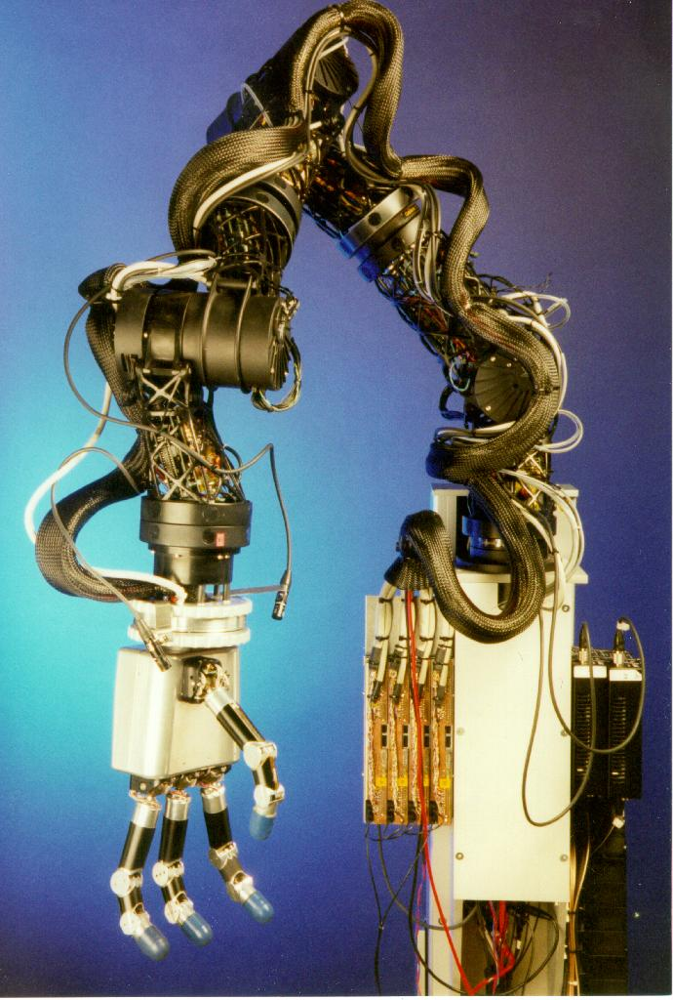
图 1.1: 第一台 DLR 轻型机器人 (LBR1)
开发满足上述要求的机器人臂是德国航空航天中心（DLR）机器人与机电一体化研究所研究活动的一个重点。这些开发的推动力来自于1993年的 D2-Spacelab 任务，在此期间 DLR 成功地与太空中的第一个机器人进行了实验 [31]。第一台 DLR 轻型机器人（LBR1）于1995年问世 [26]，第二代（LBR2）于1999年推出 [32]。通过机械和电气元件的高度集成，以及有针对性地选择轻质结构和电机-齿轮组合，轻型机器人（图1.1、图1.2）实现了约1:2的有效载荷与自重比，重量低于20公斤。除了常规的电机侧位置传感器外，关节还配备了力矩传感器。在 LBR2 中，还额外安装了输出侧位置传感器。两个机器人都具有末端执行器前的力-力矩传感器。这些机器人是具有七个自由度的冗余操作器。每个关节都配有一个浮点信号处理器，用于局部补偿快速的关节动力学。一个具有1ms通信速率的实时光通信总线将关节与中央计算机连接起来。所使用的永磁电机通过模拟霍尔传感器进行磁场定向控制，以减少力矩波动。
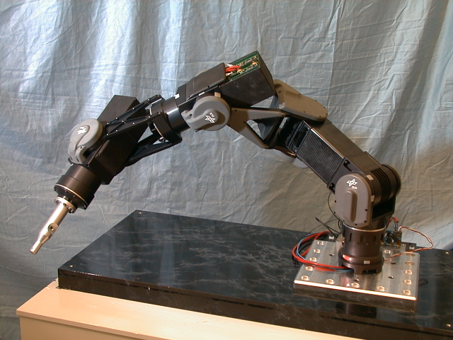
图 1.2: 第二台 DLR 轻型机器人 (LBR2)
在本工作框架内，创建了 LBR2 的关节控制结构，这些结构已在 LBR1 上开发和测试，以及一些笛卡尔控制结构。
1.3 工作目标
首要目标是建立一个适用于轻型机器人的合适模型，该模型能反映所有重要特征，同时又足够简单以允许控制器设计。同时，必须建立能够快速可靠地进行参数辨识的方法。由此产生的仿真工具是实现基于模型的控制算法的基本前提。
工作的主要目标是开发控制结构，在考虑关节弹性和完整机器人动力学的情况下，实现高带宽的位置、力矩和阻抗控制。同时期望这些控制器结构：
- 从理论角度看是完全合理的。这包括在考虑完整非线性动力学的情况下的稳定性证明，以及相应的鲁棒性研究。
- 在实践中是可行的，并能在日常连续运行中得到验证。
据我们所知，到目前为止，这两项要求对于具有弹性关节和六或七个自由度的机器人来说，尚未同时得到令人满意的满足。
1.4 技术现状与本工作的贡献
迄今为止，关于弹性关节机器人的研究活动源于两个不同的领域。一方面，工业机器人在高速运行时需要抑制出现的振动 [63], [88], [105], [111]。所使用的控制器必须简单、鲁棒，并且通常无需额外的传感器。然而，这些控制器在面对高度非线性的机器人动力学时的表现问题在理论上仍未解决。对于一些简单的控制结构（例如，PD控制器或基于“奇异摄动”理论的控制器），虽然可以保证稳定性，但实际效果不尽如人意（第4.1.1–4.1.4节）。
另一方面，理论控制工程师将弹性关节机器人模型视为非线性控制理论现代方法（如状态线性化、基于无源性的控制、滑模控制、反步法、自适应控制或非线性级联系统稳定性理论）的一个有趣应用实例（第4.1.5–4.1.8节）。其结果是产生了一系列非常有价值的理论控制方法，并可以证明其稳定性和误差收敛性 [100], [102], [68], [54], [14], [59], [60], [101]。然而，由于这些控制器可以说是“从稳定性证明出发”建立的，鉴于被控对象的复杂性，它们具有非常复杂的结构，这使得在六或七个自由度的机器人上实现显得不切实际。这些控制器的实验结果通常仅适用于一或两个自由度的实验室示例。
本工作的一个重要目标是弥合实验方法和理论方法之间的差距。为此，第3章建立了参数辨识方法，以得出精确的机器人模型 [5]。作为第一个控制器结构，提出了一种带重力补偿的状态控制器，其状态变量为电机位置和关节力矩及其导数（第4.2节）。我们认为，该结构是对于弹性关节机器人而言，同时在实践上高效且在理论上完全合理的最简单结构之一（第5章）[3], [4]。推导了保证控制器无源性的条件。这些条件基于无源性理论，确保了受控机器人的稳定性，无论质量矩阵的变化（例如由有效载荷引起）如何，以及与任意无源环境接触时的稳定性。
接下来，提出了一种逐步扩展该控制器的方法，允许在仍然可管理的结构中，将一些已知理论方法（例如状态线性化或带能量整形的基于无源性的控制器）的简化版本有效地进行实验实现。该结构包括一个带可变参数和机器人刚体动力学补偿的状态控制器（第4.2节，第6章）。
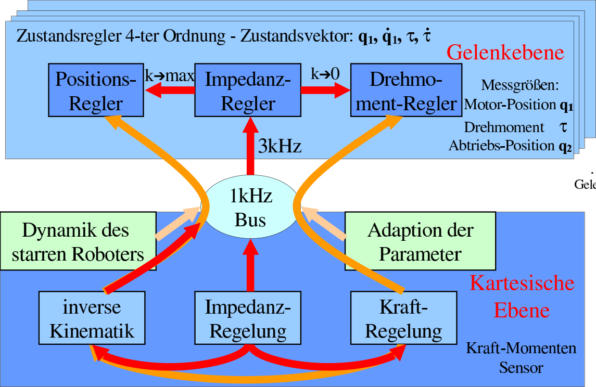
图 1.3: DLR 轻型机器人的控制器架构
在轻型机器人上的实验经验揭示了已知理论方法的一些缺点。这些缺点涉及到通过高刚度或低输出惯性进行降阶时的行为，或者涉及到非常大的输出惯性时的行为。这导致提出了一种新的理论控制器，它也涵盖了这些实际相关的特殊情况。最后，介绍了该方法的简化实现作为可变参数控制器的实验结果（第6章）。
在大多数已知的弹性关节机器人控制方法中，状态向量由电机和输出位置（分别为 q₁ 和 q₂）及其导数 q̇₁、q̇₂ 组成。在本工作框架内，所有已实现的控制器始终使用电机位置和电机速度，以及力矩及其导数作为状态向量。其中位置和力矩被直接测量，导数通过数值微分确定。力矩的测量在参数辨识以及主动振动抑制和柔顺机器人控制方法的实现方面都带来了显著优势。
图1.3给出了DLR轻型机器人中控制器概念的良好概览。本工作中提出的控制器结构通过带动力学补偿的状态控制器在关节层面提供了一个阻抗接口，该接口可以配置为力矩、位置或刚度控制器。这使得能够实现和研究笛卡尔位置、力和阻抗控制的不同方法。例如，笛卡尔阻抗控制器可以通过雅可比矩阵访问力矩接口，通过逆运动学访问位置接口，或直接访问关节阻抗接口。
刚性机器人的笛卡尔阻抗控制结构是众所周知的，并已被广泛应用 [80], [35], [22], [40], [10], [16], [121], [17], [55], [99], [107]。其中一些方法有扩展到弹性关节机器人的版本 [53], [24]。然而，在弹性关节机器人背景下，基于关节阻抗控制的笛卡尔刚度控制迄今鲜有论述。
第6.10节对不同笛卡尔阻抗控制方法进行了比较研究，并提出了一种新结构，以最佳利用关节控制器的带宽。作为一个实际应用示例，展示了将活塞插入发动机缸体的过程。
2. 弹性关节机器人建模
2.1 问题描述
在本工作中，术语“机器人”是指具有串联运动学的操作器，如图2.1示意。作为一阶近似，机器人的所有部件都被视为刚体，因此具有 N 个轴的机器人动力学可以通过一个以关节角度为广义坐标的微分方程组来描述。这种在大多数标准文献中采用的模型假设，对于中等运动速度的工业机器人是成立的。在工业机器人的开发中，特别注意避免弹性以及关节间的机械耦合，因此这些机器人可以用相对简单的控制器结构来控制。但这以牺牲机器人的总质量为代价，导致典型的有效载荷与自重比约为1:20。对于 DLR 轻型机器人，最大化这个比率是主要标准，但对于高速、高频运动的工业机器人也是如此，刚体结构的假设不再成立。文献中通常采用两种模型扩展来考虑结构弹性：
带弹性关节的机器人：在此模型假设下，弹性被集中考虑在机器人关节中，而关节之间的连接结构保持刚体模型。当弹性主要归因于传动装置，以及在轻型机器人的情况下，也归因于力矩传感器时，这种假设是成立的。这类机器人可以像刚性机器人一样用常微分方程描述。
带弹性连杆的机器人：在这种情况下，关节之间连接结构的柔顺性也被考虑在内。这种模型假设在非常长和轻的结构中是必要的，例如起重机机器人或大型太空机器人 [106]。为了对带弹性结构的机器人进行建模，需要使用偏微分方程 [61], [78], [118], [12], [52], [79]。
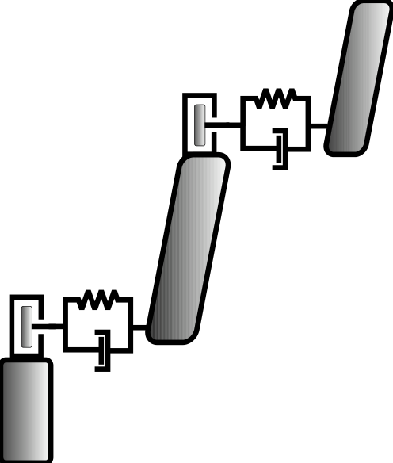
图 2.1: 带弹性关节的机器人
在 DLR 轻型机器人的关节中使用谐波传动齿轮和力矩传感器导致了不可忽略的关节柔顺性。同时，在设计中特别注意使连接结构以及关节的支承具有高刚度，因此其柔顺性显著低于关节在旋转方向上的弹性。因此，对于 DLR 轻型机器人，采用带弹性关节的机器人模型假设是在模型复杂度和建模精度之间的一种合理折衷。本工作的结果对工业机器人也具有相关性，因为在高速和高负载下，同样可以采用相同的模型。
本章简要概述了带弹性关节机器人的动力学方程的推导，特别关注刚性机器人和弹性机器人模型之间的差异。强调了文献中常见的简化模型假设，并进行了讨论。关于刚性机器人动力学的详细推导，请参考标准著作 [21], [104], [120], [46]。弹性机器人的运动方程例如在 [77], [100], [112] 中建立。对惯性矩阵或势能的显式推导超出了本简短介绍的范畴，应参考上述文献。
2.2 动力学模型
带弹性关节的机器人与刚体模型之间的根本区别在于，每个关节与后续的连接连杆必须建模为一个双质量系统（图2.2）。因此，具有 N 个关节的机器人包含 2N 个刚体：N 个电机惯性和 N 个连接结构。它们之间的弹簧被视为无质量。因此，需要 2N 个广义坐标来描述运动：
其中 $q_1$ 是电机位置向量，$q_2$ 是输出侧位置向量。需要指出的是，以下所有量都参考输出侧，因此电机量通过传动比进行换算：
其中 $q_1, \tau_m, J$ 分别是电机侧位置、电机力矩和电机惯性的换算值。$q_{\text{mot}}, \tau_{\text{mot}}, J_{\text{mot}}$ 表示相应的实际物理值。$n$ 是传动比。在本文的后续部分，传动比将不再在模型中显式提及。
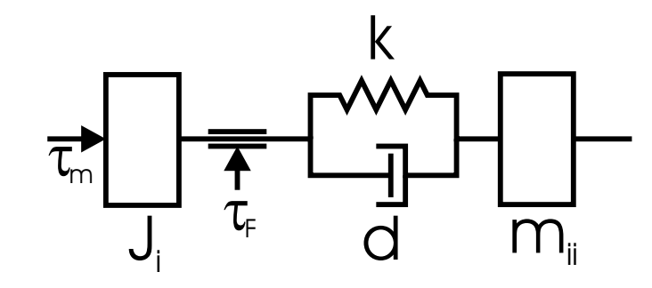
图 2.2: 弹性机器人关节的双质量模型及后续连杆
推导机器人动力学方程的一种方法是拉格朗日形式主义。机器人的总动能为：
$M_R(q)$ 是机器人的二次型、正定惯性矩阵。文献 [100], [112], [60] 中一致采用以下第一个假设：
- A1：电机侧的刚体是旋转对称体，其质心位于转子旋转轴上。
根据这个假设，重力和惯性矩阵都只依赖于输出侧角度 $q_2$。因此，惯性矩阵具有以下形式：
矩阵 $M, S$ 和 $J$ 的维度均为 $N \times N$。矩阵 $M(q_2)$ 对应于刚性机器人的惯性矩阵，因此对于每个关节包含所有后续转子和连杆的惯性。$J_R$ 是一个常数矩阵，其对角元素包含转子绕其旋转轴的惯性。矩阵 $S(q_2)$ 表示转子与机器人连杆之间的惯性耦合。它对应于转子绕除旋转轴以外的其他轴的动能，由机器人的输出侧速度引起。
系统的势能 $U = U_G + U_F$ 由重力势能和关节弹簧势能组成。在考虑假设 (A1) 的情况下，重力场中的能量仅依赖于输出侧位置 $q_2$：
关节中弹簧的势能为：
其中 $K$ 是对角刚度矩阵，其对角元素代表各个关节的刚度。如果用 $K_E$ 表示以下 $2N \times 2N$ 矩阵
则弹簧势能可以写成
因此，系统的拉格朗日函数为
由拉格朗日形式主义可得出带弹性关节机器人的动力学方程：
其中 $\tau_M = [\tau_m, 0_{1 \times N}]^T$ 是驱动力矩向量。将显式的拉格朗日函数代入 (2.10) 得到以下模型：
表达式 $C_R(q_2, \dot{q}_2)\dot{q}$ 汇总了科里奥利和离心力项，$g_R(q_2)$ 是重力向量：
并且有
其中
这里利用了惯性矩阵的对称性 $M_R(q_2) = M_R^T(q_2)$。由 (2.15) 得出机器人动力学的一个性质，该性质在本工作的稳定性证明中起核心作用：
定理 1：矩阵
是反对称的（$B^T(q_2, \dot{q}_2) = -B(q_2, \dot{q}_2)$），等价于
证明：证明立即由 (2.13–2.15) 得出，因为
动力学方程 (2.11) 的相对通用形式有一个缺点，即该模型不是状态可线性化的 [60]。文献 [100] 中引入了一个非常有用的模型简化。它涉及到忽略惯性矩阵 $M_R(q_2)$ 中的矩阵 $S(q_2)$。该矩阵对应于电机和机器人连杆之间的惯性耦合。
- A2：电机侧质量的动能主要由电机自身的旋转速度引起。
对于具有大减速比传动装置的机器人，例如 DLR 轻型机器人 ($n = 160 \ldots 600$)，这是一个相当合理的近似。在这种情况下，耦合项比由高电机速度引起的项小大约传动比的因子，即至少两个数量级（附录 A.1）。
通过假设 $S(q_2) = 0$，机器人的动力学可以总结为两个方程组，分别涉及机器人的电机侧和输出侧动力学：
其中
表示弹簧中的力矩。方程 (2.21) 对应于刚性机器人的动力学，如标准文献中已知。然而，输入力矩来自关节弹簧而非电机，而电机力矩通过电机动力学 (2.20) 与之耦合。该模型的另一个优点是它直接且直观地推广了刚性机器人模型。对于理想刚性关节，关节弹性为无穷大 ($k_i \to \infty$)。由于关节力矩具有有限值，由 (2.22) 得
因此，将 (2.20) 代入 (2.21) 得到已知的刚体模型：
备注：这里再次明确指出矩阵 $M(q_2)$ 的含义。该矩阵包含输出侧连杆的质量和惯性张量。每个连杆 $i$ 的质量中加上后续转子 $(i+1)$ 的质量。由于假设 (A1)，这是可能的，因为转子 $(i+1)$ 质心的速度不依赖于其自身速度。从转子的惯性张量中考虑主要分量 $J$。因此，该模型仅忽略了转子的耦合惯性和陀螺力矩。
为了完善模型，还需要摩擦力。由于高传动比，输出侧摩擦与电机侧摩擦相比可以忽略，因此文献中几乎总是只对电机侧摩擦进行建模。除了少数例外，弹簧阻尼（图2.2）被忽略。例如，对于输入-输出线性化，这种简化是必要的。在本工作中，弹簧阻尼以对角阻尼矩阵 $D$ 的形式加以考虑。因此，得到以下模型，它是本工作大多数研究的基础：
$\tau_F$ 代表电机侧摩擦。
2.3 摩擦建模
摩擦的建模和捕获是传动比高的机器人建模中的关键点。摩擦是一个非线性模型分量，在速度轴的零点处具有不连续性，因此可以从根本上影响系统的行为。第一代 DLR 轻型机器人（传动比 $n = 1:512$ 至 $1:612$）的传动效率约为35%。第二代轻型机器人使用减速比为 $n = 1:160$ 的谐波传动齿轮，效率为65%至70%。因此，在这两种情况下，大部分电机力矩都用于克服摩擦。与摩擦力矩相比，例如机器人动力学中的陀螺力矩可以忽略。因此，必须特别注意摩擦的建模、辨识和补偿。
文献 [69] 对驱动系统中摩擦的建模提供了很好的概述。其范围从包含粘性和库仑摩擦的简单结构，到非常详细的微观或随机模型。针对谐波传动齿轮的摩擦建模，已经进行了广泛的研究 [48], [109], [29], [114]。所提出的模型种类繁多，细节程度各异，这表明摩擦通常只能被不完整地建模，并且始终是系统中的不精确性来源。这是因为摩擦力不仅取决于速度或负载，还会随着时间和温度的变化而变化。
在 DLR 轻型机器人上进行的实验使得在模型中考虑了以下摩擦分量：
- 粘性摩擦：在所研究的情况下，摩擦力与速度的线性关系提供了足够的精度。与速度更高次幂的相关性不相关。
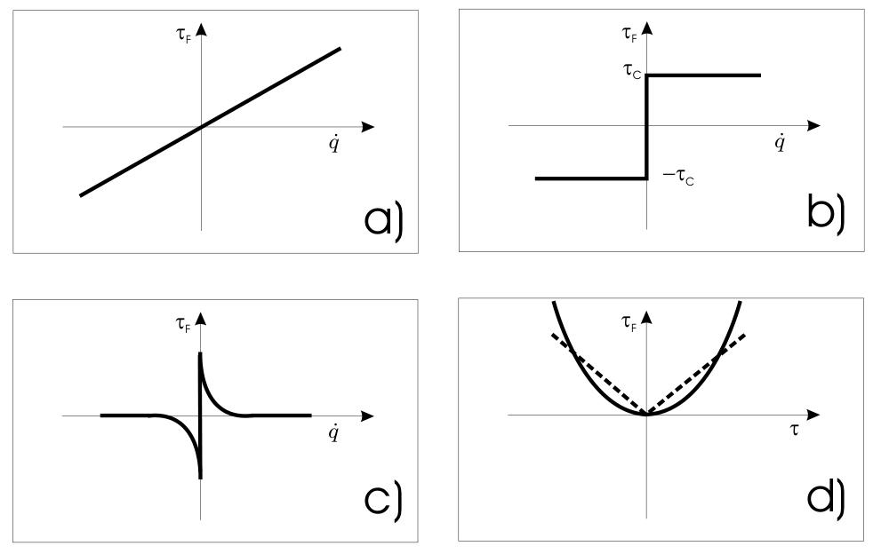
图 2.3: a) 粘性摩擦， b) 库仑摩擦， c) 斯特里贝克摩擦（静摩擦）， d) 负载相关摩擦
库仑摩擦：这是指形式为
的摩擦力，在速度轴的零点处有一个跳跃。但跳跃的高度被发现强烈依赖于关节负载。因此，除了在无负载时也出现的常数部分 $\tau_C$ 外，对于谐波传动还发现与负载的线性相关性，对于行星齿轮则发现与负载的二次相关性。
斯特里贝克摩擦：该分量模拟了库仑摩擦在静止时取值较高，然后随着运动状态的开始而减小的现象。为了仿真目的，用一个连续函数来近似该分量是有用的。通常使用指数函数。
图2.3展示了摩擦各个分量的曲线。另一个对于建立仿真感兴趣的问题是如何处理速度零点处的不连续性，因为在这种情况下，从先前的考虑中无法确定摩擦力的大小。对此有两种方法：
在静止状态，将关节的两个相邻机器人连杆组合成一个刚体。为此，需要检测静止状态并在多体仿真中切换模型。对于一个 N 轴机器人，根据静止关节的不同，需要在 $2^N$ 个刚体模型之间切换。这种方法即使对于刚性机器人也能实现快速仿真，但缺点是模型复杂度高。
使用单一多体模型，在静止状态下，将摩擦力设置为等于驱动力，直到超过最大静摩擦力。这是物理上合理的方法，但在高关节刚度下可能导致较长的仿真时间。然而，由于所仿真机器人的关节具有显著的弹性，因此采用了这种方法进行仿真。
因此，得出以下通用摩擦模型，然后针对两个机器人进行了具体调整：
其中
并且 $\tau_C, \mu, \mu_1$ 是常数和力矩相关库仑摩擦的系数，$S$ 和 $v_s$ 参数化斯特里贝克摩擦，$d_1$ 是粘性摩擦系数。$\epsilon$ 是一个小常数，用于避免确定速度的精确过零点，从而有助于缩短仿真时间。在实际系统中，该常数 $\epsilon = 0$。图2.4示例性地展示了摩擦与速度和力矩的关系。
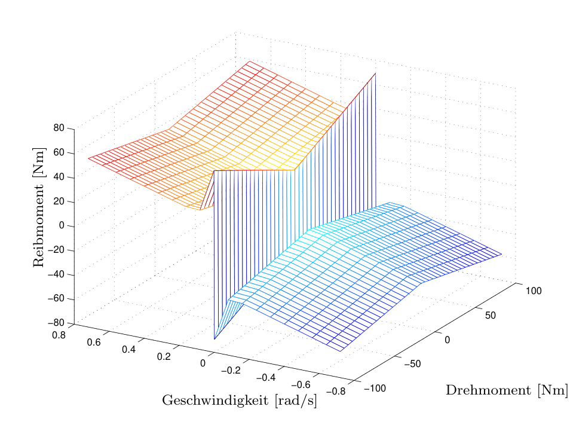
图 2.4: 谐波传动齿轮的摩擦模型
2.4 驱动模型
本章建立的模型的接口是电机力矩。因此，在此简要描述电机控制，并给出一个驱动器的替代模型，该模型用于机器人的整体仿真和控制器设计。
轻型机器人关节中使用磁场定向控制的永磁电机。与市售电机的主要区别在于，数字霍尔传感器被模拟传感器取代。从控制技术的角度来看，这意味着周期性力矩波动的显著减少。LBR1 的电机控制的详细描述见 [91], [93]。图2.5展示了 LBR2 电机的控制器结构。
$I_a, I_b$ 是电机绕组中的电流。对于恒定力矩，这些电流呈正弦变化。关节控制器指令电流 $I_q$ 和 $I_d$。$I_q$ 单独负责产生力矩。$I_q$ 和 $\tau_M$ 之间存在简单的比例关系。$I_d$ 有助于弱磁，因此可以在低负载下实现更高的速度。通过利用霍尔信号将 $I_d$ 和 $I_q$ 变换到定子坐标系，产生电机目标电流 $I_{ar}, I_{br}$。随后，使用带反电动势前馈补偿的线性 PI 控制器调节相电流。FPGA 中的控制器周期为25 µs。受控电机的行为可以用一个 PT1 环节近似：
所有轴的受控电机过渡时间 $t_{\text{mot}} < 200\,\mu s$。由于受控关节的过渡时间 $t_G = 20\,ms$，即至少慢两个数量级，因此在设计关节控制器时可以忽略电机时间常数，并将电机视为理想力矩源。
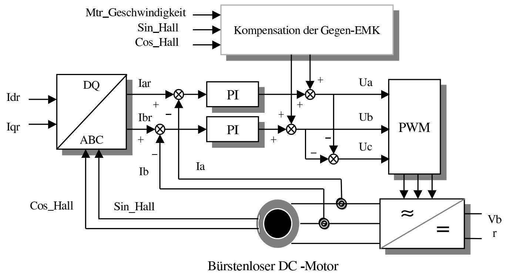
图 2.5: 无刷直流电机的磁场定向控制
3. 参数辨识
虽然前一章中提出的弹性关节机器人理论模型在文献中被普遍接受，但对这些模型的参数辨识是一项特殊的实践挑战，文献中尚未明确确定解决该问题的统一方法。主要困难源于模型的非线性特性、整个机器人的大量参数，以及驱动器需要在大速度和负载范围内运行，模型必须在此范围内保持有效性。具有弹性关节和刚性连杆的机器人模型是一个重要的简化。然而，在实际机器人中，还存在额外的弹性，例如在轴承、叉形结构等中，这些弹性要么需要被额外建模，要么必须并入关节的等效替代弹性中。在模型简单性和足够的建模精度之间进行折衷，只能通过一个耗时的迭代过程来实现。本章介绍了文献中常见的用于弹性关节机器人参数辨识的方法，并展示了相关的自身经验和结果。从这些经验中，形成了一种能够实现简单、可靠和精确参数辨识的途径。该途径将被详细阐述，并展示相应的辨识和仿真结果。
表3.1总结了DLR轻型机器人待确定的参数。
表 3.1: DLR 轻型机器人模型参数总结
| 参数类别 | 具体参数 |
|---|---|
| 刚体模型参数 | 运动学参数（DH参数） |
| 动力学参数（重心、质量、质量惯性） | |
| 关节模型参数 | 电机惯性、关节刚度和阻尼、电机特性曲线、摩擦参数 |
3.1 辨识方法的选择标准
文献中提出了许多不同的关节参数辨识方法。对于第一台轻型机器人的辨识，使用了其中一些方法并进行了比较。本节将根据一些关键标准进行分类，并总结使用这些方法的自身经验。将讨论以下标准：
- 频域或时域辨识
- 动态或静态映射的优化
- 非线性 - 线性参数化模型
- 基于模型或无模型方法
- 在线或离线辨识
3.1.1 频域 – 时域
由于关节作为一个弹性连接的双质量系统具有明显的谐振峰，因此在频域应用辨识方法是顺理成章的。例如，[89], [63], [41] 中使用了这种方法。在一项委托工作中，该方法被应用于 LBR1 的一个关节 [62]。图3.1显示了一个典型的频率响应。在幅频和相频响应中都可以看到谐振峰。值得注意的是，该关节还具有第二个高频谐振峰。为了测量出这个近乎理想的频率响应，必须满足一些条件。最重要的是，关节只能朝一个方向旋转，以减少摩擦和回差的影响。此外，负载变化应尽可能小，以避免非线性刚度的影响。在本工作框架内，对该方法进行了进一步开发，以考虑上述非线性。这主要旨在改进仿真与典型机器人臂轨迹测量数据之间的一致性。在此优化过程中，主要优化以下参数：
- 依赖于负载的非线性弹簧常数
- 阻尼
- 依赖于负载的摩擦
- 回差
- 惯性矩
- 周期性变化的效率
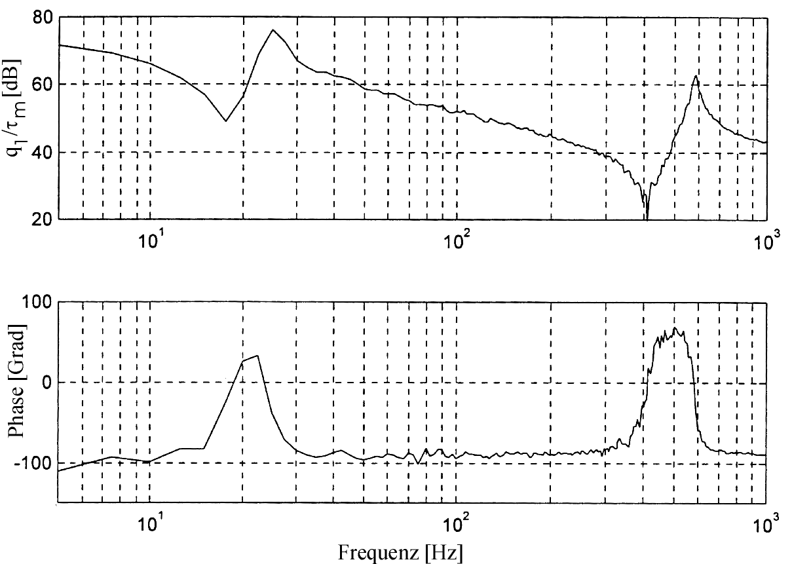
图 3.1: 电机力矩 - 电机速度频率响应
这些辨识尝试的结果可以总结如下：
- 对于单次测量，测量与模型之间可以达到较好的一致性。
- 由于问题的强非线性和病态性，获得的参数值高度依赖于初始值。即使对于不同的轨迹，也会得到不同的参数集，这表明达到的不是真实的物理值，而是局部最小值。大量的参数使得优化非常耗时。
通过这种方式，无法为机器人关节的整个工作范围获得一个模型。
虽然频域辨识仅对近似线性模型提供良好结果，并且需要在大的频谱范围内激励关节（例如，通过在电流指令上叠加白噪声），但时域辨识更适合处理关节中明显的非线性。此外，时域方法非常适合沿与机器人典型运动相对应的轨迹进行辨识。因此，后续工作集中在时域辨识上。
3.1.2 动态 – 静态映射
考虑一个一般非线性系统，形式为
其中 $u(t)$ 为输入，$x(t)$ 为状态，$y(t)$ 为可测输出，$\theta$ 为未知参数向量。如果仅有测量值 $y_m$ 和 $u_m$ 可用于辨识参数向量 $\theta$，则通过优化方法最小化二次误差
在每个优化步骤中，需要使用测量输入 $u_m(t)$ 和当前参数向量估计值 $\hat{\theta}$ 进行动态系统的仿真来计算估计值 $\hat{y}(t)$。这通常会导致非常长的计算时间。例如，在频域辨识中就是这种情况。
如果现在可以测量状态向量 $x(t)$，或者可以轻松地（例如，通过数值微分或基于模型已知的子系统的关系）从测量数据中计算出状态向量，则无需再对非线性系统进行仿真。这显著减少了优化时间，因为现在只需要优化形如 (3.2) 的静态映射。
3.1.3 非线性 – 线性参数化模型
如果可以将方程 (3.2) 写成以下形式，则可以实现优化问题的进一步显著简化：
其中回归量 $Y(x)$ 是一个矩阵，其元素是状态向量 $x(t)$ 的非线性函数，但不依赖于未知参数 $\theta_1$。如果状态 $x(t)$ 是可测的，则矩阵 $Y(x(t))$ 总是可以计算出来，因此参数辨识问题简化为线性优化问题。
通常，(3.2) 中物理模型参数的参数向量 $\theta$ 与 (3.4) 中的 $\theta_1$ 不相同。允许表示 (3.4) 的参数向量 $\theta_1$ 必须通过对系统方程进行适当变换来确定。
在本文后续部分，通过适当选择模型表示和测量实验，总是力求将参数辨识问题简化为静态的线性优化问题。
3.1.4 基于模型 – 无模型
所有先前介绍的辨识方法都需要以特定显式方程形式了解模型结构。当然，考虑无模型辨识方法的优缺点也是值得的。在本工作框架内，更详细地研究了两种方法：
线性传递函数辨识：这种线性控制理论中的标准方法假设一个未知传递函数，形式为
[74]。其中，系数 $a_i$ 和 $b_i$ 以及系统阶数 $n$ 都可以优化。优化基于输入和输出量（例如电机力矩和输出侧位置）的测量以及实验传递函数的确定。非常快就发现，由于明显的非线性，这种方法即使在单关节情况下也几乎没有成功的机会。
基于神经网络的非线性辨识：这种方法在九十年代初引起了很高的期望，并且有人致力于从理论和实践角度夯实这种方法。由此产生的有价值的结果，特别是对于静态非线性映射的辨识，也在机器人学中得到了应用 [67], [39]。一类广泛使用的神经网络的结构可以如图3.2所示 [97]。神经元执行一个预定的非线性函数 $\Phi$，例如
神经元的输出随后通过权重矩阵 $W_i$ 和偏置向量 $B_i$ 进行线性组合。一个双层神经网络描述的函数是：
根据魏尔斯特拉斯定理，可以证明（例如 [38]）这些结构是通用逼近器（即，任意连续函数 $y = f(u)$ 都可以用一个足够大的网络任意精确地逼近）。同时，这种非线性表示允许比其它线性逼近方法更紧凑地表示系统（在待调整参数数量方面）[13]。
神经网络参数 $W_i$ 和 $B_i$ 的调整问题，以达到相应的逼近精度，通常是一个非线性优化问题，在这种情况下被称为学习或训练。
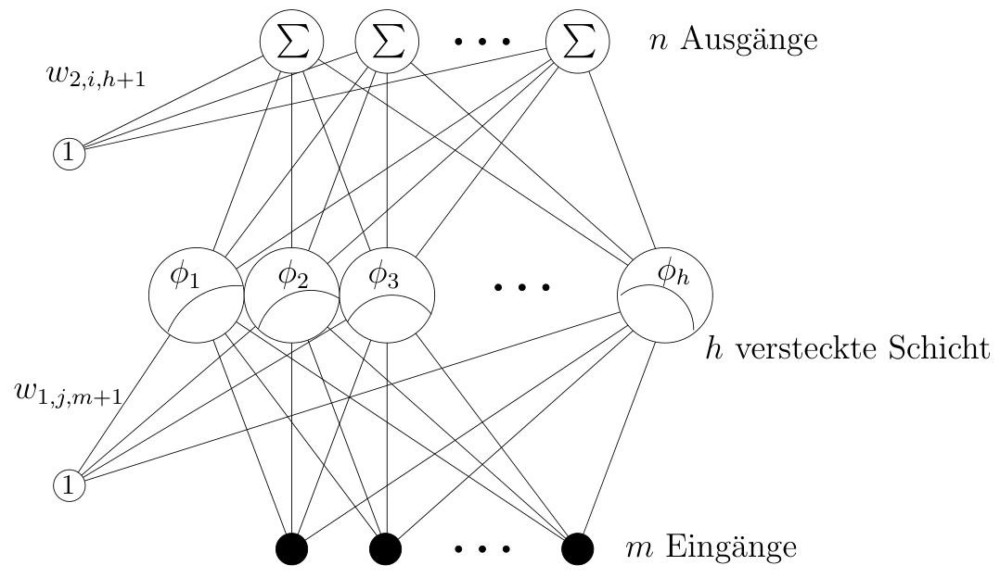
图 3.2: 神经网络结构
通常，训练使用梯度下降、牛顿-欧拉或共轭梯度 [97] 优化方法进行。因此，它具有前面提到的非线性优化的困难。
曾尝试规避非线性优化问题 [98]。一系列工作 [81], [25] 提出了具有单层神经元的网络结构，其非线性是局部的（例如高斯曲线），并且其参数是先验确定的（例如 $W_1 = I, B_1 = -B_{\text{const}}$，此外 $B_2 = 0$）。网络则由以下函数描述：
这种形式类似于方程 (3.4)，即非线性系统在待优化参数 $W$ 中是线性的。因此，网络训练成为一个线性优化问题。然而，这种显著简化是以神经元数量显著增加为代价的。为了在非线性不可调整的情况下实现良好的逼近，神经元在实际情况下必须具有强烈的局部特性，这对于高维的输入-输出对 $\{u, y\}$ 导致网络规模庞大，从而训练时间长。可以认为，网络维度和训练数据大小随输入向量 $y$ 的维度呈指数增长。这种现象也被神经信息学家称为维数灾难。
对于实际应用，可以总结如下：当存在一个非线性代数映射，但无法建立具有足够精度的物理模型时，神经网络是一个合理的替代方案。由于维度问题，当辨识被分解为具有少量输入变量的独立子函数时，成功的机会最大。
在本工作框架内的初步辨识尝试中，特别关注了神经方法。使用具有图3.2结构和非线性神经元函数 $\Phi_\sigma(x)$ 的前馈网络，采用非线性优化方法进行训练。对于关节辨识，它们被用于辨识摩擦和非线性弹簧刚度 [92]，以及学习 LBR1 的重力模型。这些实验和结果将在第3.4节中介绍。
3.1.5 在线 – 离线
考虑使用在线辨识方法来捕捉参数随时间的变化是值得的。这面临两个困难：
- (1) 为了使参数收敛，系统必须持续激励，即测量信号必须包含收敛所需的信息量。
- (2) 如果被优化的参数同时用于控制，则必须采取额外措施来确保整个系统的稳定性。
第 (1) 点对于像摩擦这样的小子系统就已经难以保证。相比之下，通过离线辨识，可以有目的地进行覆盖大输入数据范围的测量。考虑到这一点以及第 (2) 点，放弃在线辨识似乎是合理的。然而，自适应模型参考控制（MRAC）方法提供了一种有趣的替代方案，它保证了稳定性和控制误差的收敛性，即使不要求被控对象参数收敛到真实值。但自适应控制超出了本工作的范围，应作为 LBR 未来工作的主题。
3.2 关节参数辨识的初步考虑
在实际操作中，对组装好的机器人进行关节参数辨识是非常期望的。对于购买的机器人，为了辨识单个轴而进行拆卸 [113] 会带来很大的额外工作量。然而，很快就会发现，尤其是在组装状态下辨识关节刚度是非常不精确的。由于各轴振动的耦合，关节弹性与机器人振动频率之间呈现出非常复杂的关系。即使是在能够获取电机和输出位置以及关节力矩这一非常有利的情况下，对于 LBR 来说，关节刚度的辨识仍然是关键的。这将在相应章节中详细讨论。如果没有输出侧传感器，或者存在不位于电机和输出侧传感器之间的其他弹性，则只能通过振动频率间接确定弹性。在这种情况下，以下方法可用于关节参数辨识：
M1：同时辨识机器人的所有轴。这种方法会导致大量的参数（N 个刚度和 N 个阻尼值）。同时，必须已知精确的刚体模型。在这种情况下，这是一个非线性优化问题。因此，这种方法看起来非常繁琐且不太可能成功。
M2：辨识单个轴，同时假设其余轴是刚性的。这种方法适用于弹性不高的机器人，例如工业机器人 [105], [111]。工业机器人的轴通常设计为从基座到末端的惯性按大步长递减，以尽可能减小耦合。这在手腕轴和主要轴之间的对比中尤为明显。这样振动频率更容易分离。
在 DLR 轻型机器人中，这些条件只在较小程度上满足。轻量化设计要求最小化每个关节的惯性，耦合应通过控制来补偿。因此，各轴的振动频率处于相同的数量级。因此，机器人执行耦合的振动运动，其取决于多个轴的刚度同时。以下示例说明了由这种方法引起的不准确性：
示例：假设在假设 (M2) 下确定 LBR2 第二轴的刚度。为此，为机器人选择一种配置，其中所有其他旋转轴都垂直于第二轴。该配置如图3.3所示。如果静态情况下对机器人施加绕第二轴的力矩，则机器人末端的位移仅取决于该轴的弹性。因此，达到了最大程度的解耦。但是，如果用这样的力矩激励该关节，然后让机器人自由振动，则除了第二轴外，其他轴也会开始振动。图3.4显示了在该实验中记录的前三个关节的力矩。引人注目的是，轴2和轴3以相同的频率振动，这表明它们之间存在耦合振动。其原因主要在于机器人的刚体动力学：当手臂绕第二轴进行振动运动时，在弯曲的手臂中会产生离心力，从而产生绕第三轴的力矩。这导致了轴二和轴三之间的耦合振动，尽管这些轴相互垂直。一般可以说，对于第二轴，找不到可以实现足够解耦的配置。在给出的示例中，假设 (M2) 确定刚度，得到的值为 $k^{(M2)} = 10500\,\text{Nm/rad}$。由此产生的误差为28%，与在关节测试台上确定的刚度值 $k = 14600\,\text{Nm/rad}$ 相比。因此，这种方法对于轻型机器人来说不够精确。
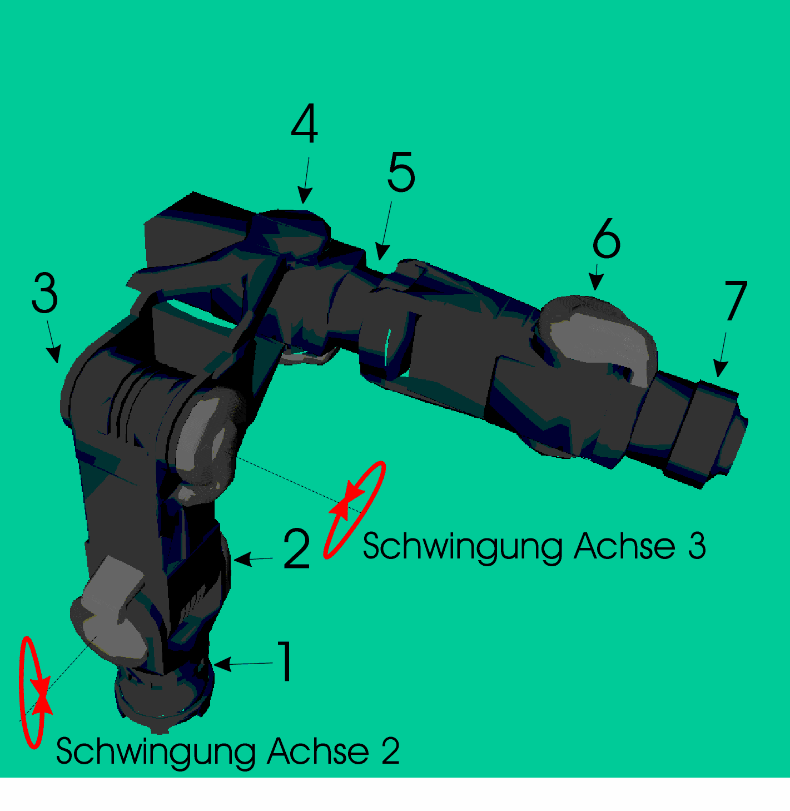
图 3.3: 用于确定 LBR2 第二轴振动频率的机器人配置
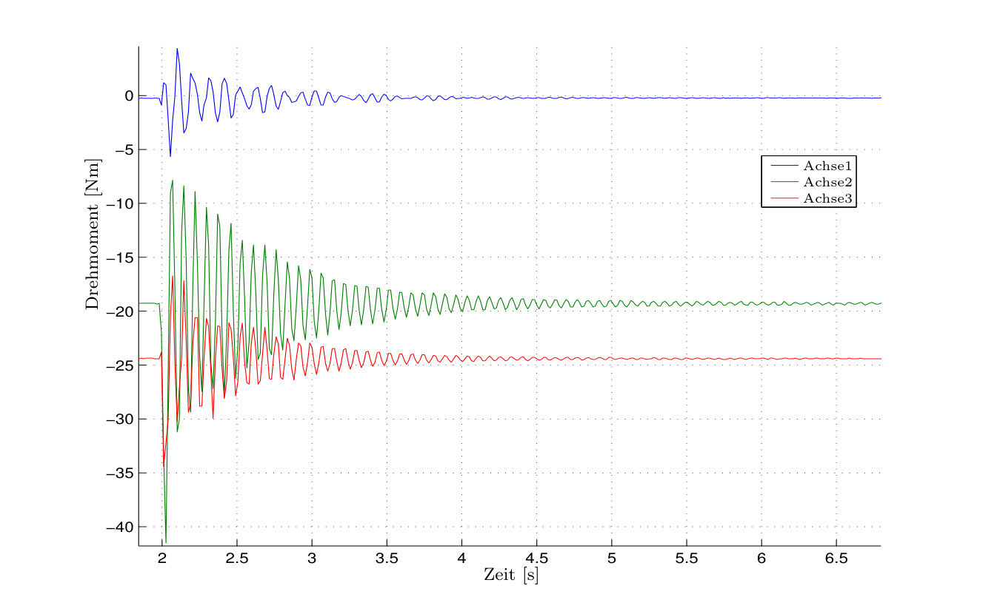
图 3.4: 振动测量中第一、第二和第三关节的力矩信号
- M3：单独构建的关节的辨识。从上述考虑可以看出，如果要求高模型精度，对每个关节单独进行参数辨识是最好的解决方案。这主要涉及关节刚度和阻尼，其余参数也可以在组装状态下轻松确定。由于 DLR 机器人的各个关节是在内部制造然后组装的，因此在组装前构建和辨识单个关节并不会带来显著的额外工作量。相反，对于每种新关节类型，使用合适的关节测试台更容易进行机械和电子系统的调试。对于已组装的机器人，[37] 中选择的解决方案是一个可行的替代方案。这里，通过适当的夹紧相应的机器人连杆来实现关节振动的解耦。这需要使用专门制造的夹具，其刚度比关节的刚度高出几个数量级。
在所有情况下，都基于时域测量进行了离线优化。
在接下来的小节中，将介绍各个参数组的辨识。
3.3 关节参数辨识
3.3.1 关节刚度和阻尼的辨识
关节中柔顺性的来源可以在图3.6的简化示意图中最好地识别。弹性主要来自谐波传动齿轮（$F_1$）和力矩传感器（$F_2$）。这两个部件直接连接，中间没有显著的质量，因此这两个弹簧可以合并为一个等效弹性。此外，在连接结构中也观察到较小的弹性（$F_3, F_4$），它们会影响关节的振动频率。辨识等效弹簧最简单的方法是固定电机惯性，激励输出惯性振动。这种方法的优点在于，双质量模型变成了一个弹簧-质量模型，其振动频率以最简单的方式取决于关节刚度。此外，由于库仑摩擦仅在电机侧作用，因此消除了其非线性影响。因此，该系统具有良好的线性行为近似。
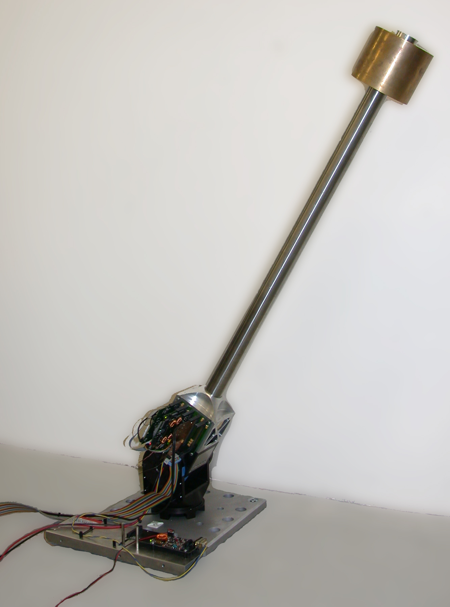
图 3.5: 用于关节参数辨识的测试台
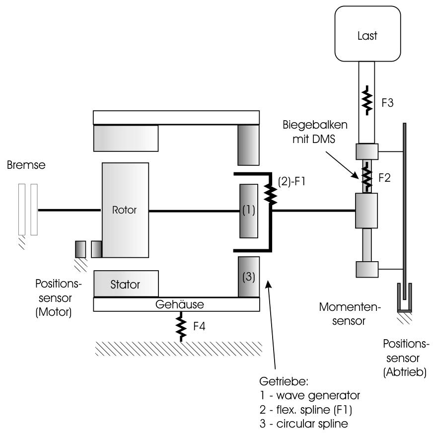
图 3.6: 关节参数辨识测试台的示意图
已知关节刚度依赖于关节力矩。在图3.5所示的实验装置中，关节可以简单地通过重力加载在不同的位置，以检验这种依赖性。数据采集是完全自动化的。关节以恒定角速度运动。在恒定的间隔（例如10°），从垂直位置开始，控制器被关闭，电机通过制动器停止。电机的速度跳跃激励弹簧和输出侧质量振动。振动在力矩信号上清晰可见。第二轴的测量记录如图3.7所示。
对于这种电机轴被锁定的简单一维情况，系统的方程 (2.27)、(2.26) 简化为
或者
其中 $J_2$ 是质量惯性，$m_2$ 是质量，$l_{g2}$ 是输出侧连杆（含负载）的重心。$q_{1,0}$ 是恒定的电机位置。由于振动的角振幅很小（对于图3.7中的实验，$\Delta q_{2,\max} < 0.2^\circ$），围绕各自静止状态的线性化是可行的。使用记号
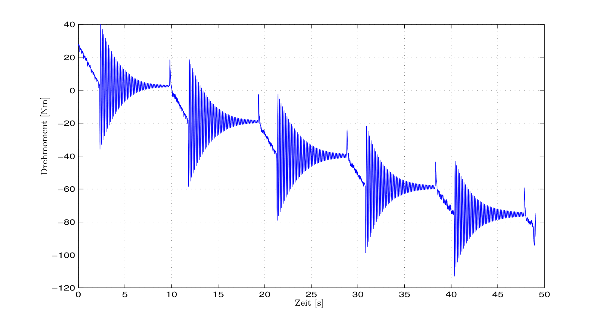
图 3.7: 在不同关节位置进行的自动化振动测量，用于确定关节弹性和阻尼
线性化系统为
因此，力矩差具有以下形式
使用 Matlab 程序进行参数辨识的数据处理。从图3.7的测量记录中，为每个线性化点提取测得的力矩 $\Delta \tau_m$，并优化参数向量 $(\alpha, \omega)$，以最小化误差
（$N$ 为测量点数）。
如果选择测量的起始点使得 $\phi = 0$，则得到力矩 $\Delta \tau(t, \alpha, \omega)$ 的依赖关系，虽然它在 $\alpha$ 和 $\omega$ 中是非线性的，但由于其特殊的简单性，可以毫无问题地使用标准优化方法进行辨识。图3.8示例性地显示了一个线性化点的测量力矩 $\Delta \tau_m$ 和辨识结果 $\Delta \tau$。注意到两个信号的振动频率和阻尼非常吻合。
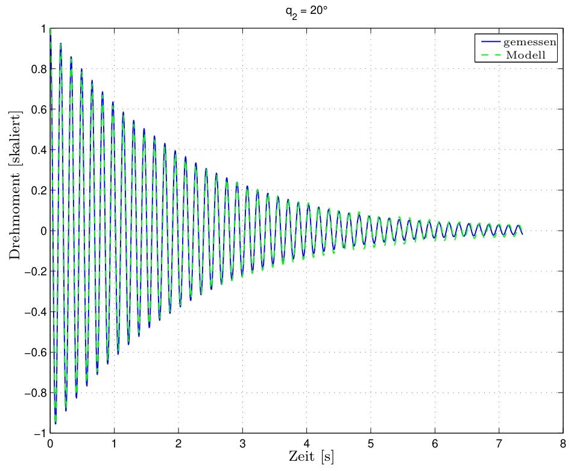
图 3.8: 测量的关节振动和 LBR2 第二轴的优化结果，角度 $q_2 = 20^\circ$
由于简单的几何形状，负载的质量、质量惯性和重心可以从 CAD 数据中高精度地获知。因此，关节弹性 $k$ 和阻尼 $d$ 可以直接从 $\alpha$ 和 $\omega$ 确定：
第二轴的辨识结果总结在表3.2中，刚度曲线如图3.9所示。
表 3.2: 振动测量的辨识结果
| 统计量 | 频率 [Hz] | 刚度 [Nm/rad] | 阻尼 [Nms/rad] |
|---|---|---|---|
| 最小值 | 6.02 | 14578.0 | 8.21 |
| 最大值 | 6.28 | 15970.0 | 9.50 |
| 平均值 | 6.17 | 15351.0 | 8.73 |
| 最大偏差 % | 2.44 | 5.08 | 8.78 |
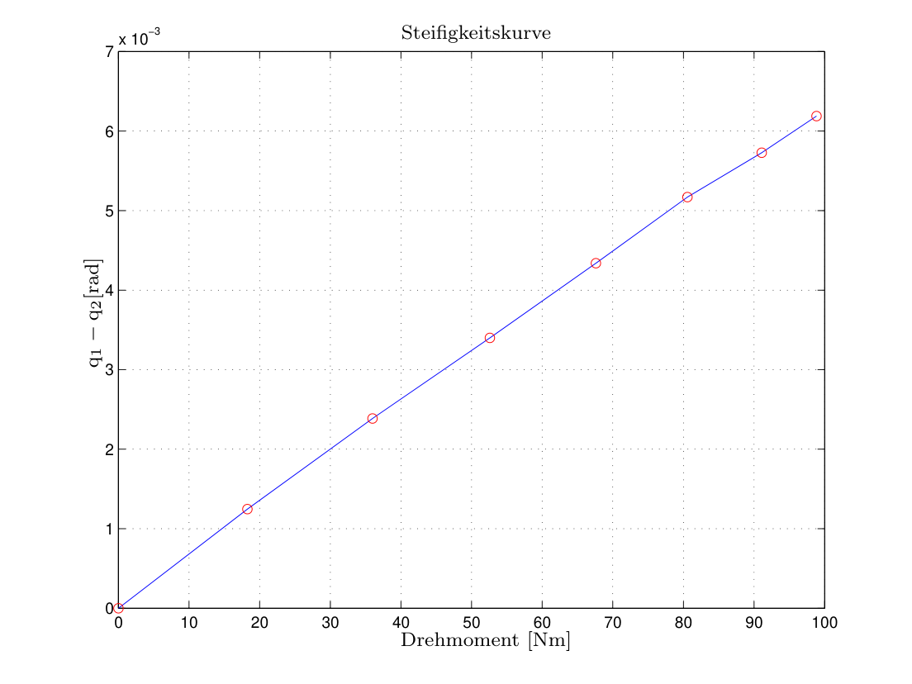
图 3.9: 基于不同负载下振动测量的刚度曲线
在 LBR2 中，除了电机位置 $q_1$ 的传感器外，还安装了输出侧位置传感器（图3.6）。位置差 $q_1 - q_2$ 对应于弹簧 $F_1, F_2$ 的扭转，即来自齿轮和力矩传感器的弹性。因此，直接从关系 (3.10) 确定弹性是显而易见的，因为所有信号都是可用的。这样做的优点是刚度确定也可以在组装好的机器人上进行（可能在线进行）。图3.10显示了这样的刚度曲线。如果用两条直线近似非线性的刚度曲线，会发现测得的刚度比从振动测量确定的刚度高出2到4倍。这导致结论：结构弹性 ($F_4, F_5$) 不能被完全忽略。因此，基于振动测量对单个关节进行刚度和阻尼辨识似乎是最合适的方法。
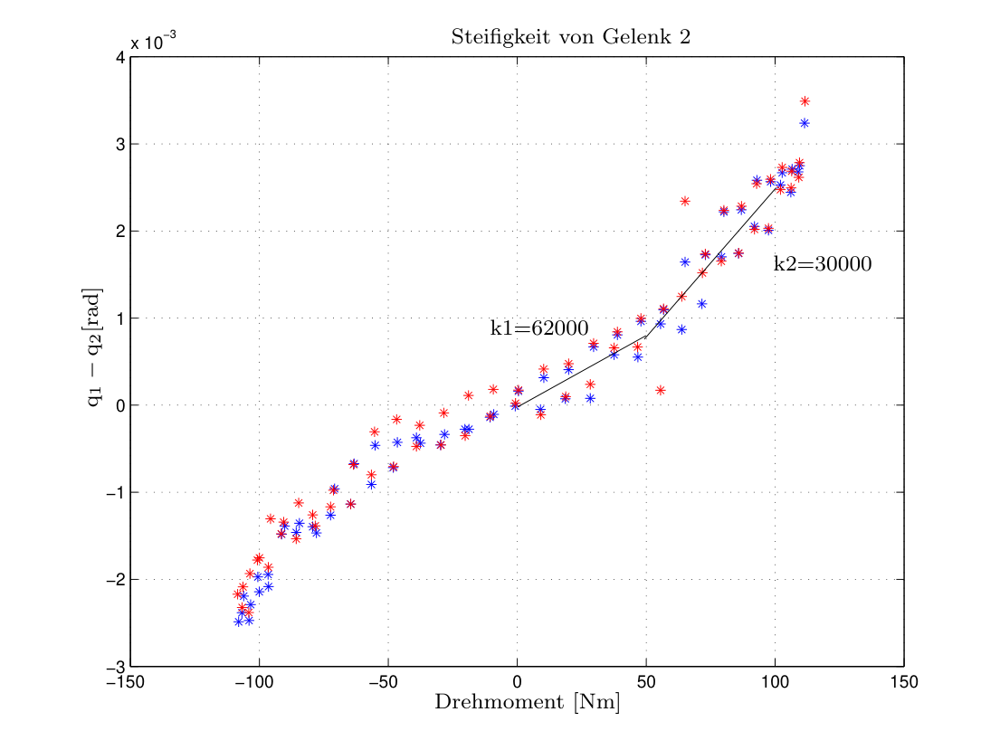
图 3.10: 基于测量的电机和输出位置以及测量的关节力矩的刚度曲线
3.3.2 摩擦参数的辨识
与 LBR1 相反，斯特里贝克摩擦（第2.3节）在 LBR2 的谐波传动齿轮中不起主要作用，因此可以很好地近似忽略。对非常低的速度（低至0.1°/s）的测量未能证实斯特里贝克效应的出现。对于 LBR2，库仑摩擦的二次负载依赖性也可以忽略。因此，对于运动关节 ($|\dot{q}_1| > \epsilon$) 的情况，从 (2.29) 得出以下模型方程：
对于辨识，可以使用指令目标电流 $I_s$、测量的电机位置 $q_1$ 以及通过微分得到的电机速度 $\dot{q}_1$，以及测量的关节力矩。
由于以下原因，指令电机电流与电机力矩之间的关系不能从数据表中得知，而应通过测量来辨识：
- 与有刷电机（其中固定的、机械确定的换向角决定了电流和力矩之间的关系）不同，对于磁场定向控制的永磁电机，这个比率取决于模拟霍尔信号的质量和校准。
- 对于辨识，只有目标电流可用，而不是实际电流。
根据第2.4节的考虑，我们假设目标电流与电机力矩之间存在一个具有常数 $k_m$ 的比例关系。
因此，电机电流的估计值 $\hat{I}_s$ 的表达式为：
如果选择参数向量 $p$ 为
则 (3.19) 可以写成：
其中向量 $Y_F$ 仅由测量量组成。因此，对于所有 $N$ 个测量点，最小化误差
是一个线性优化问题，因此在仔细选择测量轨迹的情况下，可以实现快速可靠的参数辨识。
现在考虑选择哪些轨迹进行辨识，以便激励所有参数，从而可以相互独立地辨识。首先，很明显，为了确定 $d_1$ 和 $\tau_C$，应覆盖尽可能大的速度范围；为了辨识 $\mu$，应覆盖尽可能大的力矩范围。因此，单独辨识 $\tau_F$ 中的摩擦参数不是问题。如果还想同时确定参数 $k_m$，则注意到，对于每个给定的预负载，以正负速度运动关节就足够了。由此，从 (3.19) 得到两种情况下的电流：
该方程组有唯一解，因此可以唯一确定 $k_m$ 和 $|\tau_F|$。因此，沿着包含这些点的轨迹，$k_m$ 和 $|\tau_F|$ 分别被激励并可唯一辨识。
满足所有这些考虑且易于用图3.5中的测试台实现的一条轨迹，是围绕垂直方向以恒定速度进行的摆运动，角振幅约为90°。在此过程中，关节通过自重逐渐加载。每次通过零点时，速度增量增加。图3.11a显示了辨识轨迹的过程。一个 Matlab 优化脚本将轨迹分割成恒定速度的段，在每个这样的段中选择相同数量的采样点（图3.11 b,c,d），并对这些数据进行辨识。
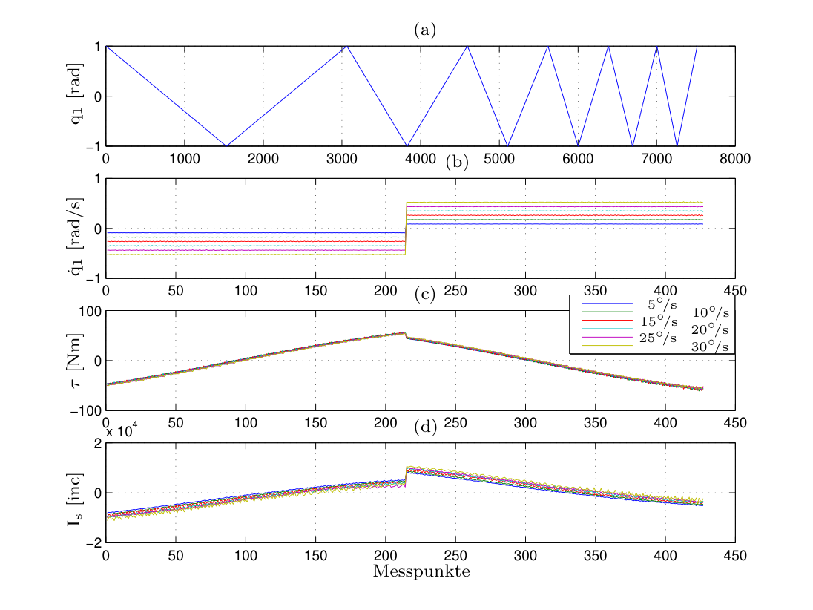
图 3.11: (a) 辨识轨迹 (b,c,d) 用于优化的处理数据
这种摩擦参数辨识方法，除第一轴外，也可以在组装好的带负载机器人上应用，因为机器人可以配置为使得轴2到7受到自重负载。不需要刚体模型，因为所有需要的量都由传感器直接捕获。为了辨识第一轴，机器人可以例如侧向安装在墙上。在机器人上进行快速简便的摩擦辨识很重要，因为这些参数随时间变化最大。
表 3.3: LBR2, 关节2的电机侧摩擦参数
| 参数 | 使用预辨识的 $k_m$ | 使用优化的 $k_m$ |
|---|---|---|
| $k_m$ [inc/Nm] | 134.26 | 134.74 |
| $\tau_C$ [Nm] | 9.7 | 9.64 |
| $\mu$ [-] | 0.088 | 0.089 |
| $d_1$ [Nms/rad] | 31.52 | 31.39 |
参数 $k_m$ 的确定不仅对摩擦建模很重要，而且对整个控制器设计也很重要。因此，额外在一些轴上使用电机测试台进行了实验，以单独确定该参数。可以通过进行第二次参数优化来检查摩擦辨识的质量，其中 $k_m$ 被视为已知，仅辨识 $\tau_c, \mu$ 和 $d_1$。如果两者结果吻合良好，如第二轴测量的情况（表3.3），则可以认为优化结果很好地近似了真实的物理值。
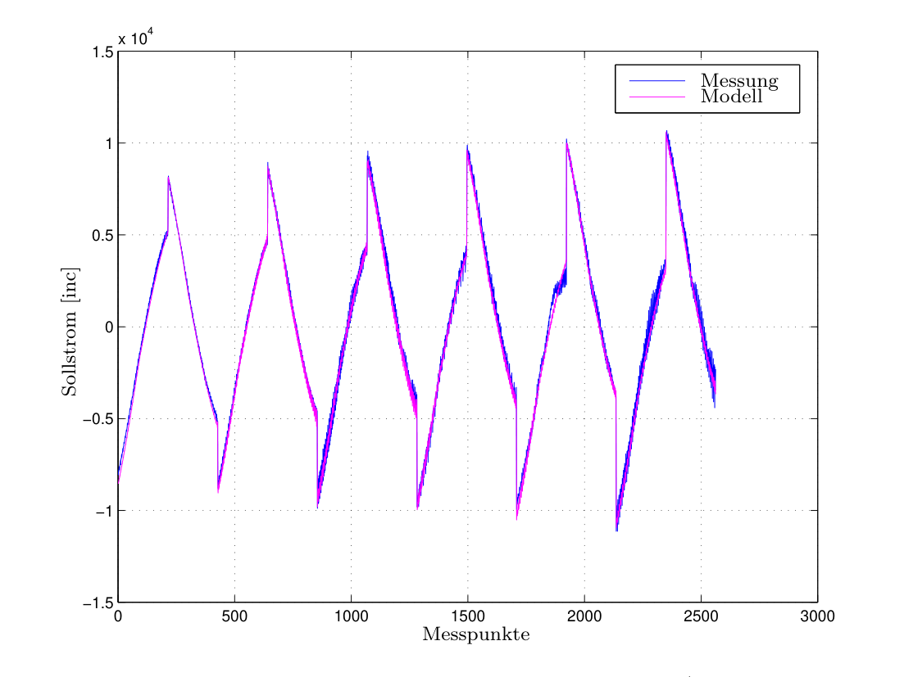
图 3.12: 辨识电机常数 $k_m$ 和摩擦参数后的实际目标电流 $I_s$ 和估计电流 $\hat{I}_s$
图3.12显示了机器人上对于图3.11a中轨迹的目标电流。可以看到方向改变时的电流跳跃和摩擦的速度依赖性。叠加显示了参数辨识结果给出的电流估计。
相同的摩擦模型可用于辨识输出侧摩擦，该摩擦迄今为止在模型中被忽略，并出现在力矩传感器之后的轴承中。在这种情况下，(3.19) 变为
其中模型输出量是力矩传感器中的力矩，力矩 $\tau_{\text{mod}}$ 作为位置的函数并使用已知的刚体模型计算。从表3.4的结果可以看出，输出侧
表 3.4: LBR2, 关节2的输出侧摩擦参数
| 参数 | 值 |
|---|---|
| $\tau_{C,ab}$ [Nm] | 0.58 |
| $\mu_{ab}$ [-] | 0.0067 |
| $d_2$ [Nms/rad] | 0.235 |
摩擦比电机侧摩擦小一到两个数量级，这证实了将其忽略的合理性。
3.3.3 关节仿真
在前面的章节中，确定了关节弹性和阻尼，以及电机常数和摩擦参数。如前所述，关节的刚体参数可以从 CAD 数据中高精度地获知。为完整起见，这些值也在表3.5中为 LBR2 的第二轴给出。因此，所有必要的参数都已具备，可以仿真单个关节。
表 3.5: LBR2 第二轴的刚体参数
| 参数 | 值 |
|---|---|
| 电机惯性 $J_m$ [kg m²] | 4.447 |
| 输出侧惯性 $J_a$ [kg m²] | 10.277 |
| 输出侧质量 $m_a$ [kg] | 14.33 |
| 输出侧质心 $l_g$ [m] | 0.7488 |
仿真使用不同的控制器在前面章节提到的轨迹上进行。这使得能够研究关节速度阶跃响应。图3.13和图3.14分别显示了 LBR2 和 LBR1 第二轴的测量与仿真对比。记录了模型输入（电机电流）、电机位置和速度，以及来自力矩传感器的输出侧力矩。后者提供了受关节弹性影响的输出侧行为信息。在所展示的情况下，研究了具有良好阻尼性能的控制器。仿真的质量允许在仿真中开发和可靠地测试控制器。
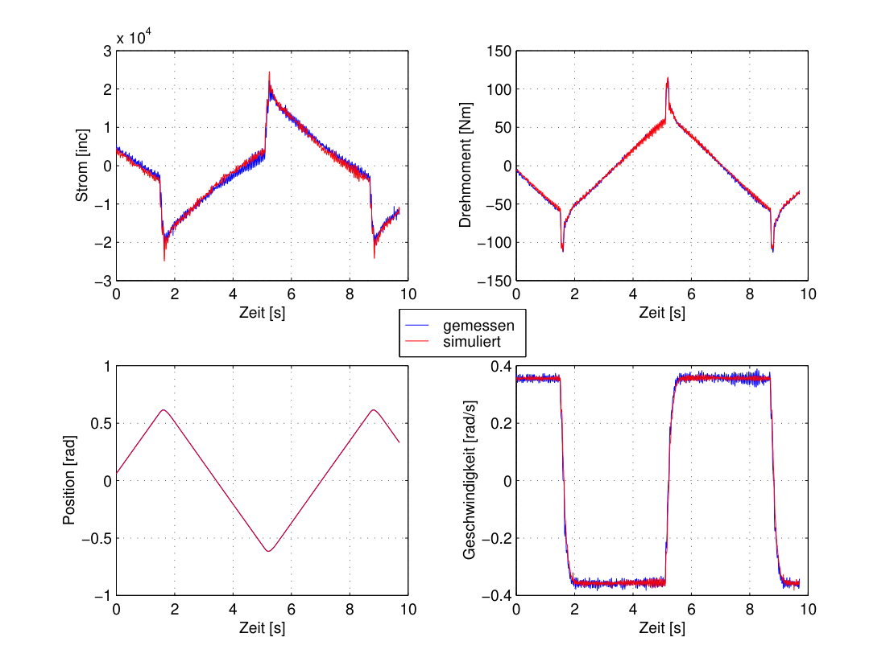
图 3.13: LBR2 第二轴的辨识结果
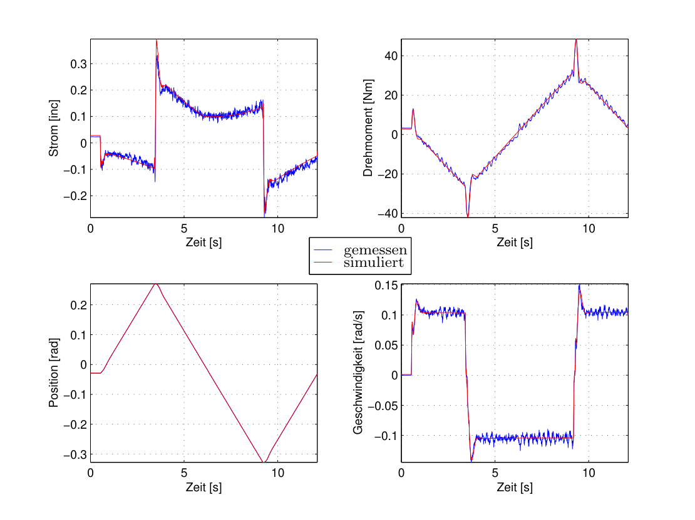
图 3.14: LBR1 第二轴的辨识结果
3.4 刚体参数的辨识
3.4.1 LBR1 的辨识
在表3.1列出的刚体模型参数中，运动学参数通常可以从设计数据中高精度地获知。对于 LBR1，其设计使用 2D CAD 系统完成，动态参数的估计不准确。所采用的辨识质量和重心的方法如图3.15所示。它包括在整个机器人工作空间中记录重力向量的测量值 [34], [50]。为此，机器人在位置控制下重新配置，并对单个姿态记录位置和力矩指令值 $q_1, \tau_m$。研究了两种建立重力模型的方法：
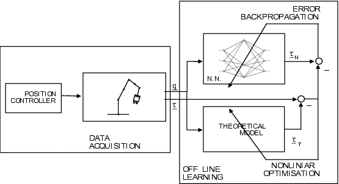
图 3.15: LBR1 重力向量的优化过程
基于解析机器人模型 $g(q)$，进行非线性优化以最小化误差
（$N$ 为测量点数）。$l_g$（7×1）和 $m$（7×1）是连杆重心和质量的向量。
为每个关节训练一个前馈神经网络，函数为 $\tau_{m,i}(q_1)$。
这两种方法也被结合使用，利用神经网络仅学习未建模效应（如力矩传感器对横向负载的敏感性）引起的残余误差。
总结这些实验可以得出以下结论：
- 使用所介绍的方法，可以建立一个良好的重力模型，其平均逼近误差低于10%。这样就能实现有效的重力补偿。
- 两种方法都基于非线性优化，具有局部最小值和优化时间长的缺点。
- 由于神经网络不具备系统的先验知识，输入变量的整个状态空间必须均匀地覆盖测量点，这导致测量时间长。因此，该方法对于惯性参数的辨识（还需要覆盖机器人速度和加速度空间）只能以很大的时间开销进行转移。
作为所介绍的基于非线性优化的方法的替代方案，可以利用这样一个事实，即刚体动力学可以通过适当选择参数和变换方程简化为线性优化问题 [95], [65], [64], [27], [108]：
其中回归量 $Y$ 是一个非线性矩阵，仅依赖于测量值，$p$ 是相互独立可辨识的动态参数向量。这种方法存在两个问题：对动力学方程进行相应变换以确定回归量，以及确定满足持续激励标准的轨迹以获得一个良态的优化问题。因此，这种方法也非常耗时，以至于单独的辨识就可以填满一篇博士论文 [37], [115]。
3.4.2 LBR2 的刚体模型
如今的 3D CAD 系统提供了一个受欢迎的出路，利用它们可以高精度地确定动态参数。这些系统允许自动计算物体体积，并通过分配相应的密度来生成相对于任意坐标系的质量、重心和质量惯性。当然，在这种情况下，所有组件（包括电路板、电缆等）的精确建模至关重要。但对于 LBR2，设计工程师通过这种方式生成了机器人数据，其与实际值的典型偏差平均低于5%。
表3.6包含了具有不同复杂度的某些部件的质量样本。
表 3.6: 单个组件质量估计的模型误差
| 名称 | 复杂度 | CAD 质量 [g] | 实际质量 [g] | 误差 [%] |
|---|---|---|---|---|
| 关节1电机轴 | 中等 | 271.04 | 287.0 | 5.6 |
| 关节2叉形结构 | 中等 | 361.1 | 378.4 | 4.8 |
| 完整关节2 | 高 | 3338.3 | 3395.0 | 1.7 |
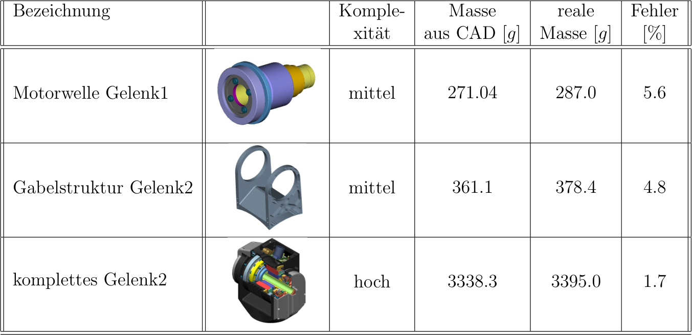
第3.6节的辨识结果也提供了测量力矩值与模型之间的比较。表3.7总结了前六个关节输出侧力矩的相对误差 $e$ 的平均值 $e_m$ 和标准差 $\sigma$。
表 3.7: LBR2 刚体模型的建模误差
| 关节 | 1 | 2 | 3 | 4 | 5 | 6 |
|---|---|---|---|---|---|---|
| $e_m$ | -0.0052 | 0.0036 | 0.0004 | -0.0031 | -0.0003 | 0.0003 |
| $\sigma$ | 0.0094 | 0.0192 | 0.0147 | 0.0084 | 0.0025 | 0.0029 |
其中 $N$ 是轨迹上的测量点数，$\tau$ 是测量值，$\hat{\tau}$ 是估计值，$\tau_{\max}$ 是每个关节的最大力矩。
图3.16示例性地显示了第一轴力矩估计的相对误差直方图。
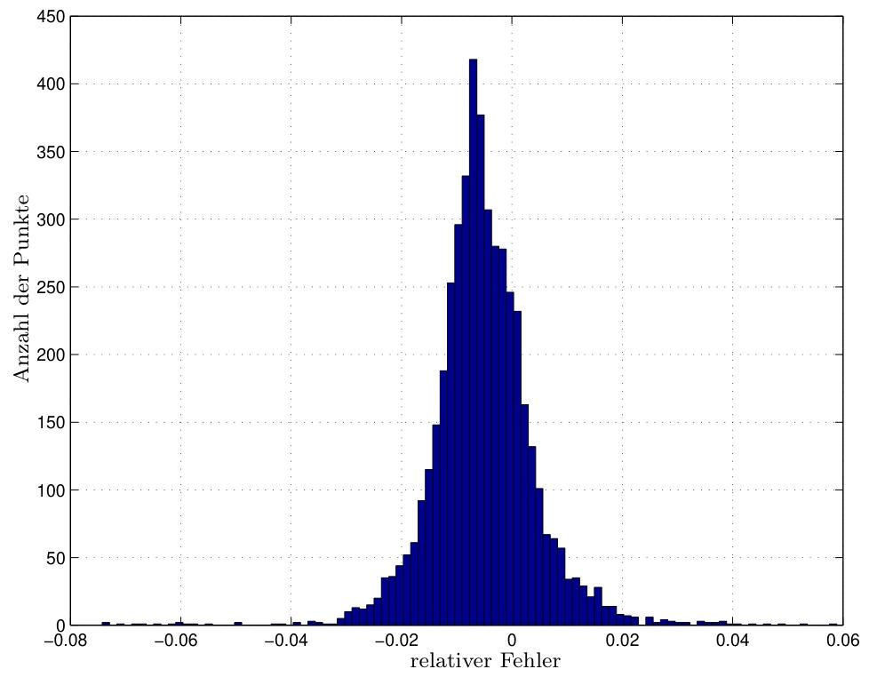
图 3.16: LBR2 第一轴力矩相对模型误差的直方图
3.5 仿真工具
用于机器人建模、辨识和仿真的工具总结在表3.8中。对于某些任务，例如刚体模型或整个机器人的建模，为了灵活性和速度以及相互验证，研究了不同的替代方案。对于非本工作范围内或未完全完成的组件，将引用相应的参考文献。
表 3.8: 建模工具
| 工具 | 用途 |
|---|---|
| Maple → C 代码 | 使用牛顿-欧拉方法计算刚性机器人动力学（显式提供惯性矩阵、科里奥利和离心力以及重力向量）、正运动学和雅可比矩阵、基于关节力矩的负载估计和补偿 |
| Matlab-Simulink | 参数辨识（优化工具）、模块化关节模型、整个机器人仿真、控制器设计和仿真 |
| Irix Performer | 机器人运动动画 [85]，带与 Simulink 模型的接口 |
| Modelica | 整个机器人的替代仿真模型 [6] |
| C++ | 使用拉格朗日形式主义的机器人动力学 [73] |
3.6 整体机器人的仿真结果
本章最后，展示了整个机器人辨识和仿真的结果。
进行测试的轨迹由点到点运动组成，每个运动以恒定速度执行。机器人从工作空间中间的一个位置移动到一些极限位置，以便尽可能有意义地覆盖工作空间。各轴的速度计算方式使得所有轴同时开始和结束运动，最快轴的速度为40°/s。在转折点，所有轴的速度发生阶跃变化。这对机器人的应力高于梯形速度曲线下典型操作中的应力。在此过程中，刚体动力学和关节弹性被强烈激励，从而可以检查系统在速度阶跃下的行为。
测量以笛卡尔机器人控制的周期进行。仿真使用 Simulink 模型进行，其中刚体动力学使用与真实机器人实时计算机上用于控制的相同 C 例程计算。测量了目标电流、关节力矩和电机位置，并从中推导出电机速度。图3.17和图3.18显示了整个轨迹上的测量值，从中可以判断低频模型分量的质量。为了显示瞬态响应，从这些图中提取了转折点附近的测量值，如图3.19和图3.20所示。图3.21显示了仿真和真实机器人控制中的笛卡尔位置。
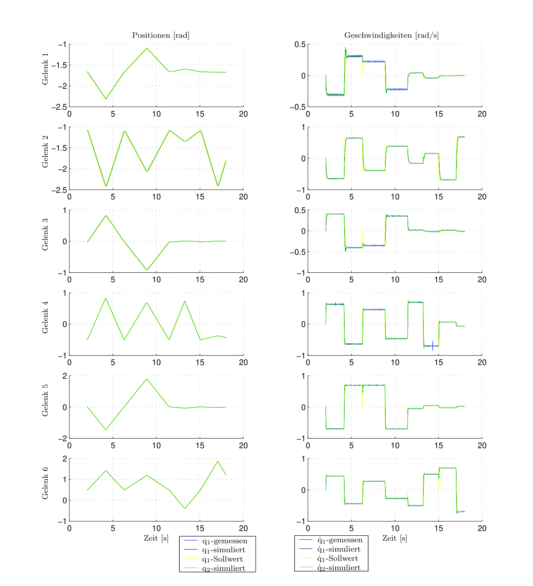
图 3.17: 点到点运动中测量与仿真的比较 第1部分：位置和速度
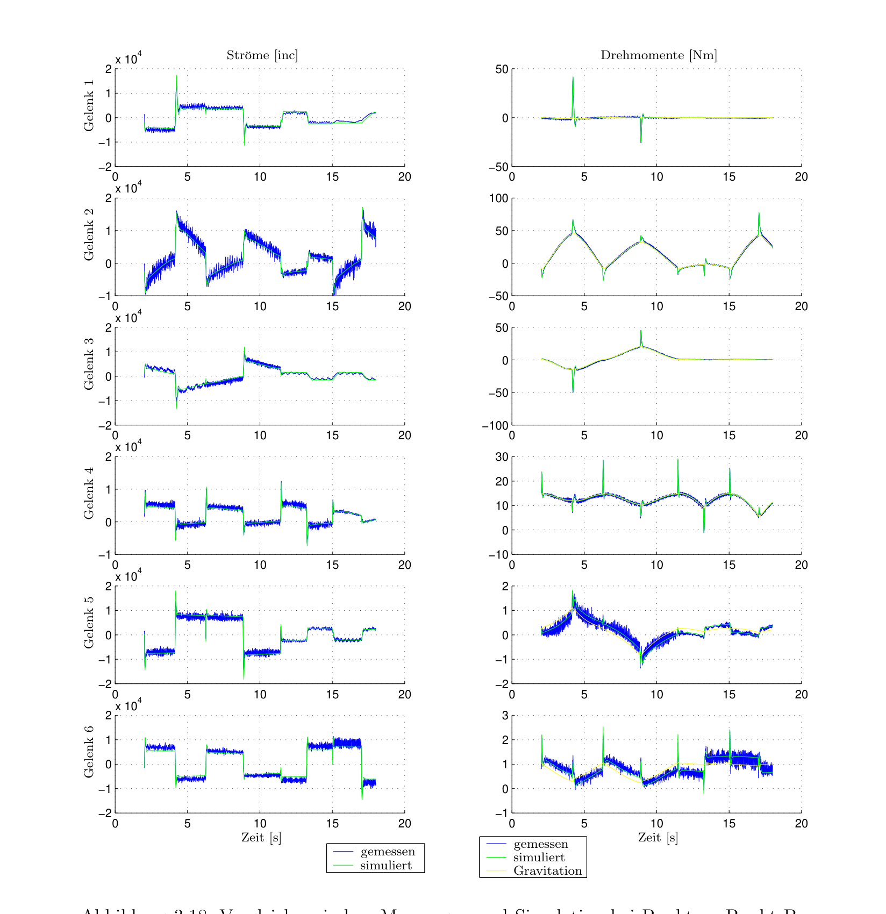
图 3.18: 点到点运动中测量与仿真的比较 第2部分：电流和力矩
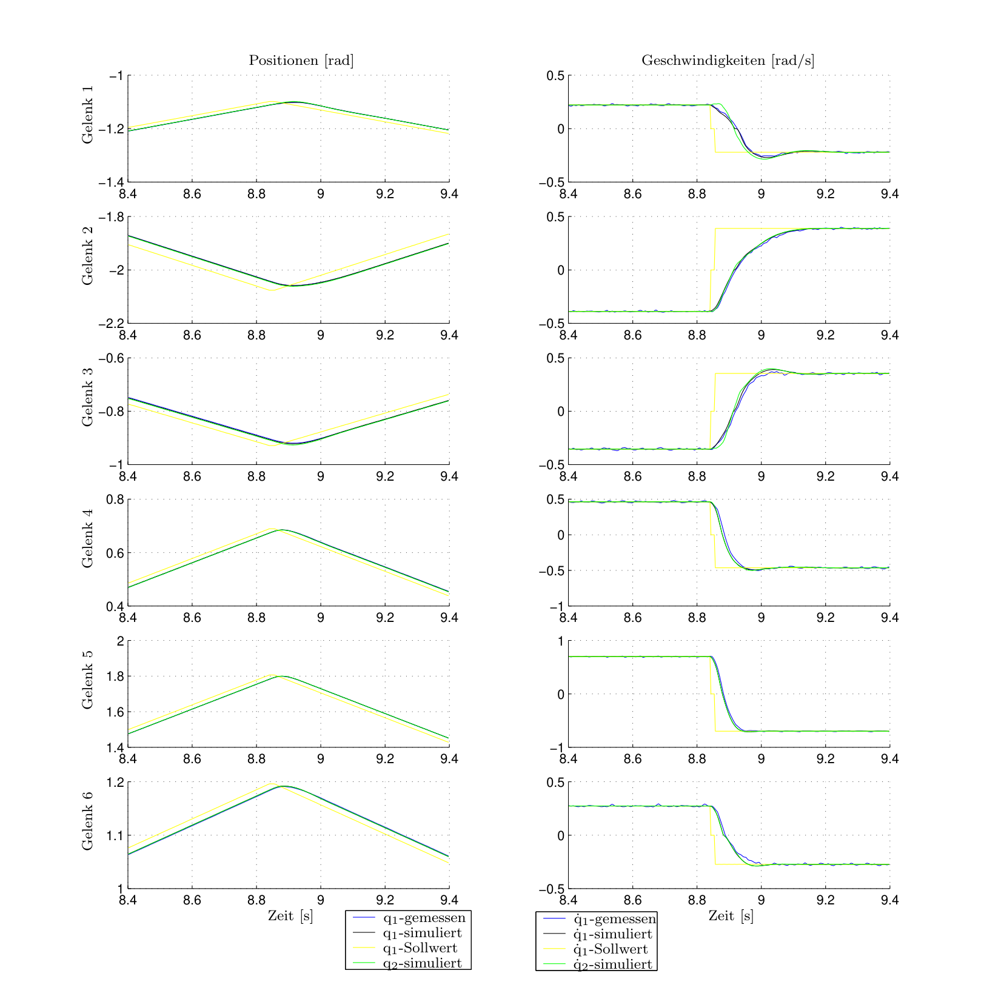
图 3.19: 速度阶跃时测量与仿真的比较 第1部分：位置和速度（图3.17的高分辨率细节）
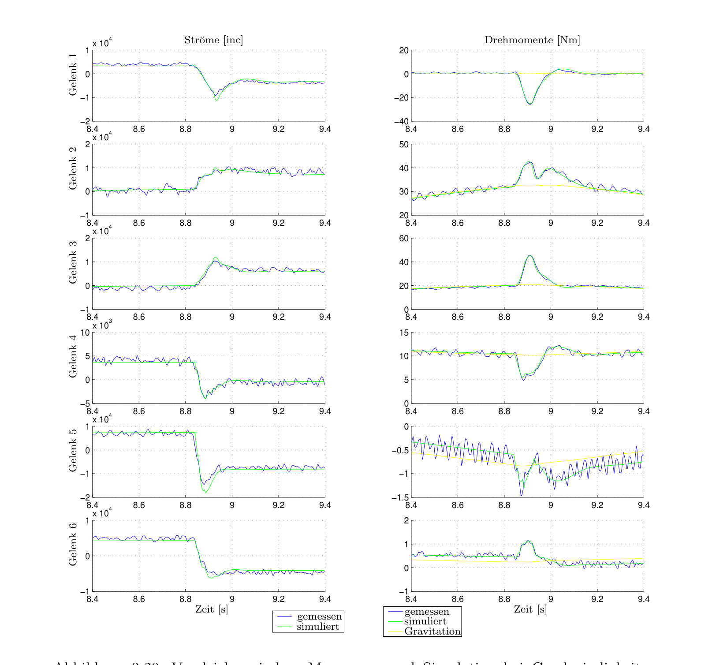
图 3.20: 速度阶跃时测量与仿真的比较 第2部分：电流和力矩（图3.18的高分辨率细节）
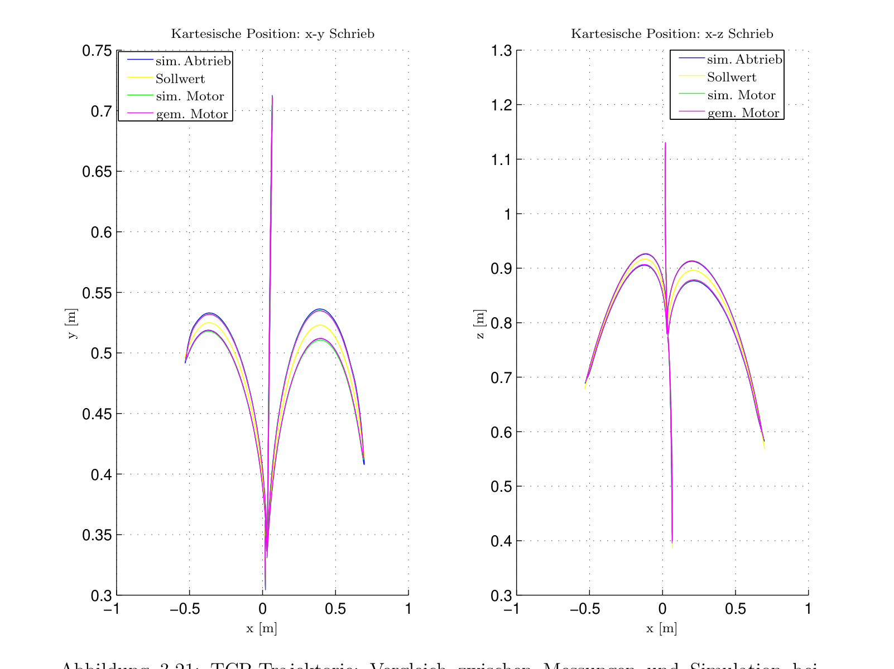
图 3.21: TCP 轨迹：点到点运动中测量与仿真的比较
4. 弹性关节机器人的控制结构
在过去15年中，关于弹性关节机器人控制的一些非常有价值的理论成果得以发表。对该领域的兴趣源于两个不同的原因。一方面，在工业机器人的高速实际应用中，尽管驱动器严重超规格，但弹性仍起着重要作用，因此人们尝试通过控制手段来抑制关节振动。所使用的控制器必须非常简单、鲁棒，并且无需额外的传感器。因此，通常采用驱动技术（弹性单驱动器）的结果。但这些控制器在面对高度非线性的机器人动力学时的表现问题在理论上仍未解决。实验结果通常显示出振动性能的部分改善，但这些控制器扩展迄今尚未在工业机器人中得到固定应用。
弹性关节机器人的控制也引起了理论控制领域研究人员的关注。原因是系统的自由度数量是执行器的两倍，并且在控制输入作用点和非线性刚体动力学之间存在额外的动态，因此非线性补偿并不简单（与刚性机器人模型的情况不同）。因此，该模型成为了测试新控制方法（例如状态线性化、反步法或基于无源性的自适应控制）的有意义应用实例。这些方法产生了完整的理论解决方案，但由于其复杂性，迄今仅在小型实验系统（一或两个自由度）上实现。
本章介绍了弹性关节机器人最重要的控制概念。同时，也将提及我们所知的实现结果。这些方法按复杂程度递增的顺序呈现。
4.1 技术现状
4.1.1 PID (PD) 控制
大多数工业机器人中至今仍采用的控制结构是级联控制器，内环为 PI（或 P）速度控制器，外环为 P 位置控制器（图4.1）。除了级联结构的优点和各模块不同的采样时间外，该控制器在概念上可以等同于 PID（PD）位置控制器。
这是机器人最简单可能的控制器结构。其中使用电机侧位置进行控制，因为使用输出侧位置检测的 PD 控制器在接近关节固有频率时会变得不稳定 [87]。
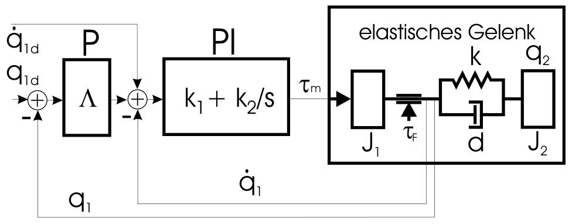
图 4.1: 工业机器人控制的带速度前馈的级联控制器
PD 控制器用于刚性机器人控制的理论基础在 [110] 中被广泛引用。然而，为了保证全局渐近稳定性，控制器必须扩展一个重力补偿前馈。在没有重力补偿的情况下，控制器仍然是稳定的，但必须接受持续的位置偏差。对于 PID 控制器的稳定性只能做出局部结论 [8]。
一个高度非线性的机器人系统能够被一个简单的 PD 控制器镇定，这乍一看令人惊讶。稳定性证明利用了机器人作为多体系统的一个基本性质，即它是一个无源系统。与同样可以表示为无源系统（类似于弹簧-阻尼器）的 PD 控制器级联，结果是一个无源且因此稳定的系统（关于超稳定系统，参见第75页或 [75]）。
[112] 将稳定性证明扩展到了弹性关节机器人。然而，对于弹性关节，PD 控制器只能提供不令人满意的结果。实际上，只要控制器的带宽未明显低于系统的固有频率，机器人就会执行强烈欠阻尼的振动。这并不奇怪，因为关节弹性完全没有被考虑，并且显然一个二阶控制器对于系统阶数为4的关节是不够的。对于 DLR 轻型机器人，其最低固有频率低于10 Hz，PD 控制器是不可用的。
4.1.2 带振动阻尼的 PD 控制
由于 PD 控制器即使在非常高速运动（会激发结构弹性）的工业机器人中也无法令人满意地工作，因此人们寻找尽可能简单的结构扩展来抑制关节振动。从驱动技术 [87] 中已知，仅反馈速度差 $\dot{q}_1 - \dot{q}_2$ 就能改善振动性能。在 [105] 中，基于测量的输出侧加速度和电机位置估计输出侧速度，并额外反馈到图4.1的级联结构中。在 [111] 中使用了类似的结构，其中输出侧速度仅从工业机器人常用的电机侧测量值估计。然而，在轨迹规划中考虑了整个弹性机器人的动力学。
DLR 轻型机器人具有明显的优势，即通过力矩传感器直接获得关于输出侧状态的信息。LBR1 上最早的振动抑制尝试之一，除了经典的级联结构外，还包括带通滤波力矩信号的反馈 [116]。即使这种简单的启发式控制方法也能显著抑制振动，并表明同时进行位置和力矩反馈可以获得良好的结果。
本节中提到的控制器方法都是实践驱动的，并基于线性控制理论的方法。因此，没有稳定性分析能够保证其在与机器人非线性相互作用下的稳定行为。也没有系统性的设计标准来考虑这些非线性。
4.1.3 关节层面的状态线性化
考虑一个带偏心负载的单弹性关节方程的最简形式：
其中 $m$ 是质量，$l$ 是重心位置，$J_2$ 是输出负载的惯性矩。除了加粗的项（由负载偏心引起）外，这是一个如驱动技术中已知的线性双质量系统。在线性情况下，当状态向量可测且被控对象参数已知时，问题可由状态控制器解决。将该状态控制器扩展到非线性系统即为（精确）状态线性化。关于状态线性化的基础，参见 [96]、[45]、[15] 或 [104]。对于一个具有状态向量 $x$ 和输入 $u$ 的非线性系统：
寻找新的状态向量 $y$ 和新的输入 $v$，以及相应的变换：
使得变换后的系统
是线性和可控的。对于系统 (4.2)，[66] 提出了状态线性化控制器（另见 [104]）。在此示例中，$x = \{q_2, \dot{q}_2, q_1, \dot{q}_1\}$ 且 $u = \tau_m$。如果考虑输出侧位置 $q_2$ 为系统输出，则也可以进行精确的输入-输出线性化且无内部动态 [96]，这与状态线性化等价。因此，通过对输出求导，无需微分几何工具即可轻松找到状态变换。新的状态向量为：
变换为：
由
得到
在新坐标系中，系统是线性的：
其中
因此，理论上可以给系统赋予任意期望的行为。立即注意到，该方法的主要问题在于需要测量输出侧位置直到其三阶导数，或者在假设精确的被控对象参数下从 (4.8) 观测。
不同作者扩展了该方法以控制更复杂的关节模型。在 [88] 中考虑了可变刚度，并扩展了一个用于摩擦的扰动观测器。对于 LBR1 的一个实验关节（在平面测试台上，无重力影响），[116] 实现了包含电机模型的关节状态线性化，并添加了变结构控制分量。这些结果总是仅适用于一个关节。由于未考虑整个机器人的非线性动力学，因此无法对整个系统的稳定性做出结论。
4.1.4 奇异摄动
概念上最简单的（在 PD 控制器之后）能够考虑机器人多体动力学并保证稳定性的控制器结构，基于“奇异摄动”理论 [20], [45], [100], [94]。
该理论为具有级联结构的控制器提供了基础。系统被分解为一个“快”子系统（对应内控制环）和一个“慢”子系统（对应外控制环）。对于快系统，外环的状态被视为准静态扰动，而在慢环中，内子系统的动态被忽略，其状态被视为已稳定。奇异摄动理论允许从简化子系统的稳定性分析中推断整个系统的稳定性。
为了保持计算的可处理性，在接下来的章节中，我们采用大多数理论文献中假设的模型简化版本 (2.26)：
通过从该系统中消去 $q_1$，得到以下表示：
其中
对于足够大的 $K$ 值，该系统是奇异摄动的。实际上，当 $K \to \infty$（即刚性关节）时，(4.17) 变为代数方程，系统 (4.16)、(4.17) 简化为刚体模型方程：
遵循奇异摄动的分离原理，选择
其中 $\tau_{ms}$ 为“慢”分量，$\tau_{mf}$ 为“快”分量。方程 (4.16) 对应于已知的刚性机器人动力学，但控制输入是关节弹簧力矩 $\tau$ 而非电机力矩 $\tau_m$。为了控制该系统，可以在外环中使用任何适用于刚性机器人的控制器结构，例如“计算力矩法”：
从 (4.17)，当 $K \to \infty$ 且 $\tau = \tau_d$（即快系统稳态）时，得到 $\tau_{ms}$：
这导致慢系统（降阶模型）(4.19) 的误差动态为：
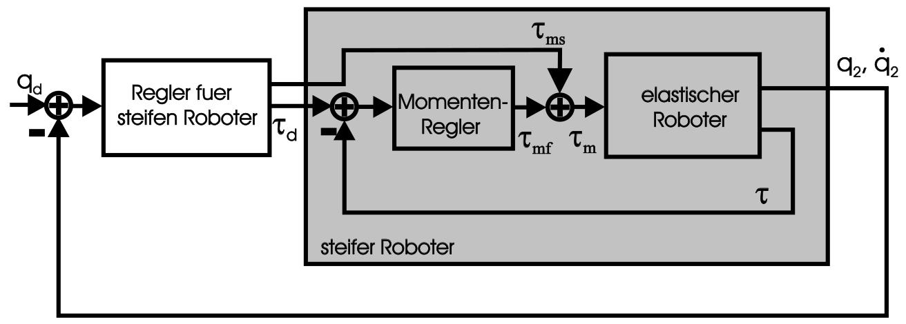
图 4.2: 弹性机器人控制的级联结构
选择 $\tau_{mf}$，例如形式为
则通过将 (4.22)、(4.25) 代入 (4.17)，得到
忽略 $\dot{\tau}_d$ 和 $\ddot{\tau}_d$，得到快子系统的“边界层”方程：
可以看出，力矩环的特征值比位置环快 $K$ 倍。因此，得到图4.2所示的控制器结构，具有一个快速的内力矩环（使系统对外表现为刚性机器人）和一个较慢的外环经典位置控制。然后通过奇异摄动论证，对于足够大的刚度 $K$，整个系统 (4.24)、(4.27) 是稳定的。值得注意的是，这里只使用了状态 $\{q_2, \dot{q}_2, \tau, \dot{\tau}\}$ 而不需要位置的高阶导数。
该方法在 LBR1 的控制实验初期看起来非常有前景，因此工作长期集中在级联控制的实现上 [92]。其中，主要研究了不同的力矩控制方法，以通过例如变结构（滑模）控制器来提高鲁棒性。但主要困难仍然在于实现所需带宽的力矩控制。由于未建模的动态（例如结构的高频振动（图3.1）、传动装置的传动误差等），最大带宽仅为 20–30 Hz。在 LBR2 第二轴的实验中也得到了类似的值。对于仅使用力矩控制器的应用，例如在重力补偿机器人上示教轨迹，这个带宽是足够的。然而，这导致外环位置控制器的带宽太低，因此必须寻找其他解决方案。
4.1.5 整体机器人的状态线性化
另一种方法，考虑了完整的机器人动力学，不需要中等弹性的假设，并避免了级联结构，是整体机器人的状态线性化。这是第4.1.3节中讨论的方法的进一步发展，首次在 [100] 中提出。
再次考虑无阻尼模型 (4.13)–(4.15)。类似于第4.1.3节，测量和变换后的状态向量为
但这次每个元素都是一个 $N \times 1$ 向量。对于轻型机器人，总共有 $\dim(y) = 28$。状态变换 $y = T(x)$ 通过对输出侧位置求导并代入 (4.13)–(4.15) 中的二阶导数 $\ddot{q}_1, \ddot{q}_2$ 得到：
其中 $f_4(x_1, x_2, x_3)$ 表示所有不包含 $x_4$ 的项。期望的变换后系统输入由
得到。通过对 (4.33) 求导，得到
其中 $F(x_1, x_2, x_3, x_4)$ 汇总了所有不包含输入 $\tau_m$ 的项。因此，控制输入的关系为
利用非线性坐标变换 (4.30)–(4.33) 和控制器 (4.37)，系统变为一个线性对角系统：
其中 $I$ 是 $N \times N$ 单位矩阵，$0$ 是 $N \times N$ 零矩阵。这个阶数为28的系统可以用状态控制器进行调节。
该方法为弹性关节机器人的完全控制提供了一条非常优雅的途径。然而，在实际实现中会出现相当大的问题，这里简要列举如下：
控制需要完整的状态 $y$，其中包括输出侧位置直到三阶导数。这在实践中无法用给定的传感器实现。或者，可以从可测状态 $x$ 通过 (4.30)–(4.33) 观测 $y$，但这需要非常精确的被控对象参数。此外，计算量，尤其是 $y_4$ 和 $\tau_m$，极其庞大。对 $M(x_1)^{-1}$ 或 $N(x_1, x_2)$ 进行符号求导远远超出了可用计算能力，而数值微分由于后续在 (4.37) 中再次求导会过度放大测量噪声。因此，实际上只有该控制器的一个显著简化版本才可行（另见第6.1节）。
对于获得的28阶多变量系统，很难进行在整个工作空间中对模型不确定性鲁棒且不违反其他约束（如输入限制）的有意义的极点配置。
无论机器人姿态如何，系统总是具有相同的特征值。因此，在大质量惯性的姿态下，它比在手臂未伸展的位置需要明显更多的能量。为避免输入饱和，这导致保守的控制器设计，在工作空间的大部分区域是次优的。
4.1.6 基于无源性的控制
基于无源性的控制器消除了状态线性化的最后两个缺点。该方法可追溯到 [95]，其中它被用于刚性机器人的自适应控制。针对弹性关节机器人的扩展在 [54], [14] 中提出。这里从模型表示 (4.16)、(4.17) 出发，即分为力矩动态和刚性机器人动态。因此，(4.16) 的控制器可以像刚性机器人情况一样设计。定义一个虚拟的“期望速度”
这里也称为“速度接口”机器人。实际上，$v_2$ 不仅包含真实的期望速度 $\dot{q}_d$，还包含依赖于位置误差的分量。相应地，得到以下虚拟“速度误差”（也称为“跟踪误差”）：
它实际上是位置和速度误差的线性组合。如果关节力矩被控制到期望值
则受控子系统的误差动态为：
为了控制力矩动态（使 $e_\tau$ 趋于零），可以使用例如以下控制器：
其中 $e_\tau = \tau_d - \tau$，这导致解耦的误差动态：
为了证明整个系统的稳定性，使用了三角结构系统的稳定性理论，例如在 [90], [51], [71], [57] 中发展（第6.9节）。与奇异摄动方法不同，这里 (4.42) 和 (4.44) 的特征值可以具有相同的量级。也不依赖于刚度的限制。
导致控制器 (4.41) 的思考如下：方程 (4.16) 在补偿或忽略重力向量（对应于失重状态下的刚性机器人）时，表示输入 $\tau$ 和速度 $\dot{q}_2$ 之间的一个无源映射 [9]。机器人的能量为
这将在第5.4节中详细讨论。如果控制器是一个简单的阻尼元件，例如 $\tau_m = K_D(\dot{q}_{2d} - \dot{q}_2)$，则系统也是耗散的，并且利用李雅普诺夫函数 (4.45) 可以证明速度误差收敛到零。为了强制位置误差也具有这种收敛性，控制器 (4.41) 被选择使得整个系统的“能量”为
实际上，可以验证，使用控制器 (4.41)，$V_1$ 是受控系统的李雅普诺夫函数，因为 $\dot{V}_1 = -s^T K_D s$。因此，这种设计方法也被称为能量整形法。
从 (4.42) 可以看出，受控系统不再像状态线性化那样是线性的。如果将该方程在某个工作点线性化（另见第6.8节），则特征值显然依赖于当前的机器人惯性。因此，可以消除状态线性化的后两个缺点。但第一个反对意见仍然存在。为了实现力矩控制器，必须对 $\tau_d$ 进行两次微分，这又需要测量或观测输出侧位置的前三阶导数。
4.1.7 反步法
该方法的优点在于它提供了一种利用李雅普诺夫理论系统地推导控制器的方法，并允许扩展到自适应控制。从实现问题和预期的控制性能来看，该方法似乎与最后两种方法相比没有优势。因此，这里不再进一步讨论，而是参考例如 [45], [14], [68], [43]。
4.1.8 自适应控制
所有先前的控制结构都假设已知的模型参数。正如第3章所示，对于 DLR 轻型机器人，这个假设在很大程度上是成立的。尽管如此，在某些情况下（例如可变未知负载），使用自适应控制器似乎是合理的。基于无源性的控制器允许一种特别优雅的自适应变体。它基于第3.4节中提到的机器人动力学的线性参数化，并设计一个保持系统无源性特性的参数自适应律 [68], [54], [14], [103], [119]。由于自适应控制超出了本工作的范围，因此也不再进一步讨论。
4.2 DLR 轻型机器人的控制器结构
考察弹性关节机器人控制的技术现状，可以清楚地看到实践驱动的工作和理论提出的控制方法之间的两极分化。前者通常未能充分考虑被控对象的非线性结构，因此无法从理论上进行稳定性分析。这导致在具有六或七个自由度的强弹性机器人上效果有限。另一方面，存在完整的理论解决方案，但由于前述原因，实际无法实现。
本工作的一个重要目标是弥合这一差距。这里遵循的控制概念从一个简单、易于实际实现的控制结构出发，但同时可以进行理论分析，并能在考虑被控对象完整非线性的情况下推导稳定性条件。然后逐步扩展控制器结构，以便在更大程度上解耦已知的机器人动力学。将建立与状态线性化控制器或基于无源性的控制器的联系，并突出差异。
这种渐进式方法具有以下优点：控制器设计过程保持可管理和可处理，并且可以实际评估不同控制器组件的贡献和重要性，并与其实现成本进行权衡。
描述单个关节动态的方程可以分为一个准线性部分和一个用粗体标记的非线性部分：
值得注意的是，惯性矩阵的对角元素 $m_{ii}$ 不依赖于关节 $i$ 本身的位置，而仅依赖于后续关节的位置。
所提出的控制器概念结构如下：
(1) PD 控制器是一个非常简单且鲁棒的控制结构，至今仍在大多数工业机器人中使用。原因在于其简单性带来的可靠性和低实现成本。对于弹性关节机器人的情况，其自然扩展是一个四阶状态控制器，该控制器针对 (4.47) 中的线性部分设计，忽略非线性项。接下来，可以添加两个非线性项来补偿重力和摩擦。这导致以下控制律：
$K_P, K_D, K_S, K_T$ 是维度为 $N \times N$ 的对角增益矩阵。$q_{2d}$（$N \times 1$）是输出侧期望轨迹，$\tilde{q}_1 = q_{1d} - q_1$ 是电机侧位置误差。
控制器 (4.48) 是我们认为对于弹性关节机器人而言，同时在实践上高效且在理论上完全合理的最简单结构之一。
(2) 为了考虑可变质量惯性 $m_{ii}$ 或实现可变关节刚度和阻尼，在下一步中在线改变增益矩阵，从而得到一个具有可变参数的控制器结构。该控制器允许在可管理的结构中有效实现一些已知理论方法（例如状态线性化）的简化版本。
(3) 最后，提出一个基于无源性的理论控制器，它为弹性情况以及向刚性机器人模型的过渡提供了统一的解决方案，从而能够实际实现第4.1.6节中的概念。简化形式下，该方法也可以作为可变参数控制器实现。
图4.3展示了所提出的可变参数控制器结构。第5章涉及控制器 (1)，而第6章介绍控制器结构 (2) 和 (3)。
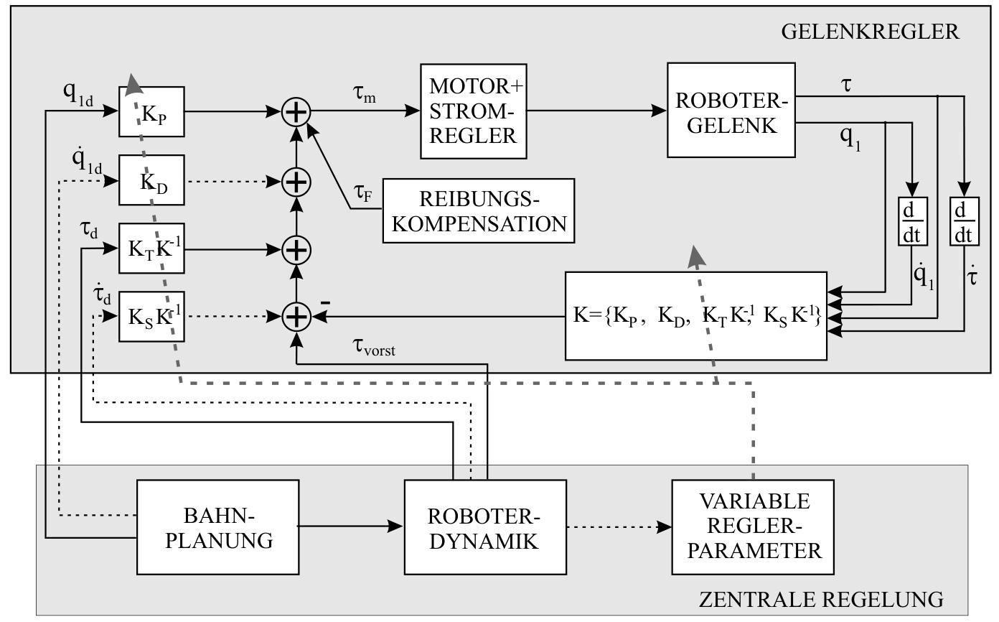
图 4.3: DLR 轻型机器人中状态控制器的结构。实线表示常数参数控制器的元素。由此，当 $\tau_d = \tau_{\text{vorst}} = g(q_{2d})$ 时，得到控制器 (4.48)。虚线表示可变参数控制器 (6.1) 的扩展，其中 $\tau_d = N(\dot{q}_2, q_2)$。
4.2.1 传感器概念：关节状态变量的选择
控制器 (4.48) 使用状态向量
即电机位置和速度以及输出侧关节力矩及其导数。这显然不是唯一可能的选择，例如也可以选择输出侧位置和速度作为状态变量。本节将讨论不同组合的优缺点，并论证选择状态向量 $x_1$ 的理由。
显然，在理想的线性单关节无重力影响的情况下：
不同的系统表示是等价的。例如，
都是可能的状态向量，相应的系统矩阵可以通过线性变换得到。如果弹簧阻尼 $d = 0$，则系统对于状态 $x_4$ 和缩放输入 $u_4 = \frac{k}{J_1 J_2} \tau_m$ 具有能控标准型：
在非线性多轴机器人情况下，状态向量 $x_4$ 也具有特殊意义，这支持测量 $q_2$ 作为状态。如第4.1.5节所示，在这种状态表示下，系统可以完全线性化和解耦。但这仅适用于 $d = 0$ 的情况。
在一般情况 $d \neq 0$ 下，状态线性化会导致更复杂的状态表示，从理论角度来看也难以处理。在机器人设计时，直接测量关节加速度和加加速度是不可行的。因此，这些量必须从其他可测状态变量中确定。该领域的新传感器发展可能会改变这种情况。
测量 $q_2$ 的另一个论据是，与使用电机位置和力矩相比，可以更精确地确定机器人末端（TCP）的位置。因此，LBR2 中预留了输出侧位置传感器的使用。但使用该测量量也存在以下缺点：
由于传动比，通过电机侧测量更容易获得高位置分辨率。DLR 轻型机器人具有非常紧凑的电机侧位置测量系统，基于也用于电机控制的模拟霍尔传感器。类似输出侧分辨率只能非常费力地实现，并且会显著增加关节重量。
从驱动技术中已知，基于输出侧位置的 PD 控制器在带宽较高时趋于不稳定 [87]，而基于电机位置的 PD 控制器理论上不会变得不稳定。
在 LBR2 中，发现部分振动也是由输出侧位置传感器之后的弹性引起的（图3.6）。因此，$q_2$ 也不能提供关于 TCP 的精确信息。然而，在第3.3.1节的辨识中，确定了所有弹性的总和，因此基于电机位置和关节力矩也可以很好地估计实际的输出侧位置。
这些考虑导致选择电机位置作为状态之一。选择关节力矩传感器作为第二个状态信号还有以下原因：
基于 $q_1$ 和 $q_2$ 测量的项 $k(q_1 - q_2)$ 由于上述原因，是真实关节力矩的一个不佳度量。此外，由于齿轮摩擦，电机力矩不能等同于输出力矩。因此，使用位置传感器只能非常不精确地实现柔顺行为和力矩控制。
通过适当选择增益矩阵，图4.3中的控制器既可以用于实现位置控制器，也可以用于实现力矩控制器（第6.4节）。通常，该控制器结构代表一个刚度控制器，可以实现期望的虚拟关节刚度 $k_a$ 和阻尼 $d_a$。在特殊情况 $k_a = 0$ 下，得到力矩控制器，而位置控制器是特殊情况 $k_a = k_{\max}$。由于实现可调柔顺行为是轻型机器人的特殊要求之一，该控制器结构具有明显优势。
如第6.1节所示，力矩及其导数可用于计算加速度 $\ddot{q}_2$ 和加加速度 $\dddot{q}_2$，从而实现状态线性化的简化实现。
许多笛卡尔控制方法 [46], [120], [21] 都基于关节层面的力矩接口。但全球范围内几乎没有机器人系统提供高性能的力矩接口。
力矩测量传感器技术已经成熟。DLR 在力矩测量系统的开发方面拥有多年经验。
因此，尽管力矩传感器引入了额外的弹性，但选择状态向量 $x_1$（测量电机位置和力矩，结合数值微分确定其导数）对于给定任务似乎是最合适的。
5. 具有常数参数和重力补偿的状态控制器
5.1 稳定性证明
在上一章中，提出了一种控制器结构，它从一个简单的、每个关节的线性控制器出发，通过添加关于机器人动力学的信息，向整个机器人的状态线性化方向扩展。在此背景下，一个具有理论意义和实际意义的问题是，最简单实用的控制器，即带有重力补偿的线性状态控制器，是否以及在何种条件下能够将复杂的非线性机器人动力学稳定在参考点附近。Arimoto [8] 为刚性机器人的 PD 控制建立了这样的证明，并且是这种控制器的理论依据，该控制器至今仍在大多数工业机器人中使用。Tomei [112] 将该证明扩展到了 PD 控制器和弹性关节机器人。然而，由于缺乏输出侧信息，该控制器只能提供不令人满意的结果。基于这些工作，本章推导了必要的稳定性条件，并为带重力补偿的状态控制器建立了稳定性证明。理论稳定性证明基于李雅普诺夫直接法，用于证明非线性系统的稳定性 [45], [96], [117]。
机器人和控制器的方程在此再次提及（参见 (2.25)-(2.27)）：
控制器 (5.4)：
证明使用了机器人动力学模型的一些已知数学性质 [8], [112]，下面简要描述：
E1) 惯性矩阵是正定的
$\lambda_m$、$\lambda_M$ 分别表示 $M(q_2)$ 对于所有 $q_2 \in \mathbb{R}^N$ 的最小和最大特征值，且均为严格正值。在本工作中，对于向量 $x \in \mathbb{R}^N$，使用欧几里得范数 $\mathcal{L}_2$：
对于实矩阵 M，使用诱导的 L2 范数：
E2) 矩阵 $\frac{1}{2}\dot{M}(q_2) - C(q_2, \dot{q}_2)$ 是反对称的（见第2.2节，附录B），因此：
E3) 重力向量的导数受常数 $\alpha \in \mathbb{R}$ 限制
该性质基于重力向量通过三角函数依赖于位置向量的事实（附录A.2）。通过两次应用中值定理，得到以下等价关系：
和
其中 $U_G$ 是重力势能：
$q_{2d}$ 是输出侧期望位置。
为了证明，将机器人的动力学方程仅表示为电机侧位置和速度 $q_1, \dot{q}_1$ 以及输出侧位置和速度 $q_2, \dot{q}_2$ 的函数是有用的。
控制器方程 (5.4) 变为：
其中使用了以下记号：
由于在稳态期望位置处所有导数均为零，由 (5.2) 得到电机和输出期望位置之间的关系：
系统的稳定性性质可以表述如下：
定理 1 给定系统 (5.2) 和控制律 (5.4)。期望位置 $q_{2d}$ 是全局渐近稳定的，如果满足以下条件：
证明：为了证明该定理，考虑以下函数作为李雅普诺夫候选函数：
该函数包含转子和输出侧机器人质量的动能、关节弹性能量以及控制器能量。一种系统建立该函数的方法将在第5.4节中讨论。考虑状态向量
和状态空间中的期望点：
显然满足 $V(x_d) = 0$。也可以立即验证当 $\|x\| \to \infty \Rightarrow V(x) \to \infty$。为了证明对于 $x \neq x_d$，$V(x) > 0$，我们使用性质 E3) 并将 $V(x)$ 分解为两项，第一项依赖于 $\dot{q}_1, \dot{q}_2$，第二项依赖于 $q_1, q_2$：
其中
在第一项 $V_1$ 中，所有矩阵都是对角的，因此当
时，该项正定。$N$ 是机器人关节数。在条件 (5.25) 和性质 E1) 下，$V_1$ 总是正定的。由于 $V_2$ 中的所有矩阵也是对角的，可以将 $V_2$ 分解为关节项：
$V_{2i}$ 是 $q_{1i}$ 和 $q_{2i}$ 的二次函数。为了使 $V_{2i}$ 正定，其海森矩阵
必须正定。应用西尔维斯特准则 [96]（第79页），并考虑 (5.25)，得到 $V_2$ 正定的条件：
因此，当条件 (5.25) 和 (5.28) 满足时，$V$ 是正定的。
李雅普诺夫函数 $V$ 对时间的导数为：
为了沿系统轨迹计算 $V$ 的导数，我们将 (5.13) 和 (5.14) 代入 (5.29)：
考虑 E2) 并进行一些简化后，得到：
利用 (5.18) 和关系
最终得到：
在此表达式中，所有矩阵再次具有对角形式。因此，$\dot{V}$ 可以分解为关节项：
其中
为清晰起见，省略了关节下标 $i$。为了使 $\dot{V}(\dot{q}_1, \dot{q}_2)$ 负定，海森矩阵
必须正定。应用西尔维斯特准则并考虑 (5.25)，得到 $\dot{V}$ 负定的条件：
注意到 $\dot{V}$ 仅依赖于 $\{\dot{q}_1, \dot{q}_2\}$。因此，$\dot{V}$ 作为 $\{\dot{q}_1, q_1, \dot{q}_2, q_2\}$ 的函数仅是负半定的，因为对于所有形如
的点，其值为零。这样就证明了系统的稳定性，但尚未证明全局渐近收敛到期望点。为了证明受控机器人状态空间原点的渐近稳定性，可以使用拉萨尔不变性原理 [117]。该原理指出，对于负半定的 $V$，系统收敛到满足 $\dot{V} = 0$ 的最大不变集。
不变集是状态空间中的一个集合，任何进入该集合的状态轨迹都不会再离开它。
因此，必须证明 $\Gamma = \{x_d\}$ 是子空间
的最大不变集。
条件 (5.39) 等价于
由于这些条件对于 $\Gamma$ 中的所有轨迹始终满足，将 (5.40) 代入 (5.13) 和 (5.14) 得到描述最大不变集 $\Gamma$ 的方程。状态轨迹在 $\Gamma$ 内退化为单点，因为速度为零。因此，系统的微分方程退化为代数方程：
两次应用 (5.18)（针对 $q_{1d}$ 和 $q_1$），得到
该方程也必须对两个向量的范数成立：
(5.42) 对于 $q_2 = q_{2d}$ 显然成立。对于 $q_2 \neq q_{2d}$ 且考虑 (5.10) 和 (5.28) 的情况，以下不等式链成立：
由此可以得出结论，(5.42) 除 $q_2 = q_{2d}$ 外没有其他解，因此点 $x = x_d$ 是全局渐近稳定的。
5.1.1 稳定性条件的讨论
在上一节中，推导了带重力补偿的状态控制器渐近稳定性的条件，并总结在（定理1）中：
现在对这些条件进行更详细的解释和讨论。
条件 (5.45b) 涉及未受控机器人的机械特性。它要求关节的刚度足够高，以便在重力场中支撑带有锁定电机的机器人。这个条件对于所有实际感兴趣的情况都满足。不满足此条件的机器人属于病态特例，可能表现出不稳定或混沌行为 [44]。
关于条件 (5.45c)，首先注意到它只有在 $k_P$ 为正值时才能满足。实际上，由于 (5.45a) 和 (5.45b)，
因此，对于足够大的 $k_P$ 值，该条件总能满足。(5.45c) 中括号内的表达式是正的，这意味着：
因此，条件 (5.45c) 对于受控机器人的含义类似于条件 (5.45b) 对于具有静止电机的机器人的含义。受控关节的刚度，作为力矩和输出侧位置之间的静态比率，必须能够稳定重力场中的机器人。对于位置控制，这个条件通过选择足够高的 $k_P$ 值自然满足。在可变刚度控制的情况下，对于期望的低刚度，这个极限可能会被超过。在这种情况下，实验中也观察到了极限环的出现。一个极端情况是力矩控制，其期望刚度为0。在这些情况下，重力补偿当然不能基于期望位置进行。问题被简单地解决，即使用当前实际位置。
考虑到 (5.47)，条件 (5.45a) 意味着受控机器人的刚度小于机械未受控系统的刚度：
虽然通过力矩反馈理论上可以提高关节刚度，并且已经在一个关节上进行了实验实现。即使在这个完全可线性化的简单情况下，特征值对参数变化和不确定性的高度敏感性，无论是在实验中还是在观察根轨迹时，都是显而易见的。控制器的无源性特性因此丢失，因此对于整个机器人，使用我们提出的方法无法再保证稳定性。
由于鲁棒性低，根据经验，要控制关节刚度高于自然刚度对于一般实际应用将非常困难。这是在使用弹性关节机器人时必须意识到的限制。
条件 (5.45d) 也是状态控制器无源性的主要条件（见第5.4节）。对于足够高的 $k_D$ 值，该条件总能满足。
5.2 库仑摩擦的影响
在控制律 (5.14) 中，假设摩擦是已知的并可以被补偿。第3.3.2节介绍了摩擦辨识的方法和结果。但由于摩擦会随温度和时间变化，在实际情况下不可能完全补偿摩擦。因此，将 (5.14) 中的 $\tau_F$ 替换为估计值 $\hat{\tau}_F$：
并用 $\Delta \tau_F$ 表示估计误差
由于摩擦是耗散力，稳定性证明在此情况下只需稍作修改。李雅普诺夫函数 $V_F$ 可以不变地采用 (5.19)。在计算 $\dot{V}_F$ 时，将 (5.49) 代替 (5.14) 代入 (5.29)，得到：
其中 $\dot{V}$ 是 (5.30) 中李雅普诺夫函数的导数。额外的项是负定的，因此条件 (5.37) 保持有效。(2.29) 中的粘性摩擦分量可以纳入 $\dot{V}$，从而略微放宽条件 (5.45d)：
因此，稳定性仍然得到保证。然而，由于库仑摩擦在 $\dot{q}_1 = 0$ 处的不连续性，必须特别注意渐近稳定性问题。由于摩擦在该点不为零，(5.42) 变为
其中
以及根据 (2.29) 的最大摩擦力值 $\tau_F^{\max}$。对于 (5.53) 左侧的范数，考虑 (5.10) 和 (5.28) 以及所有矩阵都是对角的，可以建立以下关系：
其中 $\delta_i$ 表示以下表达式：
如果角度差的范数满足
则得到不等式
因此，(5.53) 在这个区域没有解。因此，最大不变集扩展到每个关节的一个区间：
如第5.1节所示，不变集内的轨迹退化为单点，因为速度为零。结果反映了这样一个事实，即在未补偿的库仑摩擦情况下，关节会在期望位置附近的一个死区内停止。
5.3 重力补偿的影响
控制律 (5.4) 除了关节摩擦外，还需要关节弹性和重力向量作为必要的模型知识。本节分析系统关于这两个模型分量估计不准确性的鲁棒性。用 $\hat{K}$ 表示关节弹性的模型值，用 $\hat{g}(q_{2d})$ 表示重力向量的估计值，则控制律 (5.14) 变为
因此，平衡状态方程为：
其中 $\delta g$ 是误差项
电机位置期望值 (5.18) 变为
其中
因此，对于输出侧位置，得到以下方程：
总误差项为
方程 (5.65) 类似于 (5.53)，区别在于 $\delta \tau$ 是一个固定的常数值。接下来证明以下辅助定理：
引理 1 在定理1的条件下，方程 (5.65) 有唯一解。
证明：实际上，对每个关节，该方程意味着
方程的右侧是 $q_{2i}$ 的连续且双侧无界函数。对于所有任意的、固定的 $q_{2j}$（$j \neq i$）值，方程的左侧是 $q_{2i}$ 的连续有界函数。因此，无论其他关节的位置如何，总是存在至少一个 $q_{2i}$ 值使方程成立。因此，系统 (5.65) 至少有一个解。
假设系统有两个不同的解 $q_{2a}$ 和 $q_{2b}$，则这两个值都满足方程 (5.65)，通过相减得到
但在稳定性证明中已经证明，该方程只有解 $q_{2a} = q_{2b}$。因此，系统有唯一解。
将此解记为 $q_{20}$。基于与第5.2节相同的考虑，从 (5.65) 可知，$q_{20}$ 位于区间
内。其中
在这种情况下，系统全局渐近稳定地收敛到位置 $\{q_{1d0}, q_{20}\}$，并且 (5.69) 给出了持续控制偏差的最大值。控制器的无源性不受影响。稳定性证明与第5.1节相同，其中李雅普诺夫函数中的 $q_{2d}$ 被 $q_{20}$ 替换。
5.4 从无源性理论角度的考察
李雅普诺夫稳定性证明方法基于对受分析系统能量方面的考察。因此，该方法与无源性形式主义密切相关。本节将从无源性理论的角度对给定问题进行研究。该研究提供了对控制器稳定性背后物理背景的更好洞察，并导致从第5.1节稳定性证明中系统推导出李雅普诺夫函数 (5.19)。
建立这些方法的第一个动机是每个物理系统都遵循的能量守恒定律：
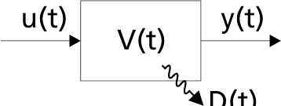
图 5.1: 无源系统
形式上，可以将一个相应的“能量”方程与每个具有输入 $u$ 和输出 $y$ 的动态系统关联：
例如，对于一个机械系统，如果输入-输出对是力和速度，这对应于系统的物理功率平衡。如果广义能量 $V(t)$ 有下界（例如为正）且 $D(t) \ge 0$（即系统不包含能量源），则称该系统为无源的。如果对于每条非平凡轨迹都消耗能量：
则称该系统为耗散的。利用类似李雅普诺夫的方法，可以证明无源系统是稳定的（[96], [75], [70]）。同样，无源系统的并联和反馈互连会得到一个无源且因此稳定的系统。因此，这类系统也被称为超稳定的。
接下来，将无源性形式主义应用于弹性关节机器人。为了简化讨论，首先考虑一个最简单的线性形式单关节：
在线性情况下，可以不失一般性地设 $q_{1d} = 0$。如果选择 PD 控制器作为控制器：
则系统可以看作是两个无源系统的反馈互连：机器人关节作为机械系统，输入输出对为 $\{u = \tau_m, y = \dot{q}_1\}$，以及控制器-电机单元，输入输出对为 $\{u = -q_1, y = \tau_m\}$。
通过类比弹簧-阻尼器系统，立即得到控制器的功率方程：
其中 $V_1$ 是弹簧的势能，$D_1$ 是阻尼器的功率耗散。同样，对于关节得到功率方程：
其中 $V_2$ 包含两个质量的动能和关节弹性能，$D_2$ 是关节阻尼。因此，整个系统作为两个无源系统的反馈互连是稳定的。
现在考虑具有状态控制器的单关节情况：
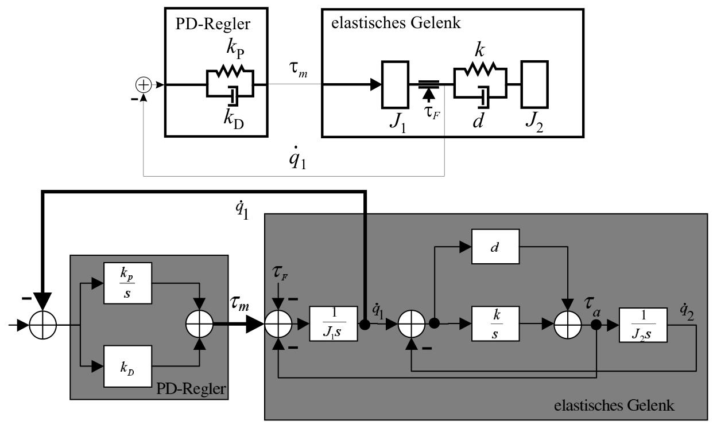
图 5.2: 带 PD 控制器的弹性关节可以看作是两个无源系统的反馈互连
由于电机是系统中唯一潜在的主动源，可以尝试建立控制器-电机单元的功率方程：
显然，像图5.2那样的表示不再可能，因为力矩及其导数不能仅由电机速度确定。从方程 (5.75) 和 (5.79) 可以推导出力矩反馈：
因此，(5.80) 变为
这个表达式可以转化为形式上类似于功率方程的形式：
但这个方程显然不对应于一个无源系统，例如 $V_3$ 中依赖于 $q_1^2$ 的项总是负的且无下界。但如果将来自 (5.78) 的电机惯性动能以及弹性能和阻尼额外纳入这个功率方程，
则得到一个具有正“能量”项的功率方程。该方程对应于由控制器-电机单元、转子惯性和关节弹性组成的扩展系统。
在这个表达式中，$V_4$ 总是正的，因此有下界。$D_4$ 是 $\{\dot{q}_1, \dot{q}_2\}$ 的二次函数，可以改写为：
在方程 (5.86) 和第5.1节稳定性证明中 $\dot{V}$ 的表达式 (5.35) 之间，显然存在一个非常简单的关系：
对于每个关节 $i$。在第5.1节中，还推导了 $V_i \le 0$ 的条件：
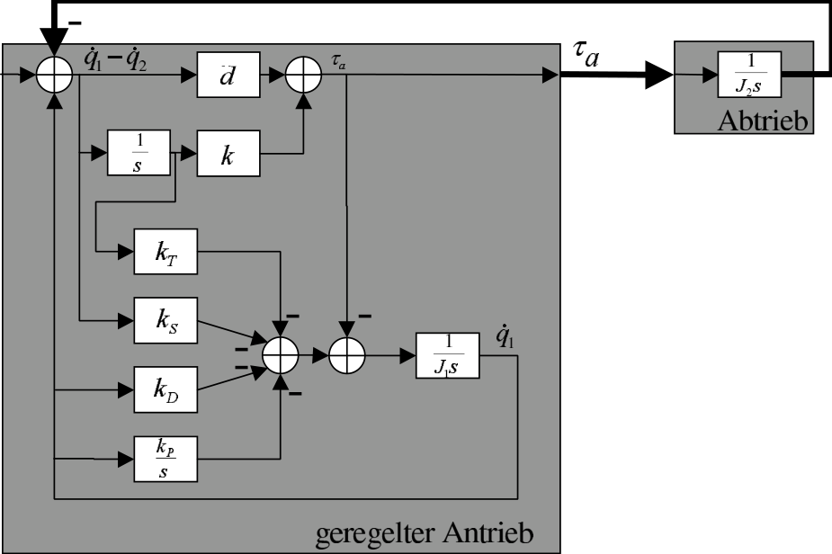
图 5.3: 将关节与状态控制器表示为两个无源系统的反馈互连
但是，为了获得整个关节作为两个系统反馈互连的表示，考虑输入-输出对 $\{\tau_m, \dot{q}_1\}$ 是不合适的。由于系统是无源的，功率形式对于任意一致选择的输入-输出对同样有效。如果选择对 $\{\tau_a, \dot{q}_2\}$，则图5.3所示的表示是可能的。其中 $\tau_a$ 是输出侧力矩：
第一个系统包含控制器、电机惯性、关节弹性和阻尼，而第二个系统仅包含输出侧惯性。
在新的输入-输出变量下，第一个系统的功率方程很快得到验证：
类似于 (5.81)，有
因此，(5.90) 变为
该表达式又等价于 (5.85)。
5.4.1 整个机器人的无源性
上一节的结果可以总结如下：
- 对于带状态控制器的弹性关节，控制器本身不能表示为无源系统。
- 考虑由控制器、电机惯性、传动弹性和阻尼组成的系统，在条件 (5.88) 下，可以为该系统建立一个功率方程，该方程对应于一个以 $\{\tau_a, -\dot{q}_2\}$ 为输入-输出对的无源系统。
- 值得注意的是，前面提到的系统不包含 (5.75) 中对应输出侧惯性的第二个方程。这个第二个系统在线性情况下的能量为因此，$V = V_4 + V_5$ 是整个系统的能量。此外，这个事实还有以下重要意义：对于每个关节，直到关节弹性的被控对象部分可以通过状态控制器被控制成一个无源系统，其李雅普诺夫函数具有 $V_4$ 的形式。因此，整个受控机器人可以看作是无源模块的组合，如图5.4所示。整个机器人的李雅普诺夫函数可以通过将各个关节的“能量”与对应于刚性操作器的能量相加得到。其中刚性操作器的能量由动能和重力场势能组成。这是获得李雅普诺夫函数 (5.19) 的途径。(5.19) 中的最后两项与 (5.4) 中的重力补偿有关，用于确保 $V(q_{2d}) = 0$，从而保证全局渐近稳定性。
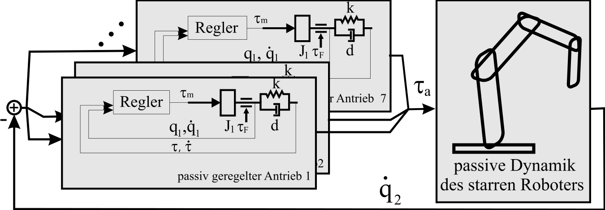
图 5.4: 整个机器人表示为无源模块的组合
5.5 增益矩阵的设计
本节以 LBR2 的第一轴为例，讨论控制器增益 $\{K_D, K_P, K_S, K_T\}$ 在 (4.48) 中的实际设计。这里基于系统表示 (4.47)。控制器的结构允许对 (4.47) 中的线性部分为每个关节单独设计增益。通过验证条件 (5.18) 来确保整个非线性系统的稳定性。线性部分为：
其中状态向量
并且
概念上，这对应于单个关节的运动，而其余关节被固定在任意位置。其中 $J_2 = m_{ii}(q_2)$ 是惯性矩阵当前恒定的主对角元素，它依赖于后续关节的位置，取值在
之间。
容易验证系统是可控的。例如，可以通过极点配置来设计全状态反馈。设计是在连续时间域进行的，因为关节控制的高采样率（3 kHz）与离散化系统相比没有显著差异。此外，结果可以直接从连续时间域扩展到非线性系统。
对于受控系统的矩阵 $A = A_1 - b_1 k_R^T$，其中反馈增益 $k_R^T = [k_d, k_p, k_s, k_t]$，设定四个相同的实特征值 $\lambda_{1,\dots,4} = -\lambda_0$。关于每个关节 $\lambda_0$ 值的精确选择，将在研究第6章中的可变参数控制器时讨论。这里仅预告，$\lambda_0$ 通过设定期望的关节刚度间接确定。
5.5.1 可变质量惯性的影响
可变质量惯性对系统特征值的影响可以通过根轨迹图5.5很好地观察。以关节1为例进行研究。这里 $J_{2\min} \approx 0.1 \, \text{kg m}^2$，$J_{2\max} \approx 10 \, \text{kg m}^2$，假设 TCP 处有最大负载。控制器设定为期望刚度 $k_{\text{des}} = 1800 \, \text{Nm/rad}$。图5.5a显示了在假设 $J_{2a} = 1 \, \text{kg m}^2$ 下设计的根轨迹。可以看出，对于大于 $J_{2a}$ 的惯性，系统有两个主导的复共轭特征值，而对于小于 $J_{2a}$ 的惯性，有一个主导的实特征值。这种行为也可以在实验上观察到，如图5.6a中的输出侧速度阶跃响应所示。因此，很明显，“最坏情况”是 $J_2 = J_{\max}$，必须为这个值设计控制器。图5.5b显示了新的根轨迹，相应的实验结果如图5.6b所示。令人惊讶的是，尽管有两个增长的虚部特征值，不同惯性下的测量在这种情况下却非常相似。仿真结果也类似（图5.7a）。只有在脉冲响应（图5.7b）中，振动才变得可见。但这种情况在机器人的正常操作中几乎不会发生。
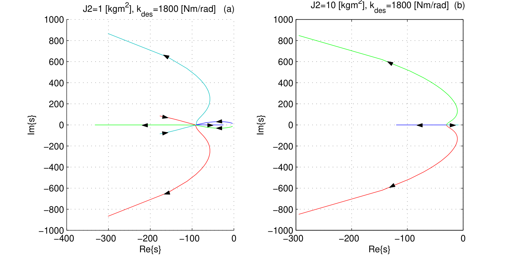
图 5.5: 可变质量惯性下关节1的根轨迹：a) 控制器设计为 $J_2 = 1 \, \text{kg m}^2$ b) 控制器设计为 $J_2 = 10 \, \text{kg m}^2$
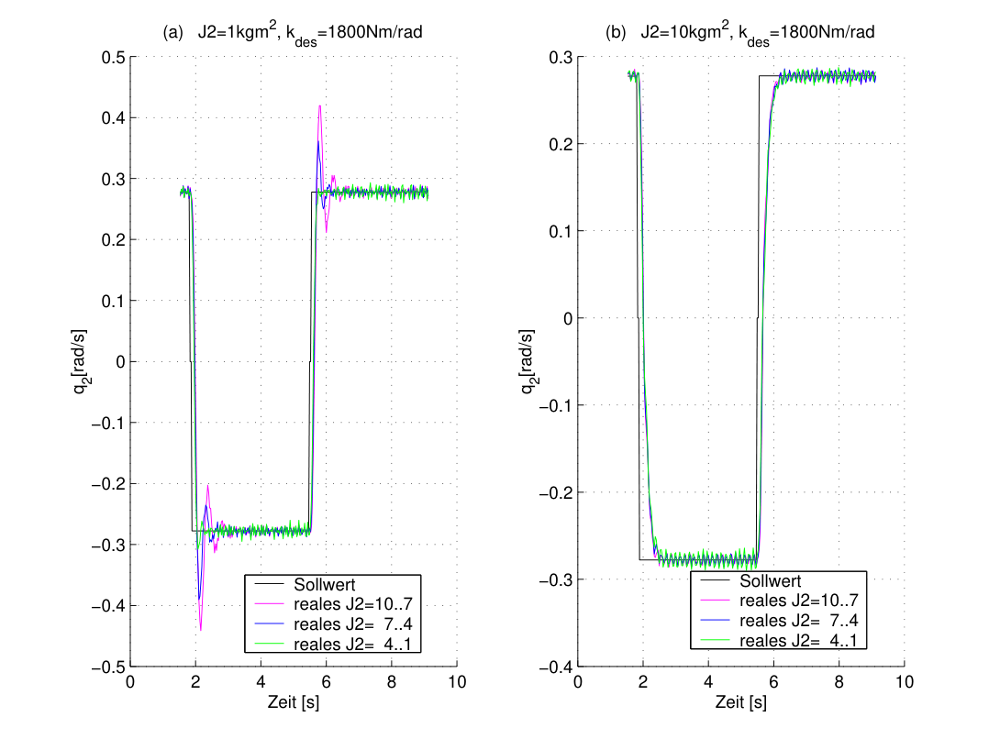
图 5.6: 可变质量惯性下输出侧位置阶跃响应的测量：a) 控制器设计为 $J_2 = 1 \, \text{kg m}^2$ b) 控制器设计为 $J_2 = 10 \, \text{kg m}^2$
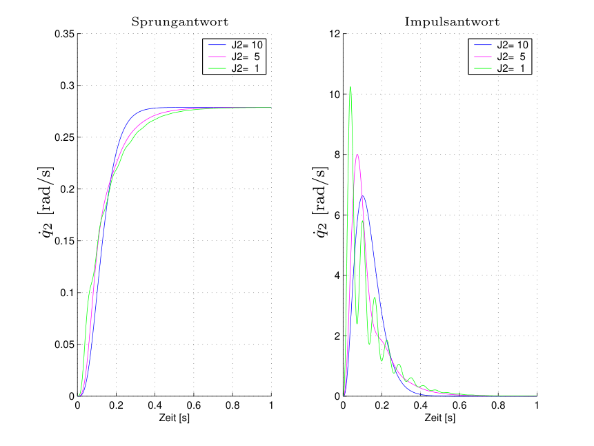
图 5.7: a) 阶跃响应和 b) 脉冲响应，可变质量惯性，控制器设计为 $J_2 = 10 \, \text{kg m}^2$（仿真）
5.5.2 稳定性条件的验证
为了验证稳定性条件 (5.18)，需要确定常数 $\alpha$ 的值。可以证明（附录A.2），
满足条件 (5.9)。其中 $g_{\max_i}$ 是重力在第 $i$ 轴上能产生的最大力矩。表5.1总结了 LBR2 第一轴的被控对象和控制器参数，以及稳定性条件 (5.18) 的验证。
表 5.1: LBR2 第一轴的模型和控制器参数及稳定性条件验证
| 参数 | 值 | 条件验证 |
|---|---|---|
| $k$ [Nm/rad] | 8000.0 | |
| $d$ [Nms/rad] | 6.0 | |
| $d_1$ [Nms/rad] | 20.8 | |
| $d_2$ [Nms/rad] | 0.0 | |
| $J_1$ [kg m²] | 1.83 | |
| $J_2$ [kg m²] | 0.1 … 10.0 | |
| $\alpha$ [Nm/rad] | 554.6 | |
| $k_{\text{stiff}}$ [Nm/rad] | 1800.0 | |
| 条件 (5.45a): $k + k_t$ | 6.47e3 > 0 | 满足 |
| 条件 (5.45b): $k - \alpha$ | 7.53e3 > 0 | 满足 |
| 条件 (5.45c): $k_{\text{stiff}} - \alpha$ | 1.2e3 > 0 | 满足 |
| 条件 (5.45d): $k_d(k + k_t) - (k_s k_{\text{stiff}} - k_t d)^2$ | 1.90e2 > 0 | 满足 |
5.6 实验结果
图5.8和图5.9显示了 LBR1 和 LBR2 单轴运动时状态控制器的实验结果。为了比较，图中也包含了传统 PD 控制的结果。这些图显示了电机速度的阶跃响应，由此可以评估控制器的过渡时间。相关的力矩信号可以判断输出侧振动的阻尼效果。力矩呈分段正弦曲线，由关节的自重负载引起。在转折点可以看到减速和加速力矩。
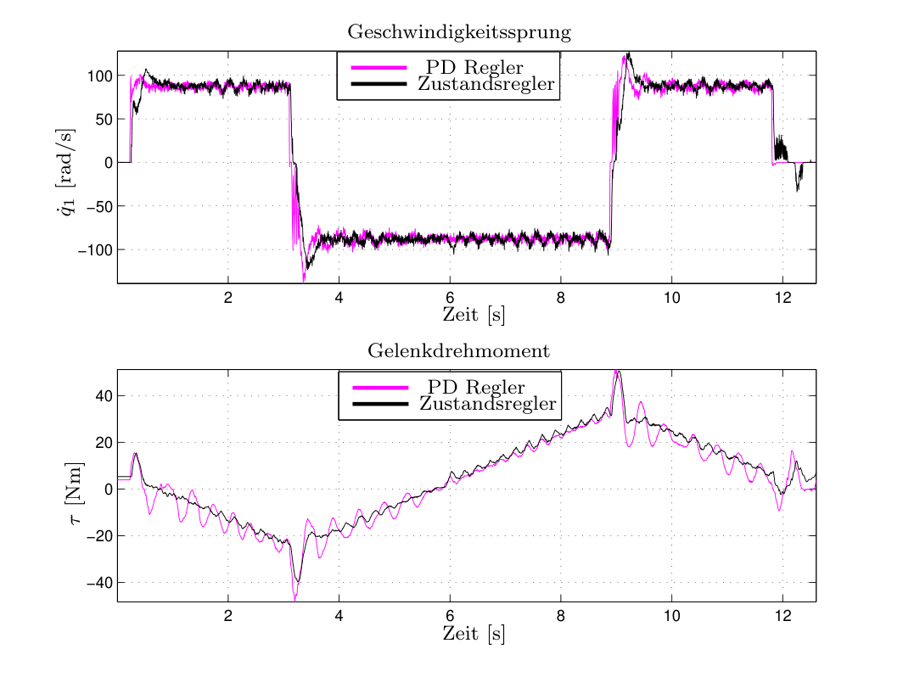
图 5.8: LBR1 第二轴 PD 控制器与状态控制器的比较
在图5.8的测量中，两个控制器的过渡时间选择得相当大。在此情况下，PD 控制器在力矩上表现出强烈的振动，而状态控制器实现了最佳的振动抑制。信号上剩余的周期性不规则性是由齿轮的传动误差引起的。
在图5.9中，显示了阻尼更好的 PD 控制器的测量结果，这导致 PD 控制器的过渡时间几乎是状态控制器的两倍。尽管如此，PD 控制器的力矩仍存在一定的残余振动。
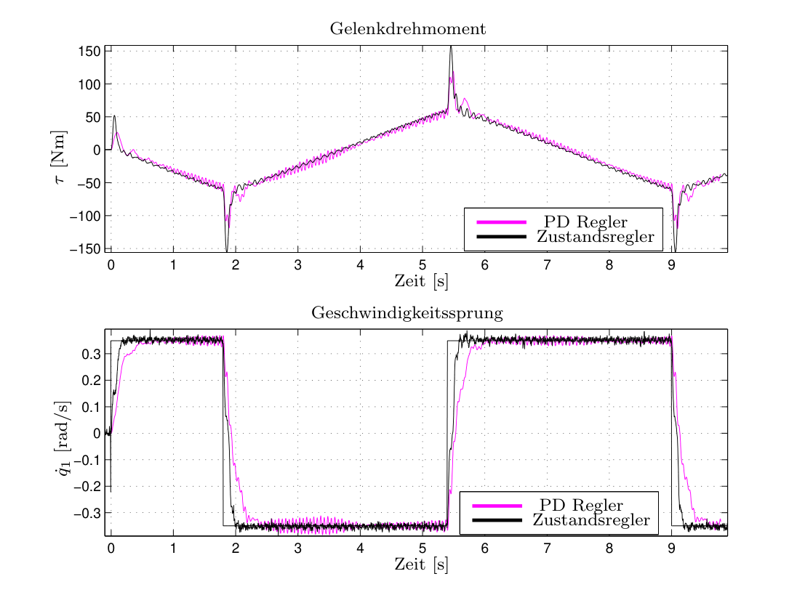
图 5.9: LBR2 第二轴 PD 控制器与状态控制器的比较
具有常数参数和重力补偿的状态控制器作为标准控制器已在 LBR2 上连续运行可用。该控制器在整个机器人上的结果可以在图3.17–图3.21中看到。那里为了验证辨识结果而进行的测量包括 LBR2 所有关节速度的同时阶跃响应，其中使用了状态控制器 (4.48) 进行关节控制。尽管关节之间存在耦合以及同时速度变化带来的强应力，但在力矩信号上仍能观察到良好阻尼的输出侧行为。
总体而言，与传统控制相比，控制性能得到了显著改善。
6. 具有可变参数的状态控制器
从上一节的研究可以看出，输出侧质量惯性在相当大的范围内变化会对控制质量产生显著影响。因此，很自然地想到使用如图4.3所示的控制器：
其中
前馈项 $\tau_{\text{vorst}}$ 可以包含依赖于期望位置 $q_{2d}$ 的高阶导数的项（见 (6.25)）。当 $\tau_{\text{vorst}} = g(q_{2d})$，$N(\dot{q}_2, q_2) \approx g(q_{2d})$，$\dot{N}(\dot{q}_2, q_2) \approx 0$ 且 $\dot{q}_{1d} \approx 0$ 时，该控制律退化为 (4.48)。除了解耦 (4.47) 中的非线性项外，控制器参数根据质量惯性和期望刚度的当前值进行变化 ($\theta = \{m_{ii}(q_2), k_i\}$)。这里隐含地认为质量惯性 $m_{ii}(q_2)$ 的变化是准静态的，即其导数为零。
对该控制器的理论分析可以从两个方向进行。该控制器可以被视为“增益调度”原理的扩展。在这种观点下，没有稳定性分析的工具。但也可以将这些控制器视为具有完全动态解耦的非线性控制器（第4.1.5、4.1.6节）的简化实现，并将其稳定性证明作为基础。简化主要涉及忽略刚体动力学中项（例如惯性矩阵）的时间导数。因此，可以预期在相应高的速度下会出现稳定性问题。出于同样的原因，我们认为不可能给出一个通用的稳定性证明。因此，从实践角度来看，澄清各个简化步骤并分析其实际意义非常重要。推测许多计算量很大的项在通常的机器人速度下没有实际意义。另一方面，如果发现某些简化导致性能显著下降，那么后续的开发工作应该集中在这几点上。
6.1 可变参数下的稳定性
本节将完全状态线性化控制器与机器人中实现的可变参数常数期望特征值控制器变体（另见第6.3节）进行比较。选择这两种控制器基于两个原因。首先，它们的实现相对简单。其次，完全解耦后只产生线性系统，其响应在整个工作空间内是相同的，并且可以获得良好的实际感觉。这将大大简化结果的解释。类似的分析对于本章介绍的所有可变参数控制器变体都是可行的。
我们再次从已建立的模型表示出发：
为了在仿真中实现状态线性化，第一步可以假设完整状态 $x_4 = \{q_2, \dot{q}_2, \ddot{q}_2, q_2^{(3)}\}$ 是可测的。然后我们改写第4.1.5节的结果。被控对象模型可以改写为：
由 (6.7) 得
代入 (6.6) 得到仅依赖于状态 $x_4$ 的被控对象模型：
使用控制律
得到每个关节解耦的动力学
其中 $\tilde{q}_2 = q_{2d} - q_2$ 是输出侧位置误差。通过对角矩阵 $C_{1\dots 4}$ 可以赋予系统期望的动态。现在已经可以看到实现时的第一个困难：诸如
这样的项，实际上既不能通过数值微分也不能通过符号计算偏导数并观测加速度来获得。第一种情况等同于从位置数值计算加速度，而计算偏导数则计算量太大（我们曾尝试过，仅一阶导数所需的计算时间就比刚体动力学所需的时间高出近两个数量级）。在 [111] 中，为了补偿，使用的是期望值而不是实际值，作为前馈控制。通过相应的滤波，确保位置直到四阶导数是平滑的，因此可以数值计算导数。因此，首先研究了这些项在整个动力学中的实际重要性。
在图6.1中，显示了使用完全控制器和忽略 $\dot{M}(q_2)$、$\dot{M}(q_2)$、$\ddot{N}(q_2, \dot{q}_2)$ 时的两个仿真结果。仿真针对图3.17–3.21中的整个轨迹进行。所有轴的总相对速度误差为 $\epsilon = 0.0027\%$。图中放大了阶跃响应。在这个图上差异几乎不可见。即使在十倍速度的仿真中，误差仍然很小 ($\epsilon = 0.035\%$)。但在百倍速度下，系统变得不稳定。这些实验证实了我们实验中的观察，即在实践相关的速度范围内，动态项的导数具有可忽略的重要性。理论上预测的问题出现在速度高出一个数量级以上时。因此，以下简化是合理的：
- (A1) 在实际机器人速度下，项 $\dot{M}(q_2)\ddot{q}_2$、$\dot{M}(q_2) q_2^{(3)}$、$\ddot{N}(q_2, \dot{q}_2)$ 可以忽略。
通过这些简化，控制器简化为
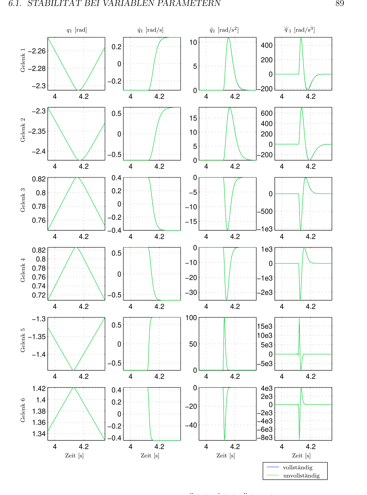
图 6.1: $\dot{M}(q_2)$、$\dot{M}(q_2)$、$\ddot{N}(q_2, \dot{q}_2)$ 的影响
实现此类控制器的第二个主要问题是需要输出侧位置 $q_2$ 的高阶导数 $q_2^{(3)}$ 和 $q_2^{(2)}$。如图4.3所示，在轻型机器人的状态控制器中，状态量
是可用的。另外两个状态要么直接用输出侧位置传感器测量，要么从电机位置和力矩计算：
这导致控制器的表述仅需要 LBR2 中可用的信号：
其中 $\tilde{x}_{1,i} = x_{d(4,i)} - x_{(4,i)}$。
在 LBR2 中现有的可变参数控制器实现中，还做了另一个简化假设：
- (A2) 惯性矩阵被假设为对角的 $M(q_2) \approx M_\Delta(q_2)$，非对角线项设为零。
这种简化使得控制器可以为每个关节独立设计。(6.19) 变为：
该控制器对应于轻型机器人关节中实现的控制律 6.1，其中各个控制器参数之间存在以下关系：
其中 $\tau_d$ 由 (6.3) 计算，$q_2 = q_{2d}$。
图6.2显示了完全状态线性化控制器与 LBR2 上实现版本 (6.20) 的仿真比较。对于后者，在仿真和实际机器人上使用了相同的 C 程序。注意到，尽管带有简化假设 (A1, A2) 的控制器显示出明显的偏差，但仍然具有良好阻尼的行为。在速度信号上可以观察到轻微的振荡，在加速度和加加速度上更为明显。如果试图提高带宽，振荡会增加。也注意到，速度振荡的幅值并不比齿轮引起的周期性扰动大，在实际测量信号上可能不会被注意到。在这里，仿真研究的价值更加明显。
备注：如果所有关节的期望特征值相同，则矩阵 $C_4$ 和 $C_3$ 成为实常数，并且将惯性矩阵简化为其对角元素不再是必需的。
从这些仿真实验可以得出以下结论：
- 对于当今具有中等弹性的机器人，假设 (A1) 可以在不损失性能的情况下进行。
- 假设 (A2) 仅在有限的带宽内成立。如果带宽设定在关节固有频率之上，则会出现明显偏差。这是可以理解的，因为惯性耦合部分被忽略，并且仅在力矩 $\tau$ 中隐含存在。
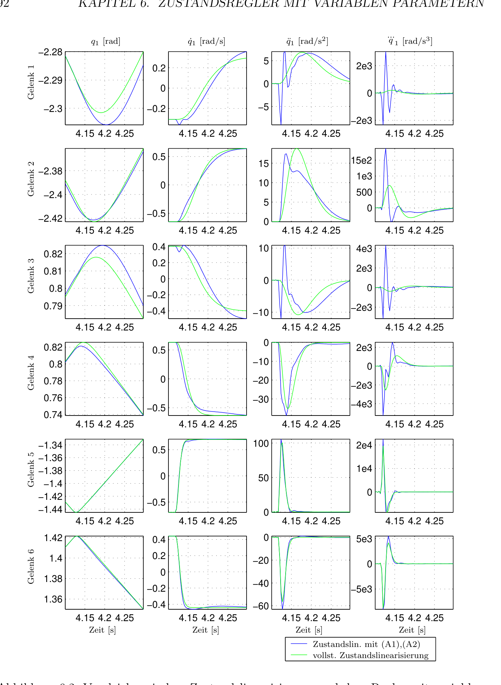
图 6.2: 状态线性化与在假设 (A1) 和 (A2) 下的可变参数控制器的比较
LBR 中当前的计算硬件架构是为这种解耦的、分散的控制器设计的。关节控制器的采样时间为 3 kHz，但仅能获取关节内部信息。然后关节数据以 1 kHz 的周期传输给机器人控制器。该控制器的周期为 5–10 ms。在更大的周期内计算 $M(q_2)$、$N(\dot{q}_2, q_2)$、…… 是合理的。但是，如果 (6.19) 中所有状态的乘法能在 3 kHz 周期内完成，那将是有利的。由此产生了两个改进建议，目前正在实施中：
- 将总线周期时间提高到至少 3 kHz。这使得能够以足够的采样频率集中计算关节控制器，从而可以在 (6.19) 中使用完整的惯性矩阵。
- 在关节中安装加速度传感器。已经进行了使用线性加速度传感器的实验 [105]。但从线性加速度反算关节角加速度并不比从关节力矩观测更容易。表明用于旋转运动的加速度传感器将以较低价格可用。此外，它们的优点是不中断关节中的力流。在第6.7节中，将给出支持这些传感器的另一个论据：同时设定期望刚度和特征值。因此，从这些角度来看，研究关节加速度的实际效用似乎是合理的。
6.2 可变参数控制器的设计
从上一节的研究中，得出了一个适用于所有 LBR 控制器的原则：力矩可以分成一个慢分量 $\tau_S = N(\dot{q}_2, q_2)$ 和一个快分量 $\tau_F = \tau - N(\dot{q}_2, q_2)$。已经看到，充分考虑慢分量的非线性耦合就足够了，而快分量可以简化为一个具有准静态变化质量惯性的线性系统。机器人的振动行为主要由快动态分量决定。通过分析这个简化模型，可以快速认识到不同非线性控制器（第4.1.4、4.1.5、4.1.6节）的实际优缺点。本节将致力于此。由此将发展出一些关于可变参数设计的建议。
6.2.1 可变关节刚度
在与可变参数控制器设计相关的背景下，我们还引入了对特定关节刚度的要求。如第4.2节所述，由于同时反馈位置和力矩，我们提出的控制器结构不仅适用于实现位置控制器，也适用于实现刚度控制器。这里的关节刚度是指静态外部力矩与稳定后输出侧相对于期望位置的偏差之间的比率。对于关节的线性模型，这意味着：
在第5.1.1节讨论稳定性条件含义时，已经指出使用状态控制器
成立。因此，刚度控制器包含以下特殊情况：
- 最小刚度：$k_a = 0$ → 带重力补偿的力矩控制
- 最大刚度，受限于输入饱和和鲁棒性：$k_a = k_{\max}$ → 最大带宽的位置控制
由于只有四个增益因子 $\{k_p, k_d, k_s, k_t\}$ 可用于设计控制器，同时设定期望刚度 $k_a$ 和受控系统的四个特征值，例如通过期望特征多项式
会导致一个超定问题。在具体应用中，取决于哪个标准应被优先考虑。但一般来说，可以说更高的刚度会导致更高的增益，从而带来更高的带宽。在本节的后续部分，将就此主题提出一些建议。在少数情况下，除了期望刚度外，还希望设定关节的可变期望阻尼。通常，只要求良好阻尼的行为。为了不使问题进一步复杂化，阻尼直接映射到 (6.28) 中特征值的期望阻尼：
6.3 常数特征值的设定
设计可变控制器参数最简单可能的解决方案可能是设定常数特征值，与机器人配置和因此的输出侧惯性无关。这具有机器人带宽不依赖于位置的优点。在这种情况下，可以依赖标准的极点配置方法 [83], [2]。对于每个期望特征值，都有唯一解，并且计算量相对较小，因此控制器设计可以在笛卡尔控制的周期内轻松完成。在第5.5节中已经看到，即使使用常数参数也能实现较小的带宽变化。通过考虑可变质量惯性，可以期望提高整体带宽。从概念上讲，这种设计对应于状态线性化控制器的简化形式。整个机器人的两种控制器之间的关系已在第6.1节中详细分析。但在仿真中也出现了一些问题，可以用单关节的例子很好地解释。以下分析再次以第一轴为例，因为这里惯性变化最大。
未受控系统的根轨迹如图6.3所示。左图显示了 $0 < J_2 < \infty$ 的完整根轨迹，右图显示了复平面原点附近区域。粗线突出显示了对应于真实机器人惯性 $J_{2\min} < J_2 < J_{2\max}$ 的根轨迹段。可以看出，系统有一个零特征值和第二个慢实特征值。此外，它有两个由弹性引起的对应于关节振动的复共轭特征值。最慢的振动频率约为 $f \approx 11.35 \, \text{Hz}$。由于我们打算在抑制振动的同时保持带宽，设定四重极点 $\lambda_0 = -2\pi f$ 是合理的。在图6.4中，受控系统的刚度 (6.27) 以对数坐标显示为输出侧惯性的函数。从中可以识别出设定常数特征值时出现的两个主要问题：
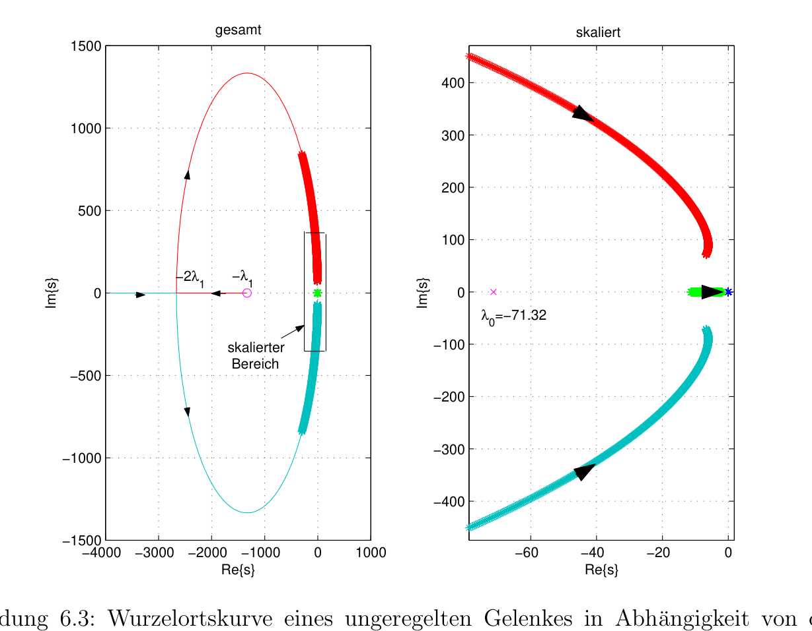
图 6.3: 未受控关节的根轨迹随输出侧质量惯性 $J_2$ 的变化
关节刚度随 $J_2$ 增大而增大。这伴随着控制器参数 $k_p$ 和 $k_t$ 的强烈增加，并导致达到输入饱和限制和低鲁棒性。因此，最大质量惯性限制了可达到的带宽，并需要保守地设计 $\lambda_0$。
在低惯性区域（在所考虑的情况下，$J_2 = 0.2742$），刚度发生阶跃变化，包括其符号的改变。这种变化伴随着渐近幅度趋于无穷大。但这并非如可能预期的那样由高增益引起，而是由小的 $k_p$ 和负的 $k_t$ 导致 (6.27) 的分母变为零。即使是被控对象参数的微小变化引起的刚度巨大变化也会导致不可预测的、不希望的行为。这个问题也不能通过降低带宽来解决。
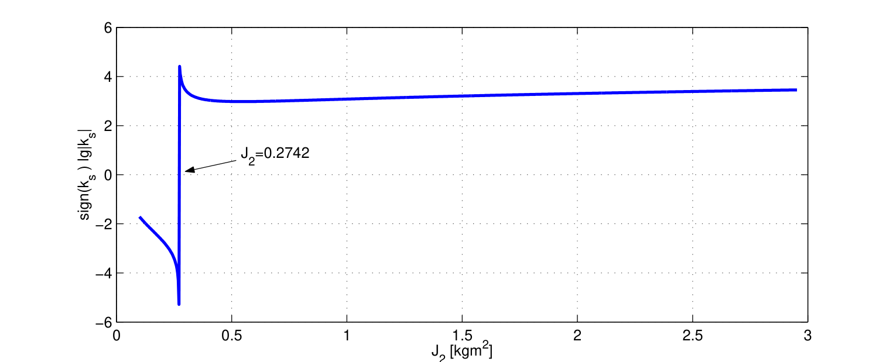
图 6.4: 常数特征值下关节刚度随输出侧质量惯性 $J_2$ 的变化
这两点是对状态线性化提出的设定常数特征值的重要反对论据。因此，在实际实现中寻找了更合适的解决方案。
6.4 常数关节刚度的设定
从上一节得出了需要根据输出侧惯性 $J_2$ 改变关节特征值的结论。作为设定常数特征值的替代方案，现在提出设定常数期望关节刚度 $k_a$，同时要求实特征值和尽可能高的带宽。这种方法有几个优点：
- 这种方法不仅保证了统一的控制器结构，还保证了力矩、位置和刚度控制器的统一设计方法。位置控制器只是最大可实现刚度的一个特殊情况。
- 如所示，设定特征值会导致难以理解的、不期望的工作状态，例如关节刚度可能为负。然而，设定一个正的常数刚度在物理上是直观的。正如将会看到的，在给定惯性下，更高的刚度隐含地意味着更高的带宽，因此在实验情况下，可以通过改变单个参数来“调整”控制器。
- 在给定刚度下，特征值随质量惯性 $J_2$ 的减小而更快。这更符合系统的自然行为，因此导致更小的控制器作用。因此，可以在工作空间的每个位置利用最大可达到的带宽。
- 在许多情况下，尤其是在接触情况下，定义的、统一的刚度比恒定的带宽更受欢迎（第6.10节）。
在设定常数刚度时，当然不可能同时进行任意的极点配置。下面我们将研究这种关系。为此，考虑来自 (5.97) 的系统描述，状态变量为 $\{\dot{q}_1, q_1, \dot{\tau}/k, \tau/k\}$。
通过具有增益 $k_R = [k_d, k_p, k_s, k_t]$ 的状态反馈，得到受控系统 $A = A_1 - b_1 k_R^T$ 的特征多项式：
对于期望的特征多项式，可以考虑以下通用形式：
如前所述，$\xi_p$ 和 $\xi$ 根据期望阻尼 $d_a$ 确定。但在实践中，通常是 $d_a = \xi = \xi_p = 1$，因此得到两个实极点对。通过两个特征多项式的系数比较
产生四个方程。由关节刚度方程 (6.27) 得：
因此，得到一个具有六个未知数 $\{k_d, k_p, k_s, k_t, \zeta, \omega\}$ 和五个方程的系统。在这些方程中，控制器参数是线性出现的，因此可以很容易地消去。很明显，只能设定 $\zeta$ 的值，然后得到 $\omega$ 的值。但由于变量 $\zeta$ 和 $\omega$ 以二次方进入方程，不能保证对于每个实数 $\zeta > 0$ 都存在一个实数、正的 $\omega$。直接但繁琐的计算需要使用符号方程操作程序。最终得到一个形如
的方程，其中 $\theta = \{d, d_1, d_2, k, J_1, J_2, k_p, k_d, k_s, k_t, \xi, \xi_p, k_a\}$ 表示所有被控对象和控制器参数以及期望阻尼和刚度。由此可以推导出使 $\omega$ 为实数且为正的必要条件。结果是一个关于 $\zeta$ 的四次不等式组，可以解析求解（附录C）。该方程的解在图6.5中对于 $J_2 = 10 \, \text{kg m}^2$ 以黑色显示。由此，对于每个刚度，得到导致 $\omega$ 为虚数的突出区间。注意到，对于感兴趣的刚度范围，除了在原点附近、低于 $k_{\text{krit}}$ 的区域外，可以给特征值赋予任意正值。需要指出的是，$k_{\text{krit}}$ 以及禁止区域的大小会随输出侧质量惯性变化。现在的问题是，在实际情况下应该如何选择特征值。一个简单的可能性是 $\zeta = \omega$。将这个条件代入 (6.34)，得到一个关于 $\zeta$ 的四次方程。该方程的解在图6.5中以虚线显示。可以区分两种情况：
- 低于 $k_{\text{krit}}$，无法放置四重极点。此时两个特征值必须位于禁止区域之上，两个位于之下。
- 高于 $k_{\text{krit}}$，有两种可能以稳定的四重极点 ($\zeta > 0$) 达到给定的刚度。上支随着刚度的增加导致越来越大的特征值。下支非常平坦。它对应于图6.4中的不连续性。对于特征值的微小变化，刚度变化非常剧烈。虽然在理论上这可以实现关节的硬化，但在实际情况下会导致不可预测的行为。
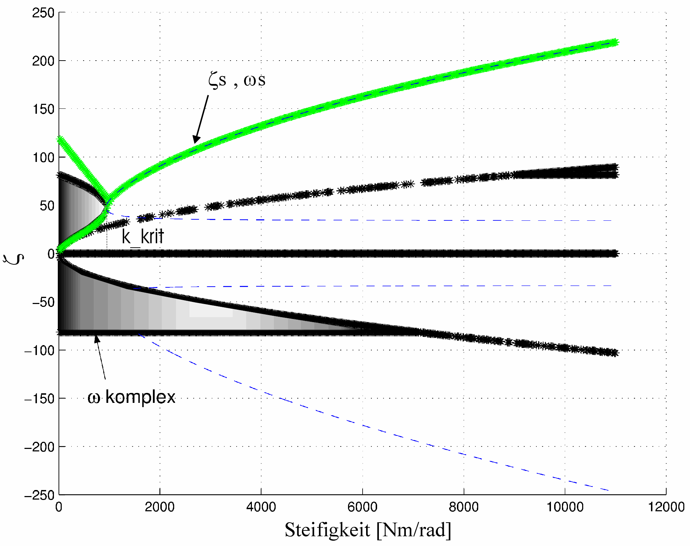
图 6.5: 期望特征值对期望刚度的依赖性。灰色标记区域导致 $\omega$ 为复数值。
在图6.5中，给出了 LBR 中使用的特征值 $\zeta_S$ 和 $\omega_S$ 对期望刚度的依赖关系的解。如果可能，选择四重极点。对于 $k_a = 0$，即力矩控制器，两个特征值为零，另外两个被设定为使力矩控制具有足够带宽。在两者之间，一个特征值对进行线性插值。另一个特征值对则由 (6.34) 得出。
6.5 在机器人上的实现
用于确定特征值的符号计算在 Maple 中完成。然后通过自动代码生成将 Maple 的结果转换为 C 程序。这些例程在笛卡尔控制器的周期中被调用。它们接收当前质量惯性 $J_2 = m_{ii}(q_2)$、所有关节参数、期望刚度 $k_a$ 和期望阻尼 $d_a$ 作为输入参数。作为中间结果，确定期望特征值，并由此计算控制器增益。对于所有七个关节，这些算法在 450 MHz 的 Power-PC 上总共需要 4 ms。
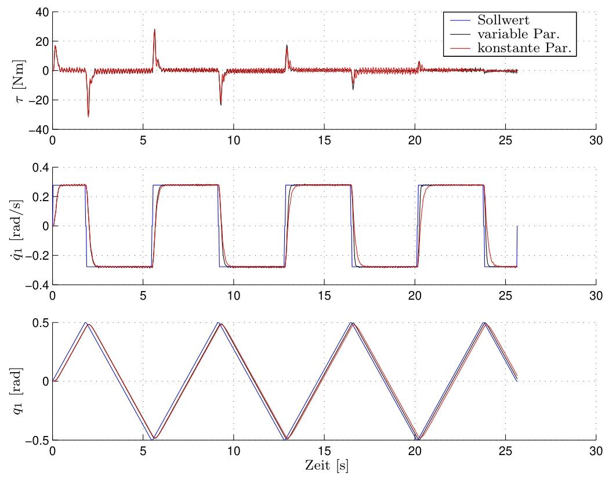
图 6.6: 常数参数控制器与可变参数常数期望刚度控制器的比较
图6.6显示了该控制器的实验结果。测量在 LBR2 的第一轴上进行。关节执行锯齿轨迹以测试控制器对速度的阶跃响应。同时，第二轴从初始 $q_2 = 90^\circ$ 运动到最终 $q_2 = 0^\circ$。因此，在记录过程中，第一轴的输出侧质量在 $m_{11}(q_2) \approx 10 \ldots 0.1 \, \text{kg m}^2$ 范围内变化。第一条轨迹使用可变参数控制器，第二条使用常数参数控制器。常数参数控制器是为惯性 $J_2 = 10 \, \text{kg m}^2$ 设计的（另见5.5）。因此，两种控制器在大惯性下表现相同。但在可变参数控制器中，当质量惯性变小时，带宽显著增加。这一特性可用于通过选择合适的机器人位置来加速过程。
6.6 常数刚度设定时的限制
设定常数刚度的状态控制器已以上述形式在机器人上实现，并成功用于实现笛卡尔关节刚度（第6.10节）。尽管如此，一些相关问题尚未完全解决。本节将再次提出这些问题，并在接下来的章节中提出解决这些问题的控制器。
- 一个令人不满意的点是，通过全状态反馈，受控驱动器的期望刚度和特征值不能同时设定。现在将寻求扩展控制器结构以消除这个缺点。
- 在控制器的实验测试中发现，最大刚度受到高输出侧质量惯性下稳定性边界的限制。与设定常数特征值相比，设定常数刚度时这个问题已大大缓解，但在某些情况下，四个相同的特征值似乎并不合理。因此，提供一个更合适的替代方案是有意义的。
- 两种提出的方法在非常小的 $J_2$ 值时也表现出稳定性问题。在这种情况下（见图6.3），复特征值变得越来越快，以至于实际上它们可以被忽略。这不再是一个双质量系统，而只是一个单质量系统，即一个二阶系统。这种情况发生在例如机器人的最后几个关节在空载运动时。文献中提出了将机器人关节分为弹性和刚性的方法，然后处理这种混合结构的控制 [58], [122]。但实际上过渡是平滑的，因此在任意阈值处切换两种模型结构是不合适的。在 LBR 的实际实现中，这个问题通过将用于设计常数刚度控制器的最小惯性 $J_2$ 限制在一个最小值 $J_{2\min}$ 来解决。这避免了跳跃，并导致特征值的连续变化。这同时也限制了控制器的控制能量，因为控制器增益不会随着 $J_2 \to 0$ 而无限增大。在第6.8、6.9节中，也将提出一种解决方案，它不是对 $J_2$ 进行不自然的限制，而是以直接方式实现向刚性关节的过渡。
- 从理论角度来看，由于已经非常复杂的控制器设计，建立常刚度控制器的通用形式（类似于第4.1.5、4.1.6节）并能在考虑和补偿完全非线性动力学的情况下保证其稳定性的前景不大。在制定后续控制器时，将特别注意使这种扩展成为可能。
6.7 同时设定期望刚度和常数特征值
再次考虑在外部力 $\tau_{\text{ext}}$ 作用下的关节方程
为清晰起见，关节阻尼设为零，以便与非线性情况下的已知方法进行比较。采用当前在机器人中实现的状态控制器，状态为 $\{q_1, \dot{q}_1, \tau/k, \dot{\tau}/k\}$，期望值 $q_{2d} = 0$：
关节的阻抗为
由此得到已经讨论过的刚度表达式
但从 (6.39) 也可以看出，为什么在这种情况下不能进行任意的极点配置。因为有了 (6.40)，$s^2$ 和 $s^0$ 的系数不能独立选择。
现在考虑带状态反馈的关节 (6.35–6.37)，如状态线性化所建议的，状态为 $\{\tilde{q}_2, \dot{\tilde{q}}_2, \ddot{\tilde{q}}_2, \dddot{\tilde{q}}_2\}$：
在这种情况下，关节阻抗为
这里注意到与 (6.39) 的明显区别。使用这种状态反馈不能实现负刚度，因为现在 $k_a = k_0$，且对于稳定系统 $k_0$ 必须为正。同时，为了任意提高刚度，特征值也必须任意高（与图6.3中的下正支不同）。这种状态反馈的另一个缺点是在摩擦作用下的性能比反馈力矩差。
从这两种情况的研究中，得出反馈以下五个状态量的建议：$\{\dot{q}_1, q_1, \tau, \dot{\tau}, \dot{q}_2\}$，控制器为：
这导致阻抗表达式为：
刚度表达式 (6.40) 保持不变。通过引入 $k_2$ 到 $s^2$ 的系数中，现在特征多项式
可以独立于 $k_a$ 设定。得到以下方程组：
总是可以按指定顺序 $\{k_p, k_t, k_d, k_s\}$ 直接计算。这个优点是以反馈加速度为代价的。为此，加速度必须要么可测，要么在已知 $\tau_{\text{ext}}$ 和 $J_2$ 模型的情况下从 (6.36) 计算。如果两者都不可行，则必须满足于前述的控制器结构之一。
6.8 输出侧惯性的限值考虑
接下来，处理期望特征多项式 $P_S(s)$ 作为 $J_2$ 函数的选择。为此，将被控对象的传递函数改写为驱动技术中常用的形式 [87]：
当 $J_1 \to 0$、$J_2 \to 0$ 或 $k \to \infty$ 时，第二个括号消失。在所有这些情况下，双质量系统退化为一个具有质量惯性 $J_\sigma$ 的单质量系统，因为要么等效质量 $J_\pi$ 变为零，要么弹簧弹性变得可忽略。因此，这种表示为选择特征值提供了一个良好的起点。
问题仍然是如何选择特征值，以使所得控制器能够扩展到非线性情况。这里提出的解决方案基于 [95] 的基于无源性的控制器，其在弹性系统上的可能扩展已在第4.1.6节中介绍。将受控刚性机器人部分 (4.42) 的方程简化为单自由度，剩下以下简单方程：
或在拉普拉斯域：
具有两个特征值 $\lambda_1 = -\lambda$ 和 $\lambda_2 = -k_\Delta/M$。可以看到，一个特征值保持恒定，而另一个当 $M \to \infty$ 时趋于零，当 $M \to 0$ 时变得任意快。P 项也保持恒定，只有阻尼随质量增加而增加。与设定常数特征值相比，这导致了更鲁棒的行为和更好的最大带宽利用 [72]。
如第4.1.6节所述，已有将该控制器扩展到弹性关节机器人情况的方法 [14], [54]。但它们是将 Slotine 和 Li 的控制器直接应用于刚体部分，而没有对弹性机器人问题的实际感受。因此，无源性思想没有扩展到弹性部分的动态，而且一些特殊情况，例如 $J_2 \to 0$，不会产生可用的结果（因为需要 $M^{-1}$，这些方法无法应用）。这里提出的控制器旨在消除这些缺点，从而产生一个实际可用的控制器。为了更好地理解，现在将在线性系统部分的单关节中介绍该控制器。在第6.9节中，控制器将以一般的非线性形式推导。
基本思想是不对惯性 $J_1$ 或 $J_2$ 应用特征值设定 (6.52)，而是对 (6.51) 中的 $J_\sigma$ 和 $J_\pi$ 应用。这意味着建议受控系统的特征多项式 (6.45) 具有以下形式：
两个特征值 $\{-\lambda_1, -\lambda_2\}$ 是常数。另外两个特征值根据 $J_\sigma$ 和 $J_\pi/k$ 变化。表6.1总结了控制器在我们感兴趣的特殊情况下的行为。
表 6.1: 一些特殊情况
| 情况 | $J_2 \to \infty$ | $J_2 \to 0$ | 备注 |
|---|---|---|---|
| $J_\sigma$ | $\infty$ | $J_1$ | 对应于控制器 (6.52) |
| $\lambda_3$ | $0$ | $-\frac{k_{\Delta 1}}{J_1}$ | 在刚性情况下 |
| $J_\pi$ | $J_1$ | $0$ | 始终有界 |
| $\lambda_4$ | $-\frac{k_{\Delta 2} k}{J_1}$ | $-\infty$ | 对于 $J_2 \to 0$，$\lambda_4$ 变得可忽略 |
因此，得到了一个在刚体部分对应于基于无源性的控制器，而弹性部分始终被阻尼的控制器，且无需校正项无限增长从而导致不稳定。同时，存在一个概念上清晰且合理的向刚体模型过渡的解决方案。
备注：在线性情况下，也许可以用以下形式的动态来代替 (6.52)
（其中 $0 \le \xi \le 1$，$\omega > 0$），因为这样可以获得相同的特征值和更好的控制器参数限制。但这离获得一个可在非线性情况下扩展的控制器的目标更远了。
6.9 基于无源性的“能量整形”控制器
在第6.7节中为快速、线性化系统部分开发的极点配置思想 (6.54)，将在本节中扩展到机器人的完整非线性动态。为此，再次从被控对象模型 (6.3–6.5) 出发。如第6.7节所建议，对于机器人动力学的刚体部分，使用 [95] 的控制器。除了合理的特征值分布外，它还具有经过验证的自适应变体的优点。因此，期望的关节力矩（见4.41）为
其中使用以下记号：
但是，与目前已知的控制器不同，为了在这个刚体部分中也包含电机惯性，将 $J s$ 加到两侧。由 (6.3)、(6.56) 得：
为了后续简化，引入另一个记号：
$u_s$ 是一个仅依赖于刚体部分状态 $\{ \dot{q}_2, q_2 \}$ 和期望值 $\{ \dot{q}_{2d}, \ddot{q}_{2d}, q_{2d} \}$ 的函数。$u_s$ 对应于极限情况 $K \to \infty$ 下无源性控制器的电机力矩。由此，从 (6.59) 得
结合 (6.4)，(6.61) 变为
这个方程现在应仅表示为 $z$ 和 $u_s$ 的函数。从 (6.3) 和 (6.62)，经过一些直接计算得到
其中 $J_\Pi$ 表示矩阵
更仔细地观察该矩阵，注意到在标量情况下，它对应于 (6.51) 中的惯性 $J_\pi = J M / (J + M)$。
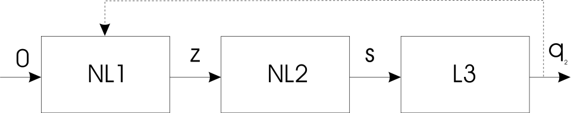
图 6.7: 受控系统表示为级联结构
将 (6.64) 代入 (6.63)，最终得到：
其中（非常复杂的）项 $D_0$ 仅依赖于状态和期望值。为电机力矩选择以下形式的控制律
则结合 (6.59)，得到受控系统的以下动态：
该系统表示为一个级联结构，由非线性和线性模块组成，如图6.7所示。
通过将 (6.58) 代入 (6.69) 并进一步代入 (6.70)，将受控系统的方程仅表示为 $q_2$ 及其导数的函数，然后将系统简化为单自由度，得到具有期望特征值行为的 (6.54)。因此，表6.1中总结的所有性质都成立。
文献中已知的与这里提出的控制器最接近的控制器在 [54], [14] 中提出。但两者都没有出现 $J_\Sigma - J_\Pi$ 结构，据我们所知，这是该领域的一个新想法。刚体部分的基于无源性的控制器在那里只包含惯性矩阵 $M$。在第一个文献中使用了 $\tau - \tau_d$，在第二个中使用了 $q_1 - q_{1d}$ 来代替 $z$。这导致例如在 [54] 中出现带有 $M^{-1}$ 的项，当 $M \to 0$ 时会导致无限的控制作用，而在 [14] 中特征值独立于刚度，这在更刚性的机器人中会导致问题，因为仍然试图设定相同的慢特征值。
6.9.1 稳定性证明
该控制器的稳定性分析比第5.1节中常数参数控制器的稳定性分析要简单得多。这里控制器的设计使得受控系统达到期望的动态，可以直接进行稳定性研究。显然，困难被转移到了实现这个非常复杂的控制器上。不同类型 (6.72, 6.71) 的级联系统的稳定性分析是过去十年理论控制研究的一个课题 [90], [51], [71], [57]。证明方法遵循 [14] 中的方法，因为 [54] 中的证明方法导致过于严格的稳定性条件。基本思想是每个单独的模块本身是稳定和无源的。在这些条件下，首先在模块 $NL1$ 中输出 $z \to 0$。由此得到 $s \to 0$ 和 $q_2 \to 0$。
然而，对于系统 (6.69–6.70) 的情况，与 [14] 或 [90] 中的定理相比有一个关键区别。那里提出的稳定性证明涉及三角结构系统：
在我们的情况下，(6.70) 包含通过 $J_\Pi(q_2)$ 反馈回来的系统 (6.69) 的输出值 $q_2$ 作为额外的输入，即使状态 $z$ 的收敛不受 $q_2$ 值的影响。因此，必须为此情况扩展现有的理论结果（附录D），以便随后证明以下稳定性定理：
定理 2 使用控制器 (6.67)，受控系统的动态 (6.69–6.70) 是全局渐近稳定的。
证明基于这样一个事实：(6.70) 的全局渐近稳定性 (GAS) 与 (6.69) 的 BIBO 稳定性共同保证了整个系统的 GAS。
诚实的表述不应隐瞒实现这类算法的计算量使得技术实现看起来不太可能。因此，质疑这类解决方案的意义和用途是合理的。对此可以给出以下答案：
- 从线性控制器的角度来看，解 (6.52) 和 (6.55) 是等价的。只有在考虑非线性情况时，(6.52) 的优势才变得明显。在控制器开发过程中，控制器的建立和验证一方面针对快线性动态部分（第6.8节）迭代进行，另一方面借助这里提出的非线性方法进行。
- 研究非线性控制器是识别由于线性简化导致的稳定性风险唯一方法。
- 最后，完整的非线性控制器代表了一个理想解，至少可以在仿真中与不同的简化进行比较。在此过程中，可以权衡忽略单个项的影响，并为实验中出现的某些不准确性提供解释。
6.9.2 $\Sigma - \Pi$ 控制器的实验结果
第6.8节和第6.9节中提出的控制器概念已作为具有可变参数和动态补偿的控制器（即使用第6.1节中的简化假设）在 LBR2 上实现。关节层面的结果如图6.8和图6.9所示。图6.10显示了与笛卡尔层面的常数参数控制器的比较（另见图3.17–3.21）。这里可以注意到位置误差的显著减小。然而，图6.8和图6.9中的测量信号由于由此产生的更高增益而噪声更大。
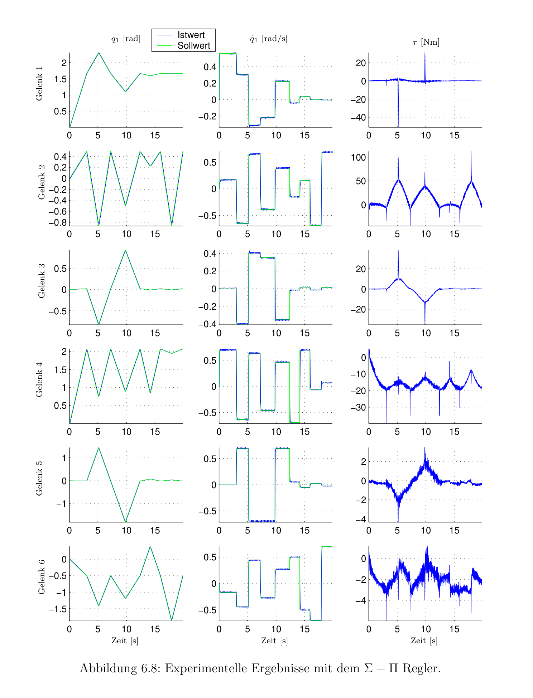
图 6.8: $\Sigma - \Pi$ 控制器的实验结果
图 6.9: $\Sigma - \Pi$ 控制器的实验结果，放大细节
图 6.10: $\Sigma - \Pi$ 控制器的实验结果：笛卡尔位置
6.10 笛卡尔刚度控制
本节将展示先前介绍的关节变量控制方法的一个应用。本节旨在将这些控制方法置于整个机器人控制的更广泛背景中，并简要介绍笛卡尔刚度控制的理论和实验结果。最后，以在发动机缸体中自动装配活塞作为实际应用进行描述。
6.10.1 LBR 中笛卡尔控制的结构
在图1.3中，概述了 LBR 的整体控制结构。关节控制以分散方式在单个关节的信号处理器上进行。可以选择关节中的力矩、位置或阻抗接口。关节控制器以 1 ms 的周期从中央控制计算机接收关节期望值 $\{\dot{q}_d, q_d, \dot{\tau}_d, \tau_d\}$、状态控制的可变参数 $\{k_d, k_p, k_s, k_t\}$ 以及电机力矩前馈 $\tau_{ms}$。在同一周期内，实际值被传输回控制计算机。我们控制器中需要来自整个机器人信息的部分（例如刚体动力学、前馈以及可变参数）在机器人控制器中计算。笛卡尔控制和任务编程也在同一台计算机上运行。
因此，轻型机器人非常适合研究笛卡尔控制的不同理论方法。笛卡尔力控制可以直接访问力矩接口，或者通过逆运动学访问位置接口。
为了笛卡尔刚度控制，研究并实现了三种已知方法。刚度控制的目标是实现以下笛卡尔力 $f$（6×1）与位置偏差 $\Delta x = x_0 - x$（6×1）之间的动态关系：
$x_0$ 是在没有外力时假设为常数的期望位置，$x$ 是当前的机器人位置，$K_k$ 和 $D_k$ 是笛卡尔期望刚度和阻尼矩阵。重要的是要记住，无论实现方法如何，电机力矩始终是实际的控制输入。
导纳控制：在此方法中，末端执行器处的笛卡尔力通过 6 自由度力-力矩传感器测量，并由此产生笛卡尔期望位置 $x_d$。通过逆运动学 $K^{-1}$ 将其转换为关节期望位置。关节位置控制器据此产生电机期望力矩。
这种方法最为普遍，因为大多数机器人只有位置接口。其优点在于位置控制负责补偿关节摩擦，并且实现高刚度在慢笛卡尔环中需要低增益，而利用关节位置控制中的高增益。因此，很明显，在低刚度和阻尼下会出现稳定性问题，此时笛卡尔控制和关节控制的带宽必须相似 [30]。这个问题在弹性关节机器人中更为突出，因为关节控制的带宽更受限制。另一个问题出现在通过奇异点时，导纳控制器通常表现出不稳定行为。
阻抗控制：阻抗控制直接从 (6.73) 出发，其中使用正运动学从 $q_2$ 计算 $x = K(q_2)$。通过转置雅可比矩阵 $J^T(q_2)$ 产生关节期望力矩，然后由关节力矩控制器 $T_R$ 产生电机期望力矩 [82]。
当关节力矩可测时，这种方法才能正常工作，因为关节力矩控制器能够大部分补偿传动摩擦。该方法与导纳控制互补。它适用于低刚度和阻尼，因为在这种情况下笛卡尔环中只需要低增益，而力矩控制器的带宽得到了最佳发挥。相应地，在高笛卡尔刚度下会出现稳定性问题。在奇异点处的行为也不同于导纳控制。奇异方向上的力分量不会被映射到关节。因此，系统在奇异点处表现平稳且稳定，但刚度矩阵会被扭曲。
刚度控制：从前两种情况可以看出，当笛卡尔层面需要明显低于关节控制器的增益时，才能获得良好的性能。因此，产生了将笛卡尔刚度和阻尼转换为关节刚度和阻尼矩阵 $K_G$ 和 $D_G$ 的想法。假设这些矩阵变化缓慢，只需要较低的笛卡尔采样率。在关节中，则使用例如第6.4–6.7节中介绍的刚度控制器 $S_R$。
映射 $\mathcal{T}$ 以及矩阵 $\{K_G, D_G\}$ 只在局部有意义。后者表示力矩与位置变化或速度变化之间的局部关系：
在 [80] 的早期工作中，只提到了 (6.78) 中的第一项。在 [36], [18], [19], [1], [56] 中指出需要校正项。笛卡尔刚度和关节刚度之间的变换受生物模型的启发。人类手臂能够通过同时收缩拮抗肌来改变刚度 [36], [23], [49]。机器人的柔顺行为，无论是在末端执行器处还是在接触机器人结构时，对于确保与机器人互动的人的安全尤其重要 [86], [28]。在机器人中，这只能通过控制实现，而唯一的控制输入是力矩。如果试图根据以下定律实现笛卡尔刚度控制器：
那么对于大的偏差 $\Delta x$，实际刚度会出现显著误差。这些不准确性归因于 (6.77) 和 (6.78) 的局部特性。(6.78) 中的最后一项不能完全解决刚度问题，因为局部特性也由 $\frac{\partial (K_k \Delta x)}{\partial q} = K_k J(q_2)$ 决定。LBR2 上的实验证实，(6.79) 仅在一个可以将 $J(q_2)$ 视为常数的邻域内有效。
下面介绍在 LBR2 上实现的解决方案。该解决方案考虑了以下事实：
- $J(q_2)$ 和 $x$ 只能在较慢的笛卡尔环中计算。
- 机器人在关节层面具有高采样率，时滞可忽略，因此 $q_2 \approx q_{2G}$。
- (6.79) 仅在局部有效。
记号：在笛卡尔周期中测量的量用下标 $k$ 表示，来自关节周期的量用下标 $G$ 表示，而连续时间（瞬时）值没有下标。此外，例如 $\Delta q_k = q_0 - q_k$ 且 $\Delta q_G = q_k - q_G$。则成立：
这导致以下刚度期望关节力矩：
第一项对应于笛卡尔层面的阻抗控制器。第二项对应于 [80] 的刚度控制器。这里的刚度控制器与 (6.79) 不同，仅在局部、在最后测量的笛卡尔位置附近起作用，并有助于用快速的关节控制器桥接笛卡尔时滞。第三项对应于 (6.78) 中的校正项。由于这里出现笛卡尔弹簧力 $K_k \Delta x_k$，尽管雅可比矩阵在一个笛卡尔周期内变化很小，但不能总是忽略。第四项依赖于相对较小的 $\Delta q_{2G}$ 的平方，因此没有实际意义。类似地，得到阻尼部分：
其中第二项可忽略。
期望力矩 $\tau_d = \tau_{dK} + \tau_{dD}$ 可以作为力矩控制器的期望值。但为了优化利用关节控制器的性能，使用关节刚度控制器更为合适。项 $J^T(q_{2k}) K_k \Delta x_k$ 在笛卡尔周期中计算，并作为刚度控制器的力矩期望值。项 $J^T(q_{2k}) K_k J(q_{2k})$ 和 $\frac{\partial J(q_2)^T}{\partial q_2} K_k \Delta x$ 也在笛卡尔周期中计算，并构成直到下一个笛卡尔步骤的关节期望刚度。
备注：由于当前关节控制器的分散结构，刚度控制器只能用于刚度矩阵的对角元素。非对角元素在中央、总线周期（1 ms）中计算并加到力矩期望值上。这种不足再次说明了中央关节控制的必要性。
6.10.2 应用示例：自动活塞装配
上述控制器的实现相比于传统刚度控制方法，在带宽和精度方面带来了显著改善。阻抗控制的机器人被用于自动将活塞插入发动机缸体（图6.11）。已知活塞的方向是垂直的。因此，在示教阶段，方向上的刚度设定得相对较高，而平移的刚度设为零，以便机器人可以用手引导。记录的轨迹随后被自动执行。此时，平移刚度被设高，而旋转被设软，以通过柔顺性补偿剩余误差。这样，轨迹可以比示教时快四倍执行，且无稳定性问题。整个过程，两个活塞用时不到6秒。之前，在另一个项目中，也曾使用工业机器人和柔顺力-力矩传感器进行过此装配 [42]。那里的重点是通过图像处理自动跟踪发动机缸体。然而，尽管优化了力控制器，但由于在硬接触下力控常规机器人时已知的稳定性问题，装配速度要慢得多。在这个背景下，轻量化、柔顺机器人的优势变得明显。我们认为，轻型机器人不仅在需要移动性和低重量的应用中，而且在需要在接触情况下处理不精确环境信息的应用中，都提供了优于传统机器人的显著优势。
图 6.11: 自动活塞装配的示教阶段
7. 总结与展望
本文提出了考虑完整非线性动力学的弹性关节机器人参数辨识和控制方法，并以两台 DLR 轻型机器人为例进行了实验实现和验证。DLR 轻型机器人的一个特点是，除了常规的位置检测外，还配备了用于测量输出侧力矩的传感器。这使得诸如用于重力补偿的力矩控制、可变关节刚度和阻尼控制以及主动振动补偿等控制概念不仅在原理上可行，而且能够高质量地实现。
现有的弹性关节机器人控制方法要么是实践驱动的，但大多无法在考虑完整机器人动力学的情况下提供理论稳定性证明；要么是理论驱动的，但由于复杂性，仅能在一两个关节的实验示例上实现。相比之下，本文提出的控制结构，其稳定性在理论上可证明，并且其实际适用性已通过在 DLR 轻型机器人上的实验和连续运行得到确认。
本文证明，对于 DLR 轻型机器人，采用弹性关节机器人模型在保持可管理复杂性的同时提供了足够的精度。介绍了简单可靠的辨识方法，这些方法能够实现轻型机器人的精确仿真。
控制器开发的第一阶段是带重力和摩擦补偿的关节状态控制器。所使用的状态变量是电机位置和关节力矩及其导数。该控制器结构简单，但对于弹性关节机器人，在实践上高效（就位置精度和振动阻尼而言）且在理论上完全合理。基于这些特性，我们认为该控制器结构具有与 PD 或 PID 控制器对于刚性工业机器人相当的实践意义。对于该控制器，本文进行了广泛的理论研究：考虑完整动力学的稳定性证明、关于参数不确定性的鲁棒性分析以及从无源性理论角度的分析。推导了控制器无源性的条件。这些条件确保了受控机器人的稳定性，不受质量矩阵变化（例如由有效载荷引起）的影响，并且在与任意无源环境接触时也能保持稳定。该控制器已在机器人上进行了连续运行实验和验证。结果通过测量记录进行了记录，并与仿真预测的行为进行了比较。这些理论成果以及实验实现代表了弹性关节机器人控制的一项创新贡献。
为了根据当前机器人位置优化控制性能，作为第一个控制器结构的扩展，提出了带可变参数和动态补偿的控制器。这种新颖的结构还具有适用于同时实现位置、力矩或阻抗控制器并抑制振动的优点。参数化通过期望刚度和阻尼值简单进行。该控制器在理论上和仿真中与其它已知方法进行了比较，这些方法由于高复杂性而无法在六或七个自由度的机器人上实现。结果表明，所提出的控制器允许对状态线性化控制器和基于无源性的控制器进行简化实现。
基于实验结果，对基于“能量整形”方法的理论控制器提出了自己的建议，其稳定性通过级联非线性系统稳定性理论来论证。该控制器消除了已知控制器方法在低或非常高输出侧惯性以及高刚度下的问题，从而显著提高了方法的实际可实现性。最后，介绍了新概念作为可变参数控制器的简化实现的实验结果。
得益于多功能的关节接口，轻型机器人非常适合实现和研究笛卡尔位置、力和阻抗控制的不同概念。作为所提出控制器结构的一个应用，展示了笛卡尔刚度控制的实现。在弹性关节机器人背景下，基于关节阻抗控制的笛卡尔刚度控制在文献中迄今鲜有论述。本文提出的方法一方面一贯地考虑了慢速笛卡尔动态，另一方面利用了关节层面快速、灵活的控制结构。这使得在与刚性环境接触时能够实现稳定且高效的操作。
在控制器开发过程中，从简单结构出发，逐步扩展到复杂且计算密集的算法。同时注意确保各个步骤在实践中合理且可实现，因此本文也可作为弹性关节机器人控制器设计的指南。在具体情况下，可以决定在实现和计算成本与由此获得的行为改进之间的最优平衡点。本文的结果也与工业机器人的控制相关，只要它们配备有用于获取输出侧信息的传感器，或者输出侧状态可以从其他信号观测。
从本文的理论研究中发现，测量输出侧角加速度对于实现阻抗控制器以及更好地解耦非线性动态可能是有利的。在本文中多次提到了中央关节控制作为当前局部关节控制替代方案的好处。未来的工作将尤其集中于此类解决方案的实际研究，以及笛卡尔控制结构的进一步发展。
附录 A: LBR2 的模型参数
本节汇总了表3.1中列出的 LBR2 的所有参数值。
表 A.1: LBR2 的 Denavit-Hartenberg 参数
| 轴 i | a [m] | α [rad] | d [m] | θ₀ [rad] |
|---|---|---|---|---|
| 1 | 0.0 | 0.0 | 0.0 | — |
| 2 | 0.0 | -π/2 | 0.213 | 0.0 |
| 3 | 0.25 | π/2 | 0.0 | -π/2 |
| 4 | 0.26 | -π/2 | 0.0 | 0.0 |
| 5 | 0.0 | π/2 | 0.0 | π/2 |
| 6 | 0.0 | -π/2 | 0.3385 | 0.0 |
| 7 | 0.0 | π/2 | 0.0 | 0.0 |
表 A.2: LBR2 的质量和重心
| 连杆 i | 质量 [kg] | 重心距离 $l_x$ [m] | $l_y$ [m] | $l_z$ [m] |
|---|---|---|---|---|
| 1 | 1.778 | 0.0 | 0.0 | 0.0¹ |
| 2 | 5.0249 | 0.1042 | 0.0023359 | 0.0008858 |
| 3 | 1.7877 | 0.1111 | -0.001836 | 0.005409 |
| 4 | 3.0685 | 0.0017297 | -0.01059 | -0.002953 |
| 5 | 1.1915 | -0.00001299 | -0.011362 | -0.11986 |
| 6 | 2.8785 | 0.0018438 | -0.01130 | -0.0045918 |
| 7 | 0.5721 | -0.00002610 | 0.0001501 | 0.058534 |
¹ 第一个连杆的重心无意义，因为它不影响关节力矩，因此设为零。
, 120]
表 A.3: LBR2 臂杆的惯性矩
| 连杆 i | $I_{xx}$ [kg m²] | $I_{yy}$ [kg m²] | $I_{zz}$ [kg m²] | $I_{xy}$ [kg m²] | $I_{zx}$ [kg m²] | $I_{yz}$ [kg m²] |
|---|---|---|---|---|---|---|
| 1 | 0.0 | 0.0 | 0.4996e-2 | 0.0 | 0.0 | 0.0 |
| 2 | 0.8870e-2 | 0.1235e0 | 0.1234e0 | 0.2528e-2 | 0.0 | 0.0 |
| 3 | 0.6763e-2 | 0.4613e-1 | 0.46153e-1 | 0.1746e-2 | 0.0 | 0.0 |
| 4 | 0.2058e-1 | 0.4404e-2 | 0.2006e-1 | 0.0 | 0.0 | 0.0 |
| 5 | 0.3077e-1 | 0.2924e-1 | 0.328e-2 | 0.0 | 0.0 | 0.0 |
| 6 | 0.20423e-1 | 0.4233e-2 | 0.1997e-1 | 0.0 | 0.0 | 0.0 |
| 7 | 0.2657e-2 | 0.268e-2 | 0.8615e-3 | 0.0 | 0.0 | 0.0 |
表 A.4: LBR2 的线性关节参数
| 关节 i | $d$ [Nms/rad] | $d_1$ [Nms/rad] | $d_2$ [Nms/rad] | $J_1$ [kg m²] | $k$ [Nm/rad] |
|---|---|---|---|---|---|
| 1 | 6.02 | 20.886 | 0.0 | 1.83644 | 8000.0 |
| 2 | 8.73 | 31.524 | 0.0 | 4.447 | 15351.0 |
| 3 | 4.31 | 15.133 | 0.4423 | 3.242 | 114000.0 |
| 4 | 2.75 | 15.934 | 0.0 | 1.8168 | 12000.0 |
| 5 | 3.64 | 10.720 | 0.161 | 1.3919 | 8800.0 |
| 6 | 2.11 | 12.621 | 0.018 | 1.4016 | 6600.0 |
| 7 | 3.64 | 11.720 | 0.161 | 1.3919 | 8800.0 |
表 A.5: LBR2 的最大力矩、电机和摩擦参数
| 关节 i | $\tau_{\max}$ [Nm] | $k_m$ [inc/A] | $\tau_C$ [Nm] | $\mu$ [-] |
|---|---|---|---|---|
| 1 | 70.0 | 7.540 | 0.0281 | 1.3789 |
| 2 | 180.0 | 9.70 | 0.088 | 134.263 |
| 3 | 110.0 | 9.268 | 0.052 | 154.024 |
| 4 | 70.0 | 7.0392 | 0.0707 | 149.763 |
| 5 | 25.25 | 5.9407 | 0.1126 | 503.365 |
| 6 | 25.0 | 5.895 | 0.1114 | 512.907 |
| 7 | 25.0 | 5.9407 | 0.1126 | 503.365 |
A.1 电机中陀螺力矩的意义
本节参照 [100]，以 LBR2 第二轴为例，说明忽略转子旋转惯性耦合的重要性。在本节中，为了便于理解，暂时使用真实的电机侧变量，而不将其转换到输出侧。在假设转子旋转对称且坐标系原点位于质心的情况下，转子 i 的惯性张量具有对角形式：
对于 LBR2 的第二轴：
动能为
$M_i$ 是转子质量，$v_i$ 和 $\omega_i$ 分别是平动和转动速度向量。由于转子的对称性，$v_i$ 仅取决于下方关节的输出侧位置 $q_2$。因此，转子质量可以加到下方连杆的质量中，从而在刚体动力学中予以考虑。由旋转运动引起的动能第二项可以展开为：
[100] 中的模型仅考虑了绕转子旋转轴的分量 $T_{i1} = \frac{1}{2} \omega_{zi}^2 I_{zzi}$。由于传动比 $n = 160$，$\omega_{xi}$ 和 $\omega_{yi}$ 通常比 $\omega_{zi}$ 小 n 倍。在假设
下，第二轴的动能误差为：
与其他建模误差（例如摩擦）相比，该误差确实可以忽略。
A.2 重力向量最大化常数
在第5章中提到，重力向量的导数受常数 $\alpha \in \mathbb{R}^+$ 限制，等价于
其中 $g$ 是重力向量，$q_{2a}$ 和 $q_{2b}$ 是任意两个输出侧位置。本节推导常数 $\alpha$ 的上界：
该值已在第5.5.2节中使用。其中 $g_{\max_i}$ 是重力在第 $i$ 轴上能产生的最大力矩。(A.8) 的推导基于以下事实：
由于重力向量是关节位置的连续向量函数，由中值定理可知存在常数 $\delta$（$0 \le \delta \le 1$）和向量 $q_{2\delta} = q_{2a} + \delta q_{2b}$ [7]，使得
由此得出
因此得到 (A.8)。
接下来证明 (A.9)。对于 $i = j$ 的情况，(A.9) 直观上容易理解，因为这种情况可以简化为考虑一个带负载的单关节。
尽管重力向量的显式通用形式复杂且不便于处理，但性质 (A.9) 可以通过一些相对简单的推理来证明，而不需要显式计算重力向量。为了计算各个偏导数，只需考虑两个关节 $i$ 和 $j$，其中只有关节 $j$ 运动。所有其他关节处于任意但固定的位置。轴 $i$ 的重力矩为
图 A.2: 用于计算重力力矩最大化常数的简化机器人模型示意图
$m$ 是关节 $i$ 上方所有部件的质量，$p_{Ci}$ 是质量 $m_i$ 质心的向量，$g$ 是重力加速度，$z_i$ 是关节 $i$ 旋转轴的单位向量。首先考虑 $j \le i$ 的情况。此时 $p_{Ci}$ 的幅值是常数，取决于负载和固定关节的位置，且小于或等于最大值 $P_{Ci\max}$。重力力矩 $g_i$ 具有以下形式：
其中 $\alpha$ 是 $p_{Ci}$ 和 $g$ 之间的角度，$\beta$ 是 $n_i$ 和 $z_i$ 之间的角度。这两个角度都可能随着 $q_{2j}$ 的变化而变化，而所有向量的幅值在这种情况下是常数。将所有向量在坐标系 $K_i$ 中表示，向量 $p_{Ci} = P_{Ci} [p_x, p_y, p_z]$ 是常数，其中 $P_{Ci}$ 表示幅值，$[p_x, p_y, p_z]$ 是一个单位向量。接下来，将重力加速度向量在坐标系 $K_i$ 中表示。由于这是一个自由向量，只有旋转是重要的。在世界坐标系中的向量 ${}^0 g = [0, 0, g]$ 与坐标系 $K_i$ 中的向量 ${}^i g$ 之间的关系为（图A.2）：
矩阵 ${}^i R_j = \{a_{ij}\}$ 和 ${}^j R_{j-1}^{-1} {}^0 R_0 = \{b_{ij}\}$ 是常数，而矩阵
包含绕 $\vec{z}_j$ 旋转角度 $q_{2j}$ 的旋转。重力力矩 (A.12) 则计算为
通过比较 (A.13) 和 (A.16) 的最后一行可知，$c_4 < 1$。因此，偏导数为
对于 $j > i$ 的情况，(A.9) 可以类似地证明，此时 ${}^i g$ 是常数，而 $p_{Ci}$ 的幅值和方向依赖于 $q_{2j}$。
附录 B: 矩阵的偏导数
在本文的某些地方，使用了形如 $\frac{\partial m(q)}{\partial q^T}$ 或 $\frac{\partial A(q)}{\partial q^T} \dot{q}$ 的表达式，其中 $m(q): \mathbb{R}^n \to \mathbb{R}^m$ 是一个向量对向量自变量的向量函数，$A(q): \mathbb{R}^n \to \mathbb{R}^{m \times p}$ 是一个矩阵对向量自变量的矩阵函数，$q(t): \mathbb{R} \to \mathbb{R}^n$ 是一个实对实自变量的向量函数。所使用的记号是紧凑且直观易懂的，但本附录将给出显式表示，这对于算法的实际实现是必不可少的。
首先证明 (2.14) 中使用的以下关系：
为了计算矩阵（这里是惯性矩阵 $M(q_2)$）的偏导数，将矩阵分解为行向量：
各个行向量的偏导数产生矩阵，因此：
因此也有
那么对于 (B.1) 左侧的一个元素 $i$，有：
另一方面，对于 (B.1) 右侧的一个元素，有：
由 (B.5) 和 (B.6) 可知，(B.1) 得证。
备注：需要指出的是，(B.1) 并不等同于
后者一般来说不成立。
接下来，也给出第6.10.1节中 (6.82) 的显式写法。在该方程中，同样使用了矩阵（这里是雅可比矩阵）对向量的导数 $\left( \frac{\partial J(q_2)^T}{\partial q_2} \right)$。将转置雅可比矩阵分解为行向量：
则 (6.82) 中关节力矩的第 $i$ 个元素为：
其中 $\Delta q_{2G} \frac{\partial J_i^T(q_2)}{\partial q_2}$ 的显式写法与 (B.4) 相同。
附录 C: 可变刚度下特征值的计算
第6.4节中原则上描述了在设定常数期望刚度时确定特征值的方法。本附录将给出更详细的计算说明。从关节的线性模型出发：
其中状态向量
且
通过具有增益 $k_R^T = [k_d, k_p, k_s, k_t]$ 的状态反馈，得到受控系统 $A = A_1 - b_1 k_R^T$：
矩阵 $A$ 具有以下特征多项式：
对于期望的特征多项式，可以考虑以下相对通用的形式：
如前所述，$\xi_p$ 和 $\xi$ 根据期望阻尼 $d_a$ 确定。在实践中，通常是 $d_a = \xi = \xi_p = 1$，因此得到两个实极点对。通过两个特征多项式的系数比较
得到以下方程组：
此外，关节刚度设定方程：
从方程 (C.8)、(C.12)、(C.9)、(C.11) 可以分别确定 $k_t$、$k_p$、$k_d$ 和 $k_s$ 作为 $\omega, \zeta$ 和被控对象参数的函数：
将这些结果代入 (C.10)，得到一个关于 $\omega$ 和 $\zeta$ 的二次方程，并依赖于被控对象参数向量 $\theta$：
其中
将 (C.17) 视为关于 $\omega$ 的二次方程，如果满足以下条件，则至少有一个实数正解：
每个括号都是一个关于 $\zeta$ 的四次不等式。因此，这些不等式的解可以解析确定。通过各个区间的交集或并集，得到特征值 $\zeta$ 的可行区域，如图6.5所示。
附录 D: Σ–Π 控制器的稳定性证明
本节将给出第6.9节中控制器稳定性的完整证明，该证明仅使用稳定性理论的标准结果。该证明主要受 [14] 的启发，其中概述了为弹性关节机器人不同控制器结构证明稳定性的思路。类似的证明也可以参考 [90], [51], [71], [57]。但这里提出的定理都不完全适用于第6.9节中的结构。
这些证明的基本思想比弹性关节机器人的具体问题更具一般性，因此将它们以两个更抽象的定理形式汇总是有意义的。
定理 2 给定非线性系统
具有以下性质：
(P1) 系统 (D.1) 关于输入-输出对 $\{x(t), u(t)\}$ 是无源的，即
其中 $V_0(x(t))$ 和 $D_0(x(t))$ 全局正定。
(P2) 函数 $D_0(x(t))$ 具有额外性质
则系统是 BIBO 稳定的。即
证明：
考虑类似李雅普诺夫的函数 $V(x, t) = V_0(x)$，根据 (P1) 它是正定的。则该函数沿系统 (D.1) 轨迹的导数为：
(D.4) 中的陈述包含两个事实：
- 对于有界的 $u(t)$，$x(t)$ 也是有界的。
- 如果 $u(t)$ 足够小，$x(t)$ 可以保持任意小。
为了证明有界性，可以遵循李雅普诺夫稳定性定理的证明方法（例如 [96]，第62页）。从 (D.5) 得
这对应于图D.1中的阴影区域。设 $V_{\delta_1 m}$ 为 $V(x)$ 在球 $B_{\delta_1}$ 上的最大值：
则
由于根据正定函数的定义，$x \to \infty \Rightarrow V(x) \to \infty$，由 (D.8) 可得 $x(t)$ 的有界性：
通过反向推理，也可以直接证明对于每个 $\epsilon > 0$，都能找到 $\delta_1$ 和 $\delta_2$ 使得 (D.9) 成立：
然后对于 $\delta_2 = \alpha \delta_1$，(D.4) 成立。
图 D.1: 定理2证明的示意图
备注：
函数 $V(x)$ 是系统
（即输入或扰动 $u(t)$ 设为零）的李雅普诺夫函数。（实际上，对于该系统，$\dot{V}(x(t)) = -D(x(t)) < 0$）。一个稳定系统在有界扰动下具有有界状态的性质被称为完全稳定性（[96]，第149页）。在原点的邻域内，每个一致渐近稳定的系统都是完全稳定的。但这在全局情况下并不总是成立（[96] 第151页的反例）。我们的定理证明了对于某类稳定的无源系统，全局完全稳定性。
该定理中的系统类别相对通用且具有实际意义。例如，无源机械系统可以转化为这种形式，其中 $x(t)$ 是位置和速度的线性组合，$u(t)$ 是力或力矩扰动。同样适用于无源电气系统。
在一些工作中，BIBO 稳定性仅被理解为在有界扰动下状态的有界性，而不要求误差消失时状态收敛。但参照李雅普诺夫意义下的稳定性定义，这个要求似乎是合理的。在形式 (D.4) 下，BIBO 稳定性也对应于输入-输出稳定性理论（[117]，第233页）中定义的 $L_\infty$-稳定性。
该定理出于清晰性考虑是在时不变情况下证明的，但可以很容易地利用李雅普诺夫理论扩展到时变情况。
定理 3 给定定理2中的系统，其中 $u(t)$ 还满足条件
则也有
证明：
需要证明
然后由李雅普诺夫论证得出 (D.13)。
定理2表明 $x(t)$ 是有界的。由 (D.12) 得
因此，从 (D.5) 可知，总存在一个时刻，之后 $\dot{V}(x, t) < 0$ 任意接近原点 $x = 0$：
现在假设 $V(x(t))$ 存在一个非零极限：
这意味着 $x(t)$ 有下界：
但从 (D.16) 可知
其中 $k < 1$。但这意味着
这与 $V(x(t))$ 正定矛盾，因此
利用这两个定理，可以很容易地证明第6.9节中受控系统的稳定性。系统的方程再次提及：
如果忽略 (D.22) 中的扰动项 $z(t)$，两个子系统具有相同的结构。系统 (D.23) 可以用记号 $w = \dot{z} + \Lambda_z z$ 写成
对于 $z(t) = 0$ 的 (D.22)，
是一个严格的李雅普诺夫函数（$V > 0$；$\dot{V} = -D(s(t)) < 0$）。实际上，
因此，
同样可以证明，对于系统 (D.23)，
是一个李雅普诺夫函数，其导数为
系统是全局渐近稳定的，因此 $w(t)$ 有界且
由此，因为
得到 $\dot{z}(t)$ 和 $z(t)$ 有界，并且
由 (D.28) 和 (D.34)，系统 (D.22) 满足定理3的条件。因此定理表明 $s(t)$ 有界且
由此，因为
得到 $\dot{q}_2(t)$ 和 $q_2(t)$ 有界，并且
至此，所有状态的有界性和收敛性得证。
参考文献
</span>1. ABADIA, D.: Comparative Analysis Development of Control Systems for the DLR Light Weight Robot. 硕士论文, DLR, University of Zaragossa, 2000.
2. ACKERMANN, J.: Abtastregelung. Springer Verlag, Berlin, 第3版, 1988.
</span>3. ALBU-SCHÄFFER, A. und G. HIRZINGER: State feedback controller for flexible joint robots: A globally stable approach implemented on DLR’s light-weight robots. IEEE International Conference on Intelligent Robotic Systems, 第1087-1093页, 2000.
4. ALBU-SCHÄFFER, A. und G. HIRZINGER: A Globally Stable State-feedback Controller for Flexible Joint Robots. Journal of Advanced Robotics, 特刊: Selected Papers from IROS 2000, 2001.
</span>5. ALBU-SCHÄFFER, A. und G. HIRZINGER: Parameter identification and passivity based joint control for a 7DOF torque controlled light weight robot. IEEE International Conference of Robotics and Automation, 第2852-2858页, 2001.
6. ANDREASSON, J., A. ALBU-SCHÄFFER und M. OTTER: Simulation of a light weight robot. 技术报告, DLR, 2000.
</span>7. APOSTOL, T. M.: Calculus, 第2卷. John Wiley and Sons, 第2版, 1969. 第254-259页.
8. ARIMOTO, S.: State-Of-The-Art and Future Research Direction of Robot Control. IFAC Symposium on Robot Control, 第3-14页, 1994.
</span>9. ARIMOTO, S.: Passivity-Based Control. IEEE International Conference of Robotics and Automation, 第227-232页, 2000.
10. ARIMOTO, S., S. KAWAMURA und H. HAN: Impedance Matching for Evaluation of Dexterity in Execution of Robot Tasks. IEEE International Conference of Robotics and Automation, 第1435-1440页, 1998.
</span>11. BAIER, H., M. BUSS, F. FREIBERGER, J. HOOGEN, P. KAMMERMEIER und G. SCHMIDT: Distributed PC-based Haptic, Visual and Acoustic Telepresence System - Experiments in Virtual and Remote Environments. IEEE VR’99, 第118-125页, 1999.
12. BAI, M., D.H. ZHOU and H. SCHWARZ: Identification of Generalized Friction for an Experimental Planar Two-Link Flexible Manipulator Using Strong Tracking Filter. IEEE Transactions on Robotics and Automation, 15(2):362-369, 1999.
</span>13. BARRON, A.: Universal Approximation Bounds for Superpositions of a Sigmoidal Function. IEEE Transactions on Information Theory, 39(3):930-945, 1993.
14. BROGLIATO, B., R. ORTEGA and R. LOZANO: Global Tracking Controllers for Flexible-joint Manipulators: a Comparative Study. Automatica, 31(7):941-956, 1995.
</span>15. BYRNES, C.I. and A. ISIDORI: Asymptotic Stabilization of Minimum Phase Nonlinear Systems. IEEE Transactions on Automatic Control, 36(10):1122-1137, 1991.
16. CACCAVALE, F., C. NATALE, B. SICILIANO and L. VILLANI: Six-DOF Impedance Control Based on Angle/Axis Representations. IEEE Transactions on Robotics and Automation, 15(2):289-299, 1999.
</span>17. CHEAH, C. and D. WANG: Learning Impedance Control for Robotic Manipulators. IEEE Transactions on Robotics and Automation, 14(3):452-465, 1998.
18. CHEN, S. and I. KAO: Theory of Stiffness Control in Robotics Using the Conservative Congruence Transformation. International Symposium of Robotics Research, 第7-14页, 1999.
</span>19. CHEN, S. and I. KAO: Simulation of Conservative Congruence Transformation Conservative Properties in the Joint and Cartesian Spaces. IEEE International Conference of Robotics and Automation, 第1283-1288页, 2000.
20. CHOW, J. and V. KOKOTOVIC: Two-Time-Scale Feedback Design of a Class of Nonlinear Systems. IEEE Transactions on Automatic Control, 23(3):438-443, 1978.
</span>21. CRAIG, J.J.: Introduction to Robotics. Addison-Wesley, 1986.
22. DOYON, M., V. HAYWARD and M. PELETIER: Decentralized Impedance Control. Preprint of the Fourth IFAC Symposium on Robot Control, 第389-394页, 1994.
</span>23. FAGG, A.H.: Robotics and Neuro-Science. Tutorial at the IEEE International Conference on Intelligent Robotic Systems, 2000.
24. FERRETTI, G., G. MAGNANI, P. ROCCO, F. CECCONELLO and G. ROSSETTI: Impedance Control for Industrial Robots. IEEE International Conference of Robotics and Automation, 第4028-4033页, 2000.
</span>25. FISCHLE, K.: Ein Beitrag zur stabilen adaptiven Regelung nichtlinearer Systeme. 博士论文, TU München, 1997.
26. GOMBERT, B., G. HIRZINGER, G. PLANK, M. SCHEDL und J. SHI: Modular concepts for the new generation of DLR’s light weight robots. Proc. Third Conference on Mechatronics and Robotics, 第30-43页, 1995.
</span>27. GROTJAHN, M., M. DAEMI und B. HEIMANN: Friction and rigid body identification of robot dynamics. PACAM, 1999.
28. GRUNWALD, G., G. SCHREIBER, A. ALBU-SCHÄFFER und G. HIRZINGER: Touch: The Direct Type of Human Interaction with a Redundant Service Robot. IEEE Roman Conference, 2001.
</span>29. HDRIVE: Calculation Guidelines for Efficiency and NLRT. 技术报告, Harmonic Drive, 1999.
30. HEINRICHS, B. und N. SEPEHRI: A Limitation of Position Based Impedance Control in Static Force Regulation: Theory and Experiments. IEEE International Conference of Robotics and Automation, 第2165-2169页, 1999.
</span>31. HIRZINGER, G.: Rotex — the first robot in space. Proc. Sixth International Conference on Advanced Robotics, 1993.
32. HIRZINGER, G., A. ALBU-SCHÄFFER, M. HÄHNLE, I. SCHAEFER und N. SPORER: On a New Generation of Torque Controlled Light-Weight Robots. IEEE International Conference of Robotics and Automation, 第3356-3363页, 2001.
</span>33. HIRZINGER, G., J. BUTTERFASS, M. GREBENSTEIN, M. HÄHNLE, I. SCHAEFER und N. SPORER: Space Robotics- Driver for a new mechatronic generation of light-weight arms and multi-fingered hands. AIM, 第1160-1168页, 2001.
34. HIRZINGER, G., R. KOEPPE, A. BAADER, F. LANGE, A. ALBU-SCHÄFFER, R. STAUDTE und G. WEI: Neural Perception and Manipulation in Robotics. Stattusseminar des BMBF, 第314-328页, 1996.
</span>35. HOGAN, N.: Impedance Control: An approach to manipulation, Part I - Theory, Part II - Implementation, Part III - Applications. Journ. of Dyn. Systems, Measurement and Control, 107:1-24, 1985.
36. HOGAN, N.: Mechanical Impedance of Single- and Multi-Articular Systems. In: WINTERS, J.M. und S. WOO (编): Multiple Muscle Systems: Biomechanics and Muscle Organization, 第149-163页. Springer-Verlag, New York, 1990.
</span>37. HÖLZL, J.: Modellierung, Identifikation und Simulation von Industrierobotern. VDI-Verlag, 1994.
38. HORNIK, K., M. STINCHCOMBE und H. WHITE: Multilayer Feedforward Networks are Universal Approximators. Neural Networks, 2:359-366, 1989.
</span>39. JANSEN, R. A.: Learning an accurate neural model of the dynamics of a typical industrial robot. International Conference on Artificial Neural Networks, 第1257-1260页, 1994.
40. JAZIDIE, A., T. TSUJI, M. KANEKO and M. NAGAMACHI: Hierarchical Control of End-Effector Impedance and Joint Impedance utilizing Arm Redundancy. Preprint of the Fourth IFAC Symposium on Robot Control, 第407-412页, 1994.
</span>41. JOHANSSON, R., A. ROBERTSON, K. NILSSON and M. VERHAEGEN: State-space system identification of robot manipulator dynamics. Mechatronics, 10:403-418, 2000.
42. JORG, S., J. LANGWALD, C. NATALE, J. STELTER and G. HIRZINGER: Flexible Robot-Assembly using a Multi-Sensory Approach. IEEE International Conference of Robotics and Automation, 第3687-3694页, 2000.
</span>43. KANELLAKOPOULOS, I., P. KOKOTOVIC and A. MORSE: Systematic Design of Adaptive Controllers for Feedback Linearizable Systems. IEEE Transactions on Automatic Control, 36(11):1241-1253, 1991.
44. KELLY, R.: PD Control with Desired Gravity Compensation of Robotic Manipulators: A Review. The International Journal of Robotics Research, 16(5):660-672, 1997.
</span>45. KHALIL, H.: Nonlinear Systems. Prentice Hall, 1996.
46. KHATIB, O.: Advanced Robotic Manipulation. Stanford University, Lecture Notes, 1993.
</span>47. KHATIB, O., K. YOKOI, O. BROCK, K. CHANG and A. CASAL: Robots in Human Environments: Basic Autonomous Capabilities. The International Journal of Robotics Research, 18(7):684-696, 1999.
48. KIRCANSKI, N., A.A. GOLDENBERG and S. JIA: An experimental Study of Nonlinear Stiffness, Hysteresis and Friction Effects in Robot Joints with Harmonic Drives and Torque Sensors. Preprint Int. Symposium on Experimental Robotics, 1993.
</span>49. KOEPPE, R. und G. HIRZINGER: From Human Arms to a New Generation of Manipulators: Control and design principles. ASME Int. Mechanical Engineering Congress, 2001.
50. KOEPPE, R., P. v.D. SMAGT, A. ALBU-SCHÄFFER, K. ARBTER and M. FISCHER: Neuronal Perzeption und Manipulation multisensorieler Manipulatoren und Roboterhände. 技术报告 ISSN 1434-8462, DLR-Mitteilung, 1999.
</span>51. KOKOTOVIC, P. und H. SUSSMANN: A positive real condition for global stabilization of nonlinear systems. Systems & Control Letters, 13:125-133, 1989.
52. KONNO, A. und M. UCHIYAMA: Vibration Suppression Control of Spatial Flexible Manipulators. Contr. Eng. Practice, 3(9):1315-1321, 1995.
</span>53. LIN, T. und A. GOLDENBERG: A Unified Approach to Motion and Force Control of Flexible Joint Robots. IEEE International Conference of Robotics and Automation, 第1115-1120页, 1996.
54. LIN, T. and A.A. GOLDENBERG: Robust Adaptive Control of Flexible Joint Robots with Joint Torque Feedback. IEEE International Conference of Robotics and Automation, RA-3(4):1229-1234, 1995.
</span>55. LIU, H., P. MEUSEL, J. BUTTERFASS und G. HIRZINGER: DLR’s multisensory articulated Hand Part II: The Parallel Torque/Position Control System. IEEE International Conference of Robotics and Automation, 第2087-2093页, 1998.
56. LI, Y.: On the Stiffness Control and Congruence Transformation Using the Conservative Congruence Transformation (CCT). ICRA, 第3937-3942页, 2001.
</span>57. LOZANO, R., B. BROGLIATO und I. LANDAU: Passivity and Global Stabilization of Cascaded Nonlinear Systems. IEEE Transactions on Automatic Control, 37(9):1386-1388, 1992.
58. LUCA, A. DE: Decoupling and Feedback Linearization of Robots with Mixed Rigid/Elastic Joints. IEEE International Conference of Robotics and Automation, 第816-821页, 1996.
</span>59. LUCA, A. DE: Feedforward/feedback laws for the Control of flexible robots. IEEE International Conference of Robotics and Automation, 第233-240页, 2000.
60. LUCA, A. DE und P. LUCIBELLO: A General Algorithm for Dynamic Feedback Linearization of Robots with Elastic Joints. IEEE International Conference of Robotics and Automation, 第504-510页, 1998.
</span>61. LUCA, A. DE, S. PANZIERI und G. ULIVI: Stable inversion control for flexible link manipulators. IEEE International Conference of Robotics and Automation, 第799-805页, 1998.
62. LÜCKEL, J., W. MORITZ und W. KUHLBUSCH: Modellierung und messtechnische Untersuchung eines hochübersetzenden Getriebes des DLR-Leichtbauroboters. 技术报告, Universität-Gesamthochschule Paderborn, 1996.
</span>63. LÜCKEL, J., W. MORITZ, R. NEUMANN, H. SCHÜTTE und G. WITTLER: Development of a Modular Mechatronic Robot System. Proc. of the Second Conference on Mechatronics and Robotics, 1993.
64. MA, D. and J.M. HOLLERBACH: Identifying Mass Parameters for Gravity Compensation and Automatic Torque Sensor Calibration. IEEE International Conference of Robotics and Automation, 第2763-2768页, 1994.
</span>65. MA, D., J.M. HOLLERBACH und Y. XU: Gravity based autonomous calibration for robot manipulators. IEEE International Conference of Robotics and Automation, 第2763-2768页, 1994.
66. MARINO, R. und M. SPONG: Nonlinear Control Techniques for Flexible Joint Manipulators: A Single Link Case Study. IEEE International Conference of Robotics and Automation, 第1030-1036页, 1986.
</span>67. MIESBACH, S.: Improving Path Tracking Systems for Industrial Robots by Neural Inverse Modeling. IEEE INNS Joint Conference on Neural Networks, III:13-18, 1992.
68. NICOSIA, N. und P. TOMEI: A Method to Design Adaptive Controllers for Flexible Joint Robots. IEEE International Conference of Robotics and Automation, 第701-706页, 1992.
</span>69. OLSSON, H.: Control Systems with Friction. 博士论文, Dept. of Automatic Control, Lund Inst. of Technology, 1996.
70. OPITZ, H.-P.: Die Hyperstabilitätstheorie - eine systematische Methode zur Analyse und Synthese nichtlinearer Systeme. Automatisierungstechnik, 6:221-230, 1986.
</span>71. ORTEGA, R.: Passivity Properties for Stabilization of Cascaded Nonlinear Systems. Automatica, 27(2):423-424, 1991.
72. PARRA-VEGA, V. und S. ARIMOTO: A passivity based adaptive sliding mode position-force control for robot manipulators. Int. Journal of Adaptive Control and Signal Processing, 10:365-377, 1996.
</span>73. PETERS, J.: Neural Networks in Robot Control: What can we learn from the Cerebellum? 硕士论文, FernUniversität Hagen, 2000.
74. PINTELON, R., P. GUILLAUME, Y. ROLAIN, J. SCHOUKENS und H. VAN HAMME: Parameter Identification of Transfer Functions in the Frequency Domain, a Survey. Proceedings of the 32nd Conference on Decision and Control, 第557-565页, 1993.
</span>75. POPOV, V. M.: Hyperstability of Control Systems. Springer-Verlag, New York, 1973.
76. PREUSCHE, C., R. KOEPPE, A. ALBU-SCHÄFFER, M. HÄHNLE, N. SPORER und G. HIRZINGER: Design and Haptic Control of a 6 DoF Force-Feedback Device. In: Workshop on Advances in Interactive Multimodal Telepresence Systems, Munich, Germany, March 2001.
</span>77. READMAN, M.C.: Flexible Joint Robots. CRC Press, 1994.
78. RHIM, S. und W. BOOK: Adaptation of Generalized Time-delay Command Shaper for Flexible Manipulator Control. IEEE International Conference of Robotics and Automation, 第1465-1471页, 2000.
</span>79. RICHTER, K.: Kraftregelung elastischer Roboter. VDI, 1991.
80. SALISBURY, J. K.: Active Stiffness Control of a Manipulator in Cartesian Coordinates. 19th IEEE Conference on Decision and Control, 第83-88页, 1980.
</span>81. SANNER, R. und J.-J. SLOTINE: Gaussian Networks for Direct Adaptive Control. IEEE Transactions on Neural Networks, 3(6):837-863, 1992.
82. SCHMIDT, G.: Skriptum: Grundlagen intelligenter Roboter. TU München, Lehrstuhl für Steuerungs- und Regelungstechnik, 2000.
</span>83. SCHMIDT, G.: Skriptum: Regelungs- und Steuerungstechnik 2. TU München, Lehrstuhl für Steuerungs- und Regelungstechnik, 2000.
84. SCHMIDT, G., U. HANEBECK und C. FISCHER: A Mobile Service Robot for the Hospital and Home Environment. Workshop Proc. of the IARP Second Int Workshop on Service and Personal Robots: Technologies and Applications, Genova, Italy, 23-24 Oct 1997.
</span>85. SCHREIBER, G. und G. HIRZINGER: An Intuitive Interface for Nullspace Teaching of Redundant Robots. International Symposium on Advances in Robot Kinematics, 第209-216页, 2000.
86. SCHREIBER, G., CH. OTT und G. HIRZINGER: Interactive Redundant Robotics: Control of the Inverted Pendulum with Nullspace Motion. IEEE International Conference on Intelligent Robotic Systems, 第158-164页, 2001.
</span>87. SCHROEDER, D.: Elektrische Antriebe 2: Regelung von Antrieben. Springer-Verlag Berlin Heidelberg, 1995.
88. SCHUETTE, H.: Symbolische Modellierung und beobachtergestützte nichtlineare Regelung eines modularen elastischen Robotersystems. 博士论文, Universität-GH Paderborn, MLAp, 1996.
</span>89. SCHUETTE, H., W. MORITZ, R. NEUMANN und G. WITTLER: Practical realization of Mechatronics in Robotics. Preprints of the Third Int. Symp. on experimental Robotics, Oct 1993.
90. SEIBERT, P. und R. SUAREZ: Global Stabilization of nonlinear cascade Systems. Systems & Control Letters, 14:347-352, 1990.
</span>91. SHI, J.: Experiments on the DLR Lightweight Joint. 技术报告, German Aerospace Establishment, Institute for Robotics and System Dynamics, 1994.
92. SHI, J., A. ALBU-SCHÄFFER und G. HIRZINGER: Key Issues in Dynamic Control of Lightweight Robots for Space and Terrestrial Applications. IEEE International Conference of Robotics and Automation, 第490-498页, 1998.
</span>93. SHI, J. und Y. S. LU: Field-Weakening Operation of Cylindrical Permanent-Magnet Motors. IEEE Int. Conference on Control Applications, 第864-869页, 1996.
94. SICILIANO, B. und L. VILLANI: Two-Time Scale Force and Position Control of Flexible Manipulators. ICRA, 第2729-2734页, 2001.
</span>95. SLOTINE, J. J. und W. LI: On the Adaptive Control of Robot Manipulators. The International Journal of Robotics Research, 6(3):49-58, 1987.
96. SLOTINE, J.-J. und W. LI: Applied Nonlinear Control. Prentice-Hall, 1991.
</span>97. SMAGT, P. v.D.: Visual robot arm guidance using neural networks. 博士论文, Univ. of Amsterdam, 1995.
98. SMAGT, P. v.D. und G. HIRZINGER: Solving the ill-conditioning in neural network learning. In: ORR, J. und K. MÜLLER (编): Neural Networks: Tricks of the Trade, 第193-206页. Springer Lecture Notes in Computer Science 1524, 1998.
</span>99. S.P. CHAN und H.C. LIAW: Experimental Implementation of Impedance Based Control Schemes for Assembly Task. Journal of Intelligent and Robotic Systems, 29:93-110, 2000.
100. SPONG, M.: Modeling and Control of Elastic Joint Robots. IEEE Journal of Robotics and Automation, RA-3(4):291-300, 1987.
</span>101. SPONG, M.: Variable Structure Control of Flexible Joint Manipulators. IEEE Journal of Robotics and Automation, 3(2):57-64, 1988.
102. SPONG, M.: Adaptive Control of flexible joint manipulators. Systems and Control Letters, 13:15-21, 1989.
</span>103. SPONG, M.: Adaptive Control of Flexible Joint Manipulators: Comments on two Papers. Automatica, 31(4):585-590, 1995.
104. SPONG, M. und M. VIDYASAGAR: Robot Dynamics and Control. John Wiley and Sons, Inc., 1989.
</span>105. STELTER, J.: Verbesserung des Positionsverhaltens und der Bahntreue eines Industriroboters durch Einsatz von Beschleunigungssensoren. 博士论文, Fakultät für Informatik der Univ. Karlsruhe, 2001.
106. STIEBER, M., S. SACHDEV und J. LYMEER: Robotics Architecture of the Mobile Servicing System for the International Space Station. International Symposium of Robotics Research, 第416-421页, 2000.
</span>107. STRAMIGIOLI, S. und H. BRUYNINCKX: Geometry and Screw Theory for Constrained and Unconstrained Robot. Tutorial at ICRA, 2001.
108. SWEVERS, J., C. GANSEMAN, X. CHENUT und J.C. SAMIN: Experimental identification of robot dynamics for control. IEEE International Conference of Robotics and Automation, 第241-246页, 2000.
</span>109. TAGHIRAD, H.D., P.R. BELANGER und A. HELMY: An Experimental Study on Harmonic Drives. 技术报告, McGill University, 1996.
110. TAKEGAKI, M. und S. ARIMOTO: A new feedback method for dynamic control of manipulators. ASME Journal on Dynamic Systems, Measurement and Control, 1981.
</span>111. THUMMEL, M., M. OTTER und J. BALS: Control of Robots with Elastic Joints based on Automatic Generation of Inverse Dynamics Models. IEEE International Conference on Intelligent Robotic Systems, 第925-930页, 2001.
112. TOMEI, P.: A Simple PD Controller for Robots with Elastic Joints. IEEE Transactions on Automatic Control, 36(10):1208-1213, 1991.
</span>113. TURK, S.: Dynamische Robotermodelle am Beispiel des Manutec r3. 技术报告, DLR, 1988.
114. TUTTLE, T.D.: Understanding and Modeling the Behavior of a Harmonic Drive Gear Transmission. 技术报告, MIT, AI Lab., 1993.
</span>115. VERDONCK, W., J. SWEVERS, X. CHENUT und J. SAMIN: Combining Internal and External Robot Models to Improve Model Parameter Estimation. ICRA, 第2846-2851页, 2001.
116. VERL, A.: Methoden und Realisierungen zur nichtlinearen Regelung des DLR-Leichtbauroboters. 博士论文, Ruhr-Universität Bochum, 1997.
</span>117. VIDYASAGAR, M.: Nonlinear Systems Analysis. Prentice-Hall, 1978.
118. YAMANO, M., A. KONNO und M. UCHIYAMA: Vibration Suppression Control of Two Cooperative Flexible Manipulators Working in 3D Space. International Conference on Advanced Robotics, 第385-390页, 1999.
</span>119. YIM, W.: Adaptive Control of a Flexible Joint Manipulator. IEEE International Conference of Robotics and Automation, 第3441-3446页, 2001.
120. YOSHIKAWA, T.: Foundations of Robotics. The MIT Press, 1990.
</span>121. YOSHIKAWA, T.: Force Control of Robot Manipulators. IEEE International Conference of Robotics and Automation, 第220-226页, 2000.
122. ZHU, W. und J. DESCHUTTER: Adaptive Control of Mixed Rigid/Flexible Joint Robot Manipulators Based on Virtual Decomposition. IEEE Journal of Robotics and Automation, 15(2):310-317, 1999.